← Juntadas ilustradas · Transcripciones de Telegram
Ejercicio Compartido
▶ Reproducir el video original (4:00:29) · transcripción .srt
Solos, juntada a 8, está en el mismo lugar donde están los ejercicios, en el mismo, juntada a 8, en el mismo link. A ver, acá, cómo instalar Python 3, WebSpec, bueno, es lo mismo, es lo mismo pasa para Python 2, es la misma cosa. Ahí está, porque si no, vos lo instalaste para Python, pasa que para Python 2, me parece que para Python 2 va a tener problemas, porque me parece que no es compatible, 100%, me parece que los que lo lograron instalarlo, lo van a instalar en Python 3. Python 2 siempre te tira un error, me parece. Él antes intentó instalarlo en Python 2 y no, le quedaba siempre un error dando vuelta por ahí, que no funcionaba. En cambio, hizo lo mismo en Python 3 y funcionó. Claro, por eso yo cambié ahora, digo, voy a cambiar la versión y cambié a Python 3.7 y voy a instalarlo ahora. Sí, sí, instalarlo ahí, ahí tenés la forma, ahí está el doc. Y también ahí mismo, en ese link ahí, un poco más arriba, están los ejercicios, ¿no? Este, el puntada 8. Ese es el link de los ejercicios. Ahora te lo paso, el de los ejercicios. Este es el de los ejercicios, por si alguien no lo tiene. Bueno, eso lo pasa en Clark Latino, vos no lo tenés. Bueno, ese es el de los ejercicios y el del otro, el del PDF. Ahí te lo paso a exploit. Ahí te pasé el ejercicio y el PDF. Ah, bueno, aquí cómo está. Listo, ahí están. Sí, eso es simplemente hacer lo mismo, pero en Python 3. En Python 2 no anda. Esa es la barbaridad. Pero bueno, si tenés instalado ya todo, simplemente... Sí, acabo de instalar el Python 3. Por eso, haces pip en Python 3 con pip 3 o pip de Python 3 y listo. Ya con eso te va a andar. Bueno, listo. Bueno, esperemos que vayan llegando después dentro de todos los otros. Yo no sé dónde estoy. Ahora me fui de ahí y ahora no estoy. ¿Estaba en el browser? Ya ni se... Ah, estaba en el browser, sí. Ahí está. Sí, ahí tiene el pip. Pero ese es el pip. Pone una consola ahí. Hace una consola ahí, pone pip y tal. Ahí mismo, ahí mismo, hace cmd ahí. Sí, sí. cmd, pip. Pip y tal. O pip 3 y tal. Perfect. Y ya te lo va a instalar ahí. O expect. O expect, sí. Ahí ya lo instalo. Ah, bueno, claro. ¿Por qué? Ah. No, pero no es Python, es pip. Y hazlo con pip solo. A ver, pip y tal. Sí, es que la cuestión es que yo he cambiado el nombre. Por no cambiar el entorno de palabras. Me había estado buscando el Python normal. El nombre normal. La cagué yo porque cambié el nombre aquí. Voy a arreglarlo porque si no. ¿Qué tal, Sigse? ¿Cómo va? Muy bien, muy bien. Fenámero. Acá está instalando Pexpect. ¿Instalaste eso, el Pexpect?
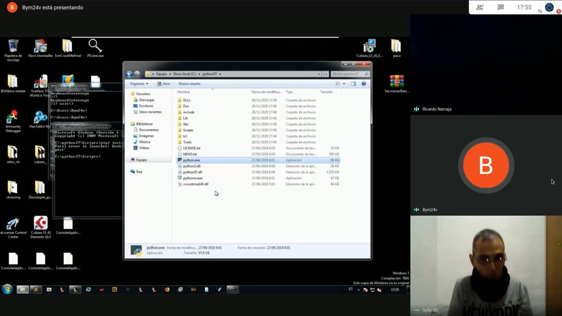
El Westpect ese. ¿No? ¿No? Sí, sí. ¿Instalaste el Westpect ese para el ejercicio ese? Estoy en ello. Bueno, ahí está justo ahí haciendo lo mismo. Bueno. Sí, en Windows 7, ¿no? Sí, todo es lo mismo. Lo único que tenés que es más fácil instalarlo en Python 3. En Python 2 no le gusta. Tiene que ser Python 3. Ahí está el tutorial. El tutorial ese que puso a Google funciona perfecto. Lo mandé ahí, lo mando ahí al... ¿Dónde está el chat? Acá no sé ni dónde está el chat. A ver, acá, ¿no? Bueno, ahora está bien. Chat, mire, güey. Ahí está el chat. Ahí está. Ahí está el link ese. Ahí está el PDF, creo. A ver. Ese era el PDF. Sí. Ya está bajando el Python 3. Bueno, ahí está el PDF. ¿Cómo instalar Python 3 y configurar PyCharm en Windows 7? Pero es para Windows 10 lo mismo, son iguales. Así que ese PDF funciona igual. Ah, pues lo meto en Windows 10, a ver si puedo. Sí, sí, es lo mismo. El tema es que sea Python 3. 3.7.6. Sí, está bien. Vale, lo instaló bien. Vamos a probarlo, a ver. Creo que sí, pero tiene un ejemplo aquí en el escritorio. Vale, bueno, ahora no da el error, porque es que antes, con el simple hecho de importar esto, ya me estaba dando el error. Digo, ¿qué cojones estaba haciendo? Claro, no, ahora ponés ahí el esqueleto ese que yo te puse, te puse un esqueleto. Bueno, da igual. Sí, en los ejemplos de la propia, del propio paquete hay unos ejemplos, sí. Sí, es lo mismo, ahí tenés que hacer, yo mandé un esqueleto ahí que estaba bastante... Ah, sí que es verdad, sí que es verdad el grupo, ¿no? Sí que es verdad. Sí. Una cosita, algo así, no sé, qué sé yo. Ponele. A ver, esperá que lo voy a mandar de vuelta. Qué sé yo. Mira, está aquí ya, este. Sí, yo lo pongo ahí de vuelta también. Primero importás el coso, llamás al archivo, y le pones el nombre del archivo ahí, y después haces spam, que es el que, este por ejemplo ahí, y después hay que hacer write y readline para mandarle datos ahí, ahí está. Con eso, llamando uno, manda, vuelve, qué sé yo, hace todo.
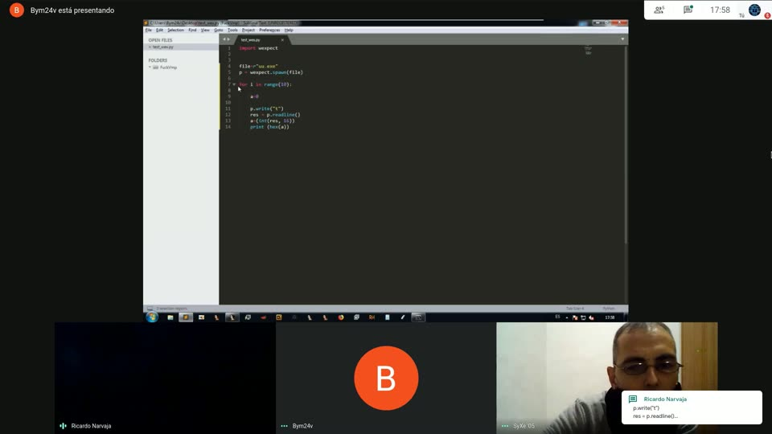
Bueno, está mal intentado, ¿no? Pero bueno, lo copié y lo pegué. No me acuerdo cómo era señalar aquí. Bueno, ahora yo me voy para el living, así que no le voy a poder pasar más datos, porque ahora acá estoy en la computadora, pero en la notebook no tengo nada, pero los voy a mirar, así que me voy para allá. Ok. Corto acá, corto acá, corto acá un cachito. Y luego era P, puntos en línea o algo así, creo que era. ¿No? Creo que sí, lo ejemplo estaba. Bueno, estoy instalando por el, por lo que dijo Ricardo, que luego haría falta para el ejercicio y tal, por eso me puse... No sale ahora. Vale. Bueno, vamos a probar el simple hello web que tiene. Bueno, aquí está, expect, sell line. Y expect, vale. Esto se lia. Vale, todo. Y ahora creo que era chill.white. Ah, claro, espérate, me salió la castaña. No he pillado el inicio. Sí, la cuestión es, bueno, ahora funciona bien. Bueno, simplemente con el Python 3.7 funciona de cine. ¿Qué tal, Snack? ¿Todo bien? Muy bien. ¿Todo bien, compañero? ¿Instalando el minodo? ¿Cómo? Instalando todo. Sí, claro, porque Ricardo en el grupo dijo que haría, porque el módulo este web spec lo que hace es que puede mandarle a automatizar por el STD y STD de la consola. O sea, como ha estado el ejercicio supuestamente por hilo y hay que estar mandándole todo el rato por teclado. Y entonces era un rollo de automatizar todo eso. Perfecto. Y según Ricardo. Tengo un punto de pie recién instalado, pelado, le estoy midiendo todas las herramientas ahora. Las tengo, muchas de ellas y otras no las vi bajando, las voy poniendo. Sí, sí, claro, conforme me vayan haciendo falta, claro, hay que ponerlas al día. Yo también tengo que pegar una formatea porque está ya grabada. Yo te instalé la semana pasada y está currando todos estos días y no tiene ni tiempo.
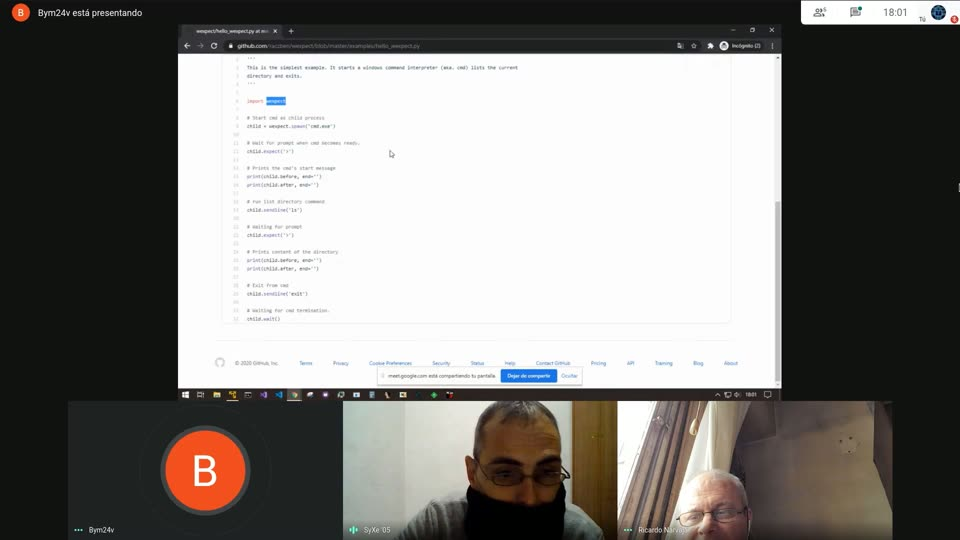
Sí, eso vi, ¿no? Que ha empezado un nuevo curro ahí. Y claro, no tiene ni tiempo. Hola, ¿me escuchan ahí? Hola. Sí, perfecto. Sí, sí, Ricardo. Igual también está el otro ejercicio que mientras pueden ir haciendo, el Kami ese, que también está bueno. No necesitan esto por ahora, digo, el Kami, ¿no? Ya, ya lo hice. Ese lo hice el otro día, Ricardo. Pero no sé si todos lo hicieron, por eso, bueno. Ah, yo no, yo ni sabía que había un Kami. Sí, hay un Kami y un Unpagmi. Están los tres ahí en la carpeta esa que pasé el link. O sea, en la carpeta juntada a ocho están los tres. El de Solid, el Unpagmi, está el Kami y el... Ah, los Kami mola, porque siempre están entretenidos, ¿eh? Sí, ese es lindo y no es muy difícil. Así parecido al Kami de Cruyget, pero un poquito más, así que un poquito más distinto. Sí, es lindo. Pero no, pero está lindo, está lindo. Así que si querés, antes de empezar este, que este ya lleva un rato, que la gente tiene que instalar, mientras va instalando, puedes mirar el otro. Sí, sí, claro. No, también me di cuenta que el Meet este de Google tiene una limitación de una hora, ¿no? O algo así. Creo que a la hora... Después tiene que cerrar y volver a abrir. Creo que después tiene que cerrar y volver a abrir. Ah, que cerrando y volviéndolo, abriéndolo... O sea, tiene que hacer un link nuevo. Creamos otro y ya está. Sí, guay, esto es guay. Guay, guay, guay. ¿Qué dice Rignal? ¿Eh? ¿Qué dice Rignal? ¿Qué pasa? Y acá estoy con la notebook, estoy acá. Ya, ya, ya te tiraron para otro lado. Me tiraron para acá, sí. Bueno, vamos a empezar a ver el ejercicio. Es que este, bueno, yo lo he visto así por encima y... Y va a llevar un tiempo al analizador. Va a llevar un ratito. Me parece que el otro es mucho más reversiable, más mirable, ¿viste? Este es medio... Sí, porque aparte como... El ejercicio de este último es como medio tiramos y vemos que pasa, tiramos y vemos que pasa. Sí, sí, sí, es que lo que vi es que se va a hacer largo porque... Sí, va a ser largo, pero bueno. Porque en la función que crea Lilo, aquí hay un... fíjate, hay un montón de comparaciones ahí, bastante y... Sí, hay que hacer una lista de que hace cada cosa. Claro, y esto es dinámico y entonces va a llevar un tiempo... Sí, igual. Bueno, aquí estamos, aquí estamos. No hay prisa. No hay prisa, exactamente. Yo, por lo menos, no tengo. ¿Y Soldat no habla? ¿Qué pasa? ¿No tiene micrófono? Sí, pues posiblemente. Hay veces cuando se metía también sí que tenía, no sé. Soldat no tiene el micrófono apagado, a lo mejor no se lo cuenta. Pues posible, a veces el navegador te pide permiso y si no te das cuenta te lo mutea, que a veces... Ah, ahí está, pero no se escucha. Sí, o a lo mejor está ocupado, no sé, él sabrá. Vale, pues esta es la que queríamos ver. Yo, mientras instala lo mío, voy mirando en tu pantalla.
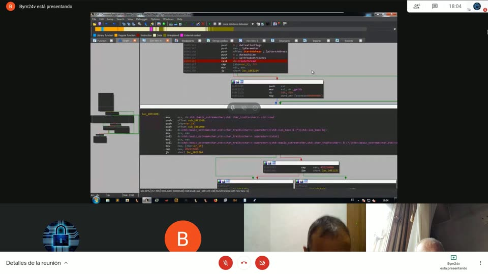
Vale, sí, sí, muy bien. A ver, ¿cómo era la de Visual Studio? ¿Cómo era...? No sé si... Había una forma de que no tenés que permitir a la gente o algo así. Ahí no lo sé. Sí, es que a Solid lo sé que en un vídeo lo hizo, de una forma que permitió que todo el mundo pudiera entrar y no tenía que estar pidiendo permisos para entrar. Vale, sí, automático, ¿no? Claro, porque si no, cada vez que alguien quiere entrar y si no me doy cuenta, ¿sabes? Se queda ahí en el olvido. Claro, señor, ¿quién ha creado la sesión, tú? No, yo no, él es. Él la viene en dos de la opción. Sí, sí, sí, pero es que aquí en los ajustes no me sale. ¿No te sale por ahí? Te tiene que salir, tío. Más acciones... A ver, cambiar fondo, activar subtítulos, pantalla completa, cambiar diseño, pizarra, notificar un problema, notificar uso inadecuado, solución de problemas de ayuda y configuración. Y en configuración tenemos audio o vídeo... Y en general pone enviar informes de diagnóstico adicional para ayudar a mejorar este producto, pero que no veo nada de eso. Bueno, estar atentos y ya está, no pasa nada. Sí, se podrá buscar, a ver, la forma de... Hola, Ale, bienvenido. Hola, ¿qué tal? ¿Cómo estáis? Bien, aquí estamos con Ricardo Hernández, Osdaf. Bien, bien. Y nada, para ver el ejercicio ese que mandó Ricardo. Hola. ¿Qué tal, Lola? Bien. Con ganas de ver el ejercicio y todo. Ah, mira, Osdaf sí que está escribiendo. Aquí estamos, aquí estamos. Mira, Osdaf está escribiendo. Sí, está escribiendo, pero no... Bueno, es que está muy bueno porque puedes mandar hasta Junto y todo en la llamada. Está muy bueno esto. Puedes mandar... Bueno, no veo la opción esa de ya estar atento y ya está. Bueno, igual si los que vienen, lo vas aceptando de a poco y listo. Este es el ejercicio del Jamie. Este no, este es el de los... Este es el otro. Yo no veo nada. Así con la tablet estoy como más o menos ciego. ¿Se ve bien? A lo mejor necesita un poco de... No, supongo que se ve bien. Yo no veo nada, que es otra cosa. Yo soy más chicato, más ciego que Magú. Pero bueno. A ver, ¿cómo puedo ver mi pantalla ahora aquí? Bueno, se ve pequeño, sí. Se ve un poco pequeño. Por ahí se le han dado un poquito el rol con el zoom y listo. Yo veo de puta madre. Yo veo... Ahí está, ahí está. Ahí está bien, ahí está bien. Un poquito más se ve. Ahí está bien. Ahí está bien. Mira, el Getch. El Getch del otro día, Lignard. ¿Eh? ¿Cómo lo escuché? El Getch del otro día, miro. El Getch. Aquí hay unas comparaciones de las sumatorias que ha sido.
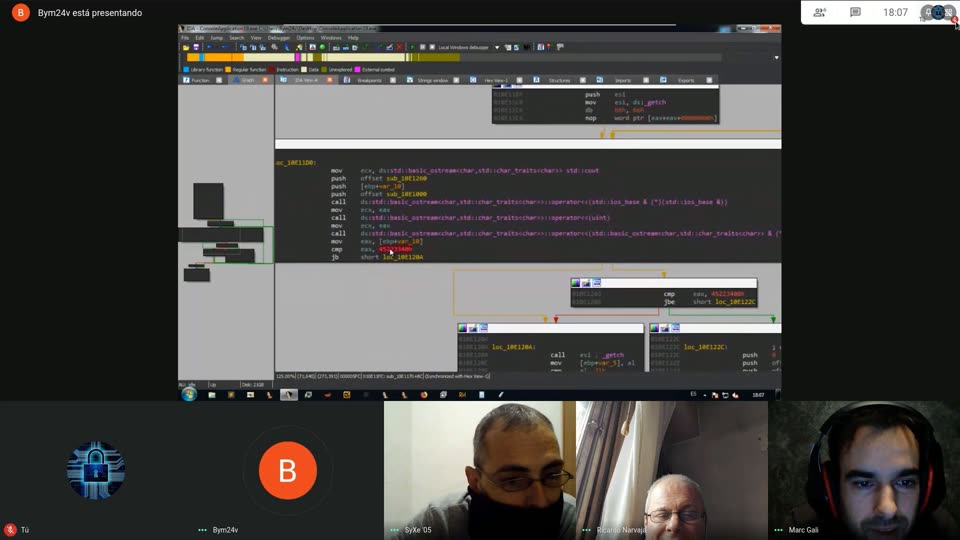
Sí, es una cadena. Es lo que se va viendo. Claro, el hilo, si abrimos la aplicación... Bueno, ahí está. No tira nada porque el segundo hilo está corriendo, pero cuando le das al enter, ¿no ves? Te muestra por dónde va el contador. Cada vez que le doy... Si no le doy, no muestra nada. Pero si le doy, donde pilla el contador, me lo muestra. Vale, vale, vale. Entonces, claro... O sea, la cuestión es apretar la tecla justo cuando está en el rango ese. Claro, claro. Claro, claro. Claro, claro. Esa es la movida, ¿no? Claro, esa es la movida, así un poco... A ver, vamos. No, bueno, es entre si es menor o si es mayor. Entre si es menor o es mayor. Si no, claro, al final se convierte... Se convierte en negativo. Se convierte en FFFF. Convierte en FFFF. Convierte en FFFF. Convierte en FFFF. Convierte en FFFF. Convierte en FFFF. Sí, aquí ya tenemos el mensajico donde... Por fin. Donde queremos llegar. Exacto. ¿Qué ejercicio dañado? No, no, está muy bueno, hombre. Para ponerse las pelos de po... De infiaca. Sí, sí. Corregulation. Bueno, supuestamente cuando lo consigamos... Sale de lo normal. Por lo menos sale de lo normal. Claro, si es que... O sea, hacer parches y hacer cosas de tal siempre es lo mismo. Es que al final siempre hay que tirar... Si uno quiere siempre experimentar y aprender... Tiene que hacer este tipo de cosas. Y bueno, y esto... Es que se aprende así, haciéndolo. Claro, claro. Trae el error, claro. Siempre darle caña y estar ahí. Si no, de la que lo deje ya salen cosas nuevas. Leyendo se aprende. Pero como se aprende de verdad, está haciéndolo. Claro. Porque luego siempre hay la típica cosa que al final... Que no salga. Y bueno, y es eso, ¿no? Está el JB... Y el JB... Y el JB... Si es menor o si es mayor que, ¿no? Si es menor que o si es mayor que... Si es menor o si es menor o igual. Claro, pues entonces aquí tenemos 45-22-33-40 y 45-22-34-00. O sea, ese será el rango donde tenemos que supuestamente pulsar la tecla. Mira, si es inferior a 45-22-33-40, nos manda a los leones. Y si es inferior o igual a 45-22-34-00, entramos en el message box. O sea, nosotros queremos estar entre 45-22-33-40 y 45-22-34-00. Eso es... O sea, superior o igual al primero, al 33-40. Claro, superior o igual, o más bajo, fuera del rango lo que hace es que sigue dando vueltas, no dice nada. Claro. Sigue, sigue, se pasa, no pasa nada.
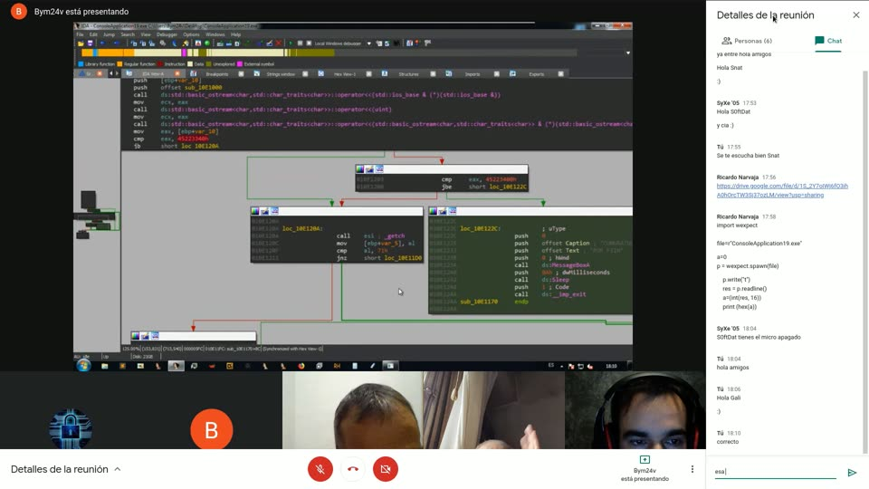
Exacto. O sea, no te tira... Si estás inferior al 33-40, malo. No sé si malo, sigue, sigue, sigue lupeando, sigue, sigue lupeando sin salir. Malo, no interesa. Te interesa entrar en el otro, comparar al 400 y estar inferior igual ahí. Entonces entras. Sí, sí, sí, sí. Claro. Que habría que buscar el bar 10, ¿no? O sea, que vas a estar dando vueltas en ciclos. Claro, eso lo hace la función... Ahí están opinando, ahí están opinando, no sé qué dijo... Sí, no, que habría que buscar el bar 10 a ver qué es lo que hace, qué es donde compara, ¿no? Aquí, ¿no? Sí. Exactamente. Claro, bar 10 supuestamente es cada vez que le doy una tecla, que es lo que me muestra por pantalla. Exacto, exacto. No, porque estas funciones de Wall Street son por el STD. Exacto. Y aquí seguramente recogerá en este tipo de función, base y yo stream. Como que se ha quitado el zoom, pero... Aquí el bar 10 se sentía de salida, aquí. Bueno, lo pusea otra vez aquí. Pero bueno, de alguna forma tiene que ser aquí donde lo compara. O sea, es donde decía Gali. Pero sí, claro, es lo que hemos visto aquí cuando lo corremos. ¿No veis? Ahora si le doy... Sigue, no veis, mira, fíjate, se ha subido el contador. De antes, hace un rato ahora. Claro, claro. Y cada vez que le doy a cualquier tecla menos la Q creo que era. Exactamente, la Q me tira afuera. Si le doy a cualquier tecla menos la Q... La A, la A mayúscula. La A mayúscula siempre me tira el mismo. La A mayúscula siempre me tira el mismo. Entonces, mira, ese dato mola. Si le quitamos la A y le damos a cualquier... Bueno, ya se queda ahí. Siempre el mismo, ¿no? Sí, se queda pillado el mismo. Se queda pillado. Mira, pues, un dato interesante. Ahora, por más que le dé siempre me da... Hay que ver si después se recupera. Claro, habrá, exactamente. Habrá que mirar, a ver. A lo mejor hay otra tecla que... Este no está en la puntada 8, ¿no? Tiene muchas teclas que te hacen cosas distintas. Entonces, hay que ver bien. Sí, está... Está el link que ha pasado Ricardo. Ahí está todo, creo. Está el ejercicio. Este es el KB... ¿Cómo se llama? Este KB1 Rar. El que... No, el que... Es juntada entre todos, ¿no? El de Loíla. El de Loíla. Sí, se llama Console Application, pero el nombre no lo ve hasta... Ahí en el link está como juntada entre todos. Hay dos versiones. Correct. Hay dos versiones. Uno juntada entre todos el original y otro juntada entre todos para VM porque el original a veces iba muy rápido y entonces la gente no le podía... en algunas VMs quedaba muy lenta, no le daba el rango. Entonces, hice una versión que va un poquito más lento
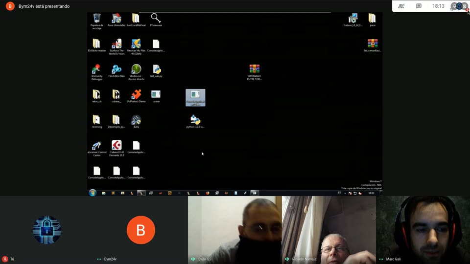
por si acaso no le daba realmente porque a veces llegaba, llegaba despacio y se le saltaba, digamos, de largo y después no podía entrar. Nunca era lento, por lo lento. Había como un retraso, ¿no? Había un retraso ahí que... Entonces, esa segunda versión tiene como una especie de slip más largo que te da un poquito más de posibilidad. Están en el link ese que yo pasé... No sé si lo pasé o no lo pasé. Sí, lo tengo. Lo estoy buscando. Lo tengo aquí ya. Bien. Están dentro de esa carpeta. Uno dice juntada entre todos original y el otro juntada entre todos versión... Máquinas lentas. Vale. Ese es el que tengo ya aquí bajado. Máquinas lentas. Por eso. Ese es un poquito más suave porque el otro va muy rápido y a veces te pasa como loco. Y una vez que se pasa te hay que ir para atrás y es un kilómetro. Voy a instalar aquí también el módulo ese. El WSPEC. Ese siempre viene bien. Pasa que aquí no sé qué paritón tengo. Bueno, el Python ya se ha instalado. Shesu wasaxu fully. Perfecto. Very good. Very well. Tengo que cambiar el disco a mi máquina. Va súper lenta por la hostia del disco. ¿Qué capacidad tiene? Tengo un disco de un terabyte y el otro de 250 y algo. Y parece que dice Python 2. Yo que no veo nada pero parece que Python 2 no va. Sí, sí, sí. Es que pero en esta máquina como la utilizo casi siempre para desarrollo y cosas creo que tengo el 3. No lo sé. Pero es que como va súper lento se queda un poco pillado. ¿Esto qué? Bueno, lo de los discos, sí. Te digo, hostia. ¿Por qué se ha abierto esto? Sí, para ver lo de los discos. Es que no es cuando luego le pongo a hacer algo y sobre todo Visual Studio es que ralentiza mucho. ¿Qué versión de Ida estás utilizando? ¿Qué versión de qué? De Ida. De Ida del 7. 7 pelado. Sí, este del 7. Es que el 7.2 en algunas cosas me daba problemas. Este del 7. Ok. Lo que pasa es que el 7.2 la versión que se liqueó no es completa, completa. Le faltan algunas cosas. En cambio, el 7 era completa. Es una pena porque el 7.2 reconoce, el 7.2, 7.3 reconoce más cosas pero a la vez también le faltan cosas. Entonces, pero se podrán poner las firmas, ¿no? Los flicks de Ida 7 al 7.2 para que conozca más. Eso no lo he probado. Eso no lo sé. La verdad que no sé. Yo como me lo pagan, yo lo bajo. Ya, ya, ya. Sí, sí, sí. Es que por aquí está los... Aquí, ¿no? Flir, Signature File y aquí tiene un montón de los tipos de lenguajes
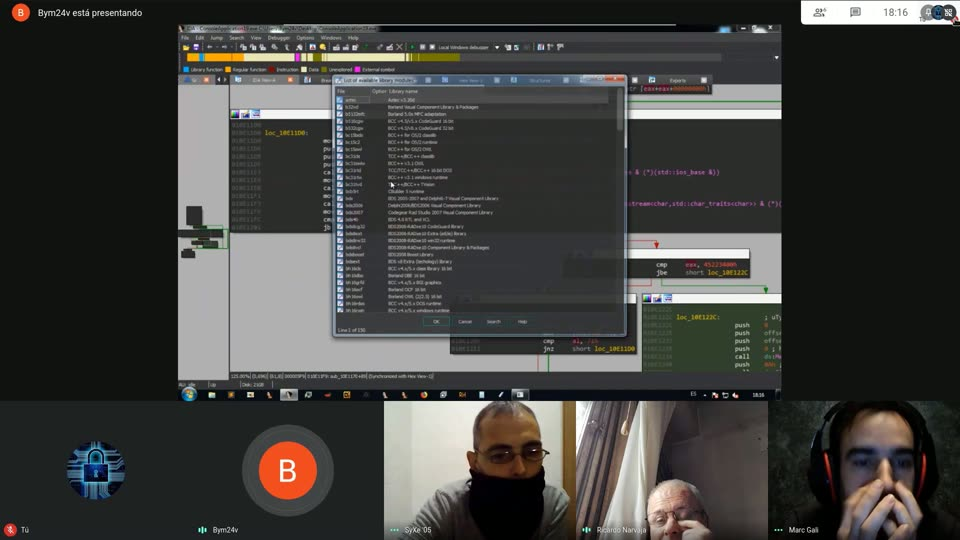
de programación y todo eso de compiladores. Cada vez que van pasando más versiones van pues teniendo más. Ah, sí, pero no vea. Bueno, aquí no pone nada de import esports pero si está en la carpeta a lo mejor lo mismo lo pilla. Por eso es interesante probarlo. No sé cómo funciona el flyer SDK ese que por ahí y ahí explica cómo se hace para poner flyer. Viste que hay un SDK, flyer SDK que se baja aparte. Sí, sí, sí. Está ahí. Por ahí con eso se puede enseñar algo. Pero la verdad que es una pena. Yo porque a mí me viene todo ya listo, todo armadito. Ni me caliento con esas cosas. Así como viene lo uso. Ya. Hostias, ¿qué he hecho? No sé qué he hecho pero se ha vuelto todo loco. ¿Vale? ¿Qué? ¿Se te rompió el gráfico? ¿Para arreglar gráfico? Ese tenés que hacer va, va, va, va, va. No, ahí clic derecho no, donde está en un lugar vacío ahí. No, no, en un lugar vacío. Clic derecho y ahí tiene layout graph. Con eso se te arregla el gráfico. El gráfico sí se te destantanó. No, no es el gráfico. Es que no sé qué he tocado pero ahora me ha cambiado la llamada, me ha cambiado las cosas. Se ve que hay que cambiar la firma o algo de eso. Sí, sí. Sí, para algunas cosas como te despide. Que lo vuelva a abrir y borrar la database. Sí, sí. Es que ni tenía ni tenía database. Ya como lo había recién abierto no tenía ni la había guardado. Así que perfecto. Bueno, aquí en el principio estaba con regulation. Esta. Vamos a poner el colorcito que le pusimos. Y esto. Vamos a hacer un demand lane para que se vea esto un poco mejor. Que supuestamente, bueno, el de las firmas también, ¿no es? El show demand lane es más, más. No, para ser mejor. Sí, sí. No me acuerdo cómo se llamaba. Se llamaba el el TIF o el GIF. No me acuerdo cómo se llamaba este nombrajo. Suena lacra. Sí, pero no me acuerdo. Eso tiene un nombre que es como los compiladores, pero no me acuerdo cómo se llamaba ahora exactamente. Pero, de manga el name, name. Por lo menos es largo, pero por lo menos es un poco más entendible, ¿no? Vale. Vale, pues entonces, bueno, tenemos que ir armando un script de momento para que levante esto, vaya tirando pulsaciones y paremos en el rango uno más que 45, 22. Lo bueno que tiene ese PESPEC que no tiene el otro, el POPEN ese. Que el POPEN, cuando vos querés trabajar con lo, recibir lo que el tipo esté imprimiendo y con eso interactuar, se te cuelga por todos lados. En cambio, este te permite recibir la respuesta y hacer cuenta con eso y según eso, mandar distintas teclas. O sea, podés decidir según la respuesta por dónde va el tipo. El otro no te deja decidir. El otro es enviar y chau. No hay una espera, ¿no? Una respuesta de espera. Podés imprimir, pero no podés agarrar la variable, comparar, volver a enviar, porque ahí se hace un desastre. Vale, yo creo que lo suyo sería primero ir armando eso y luego ya para no analizar un poco las funciones estas.
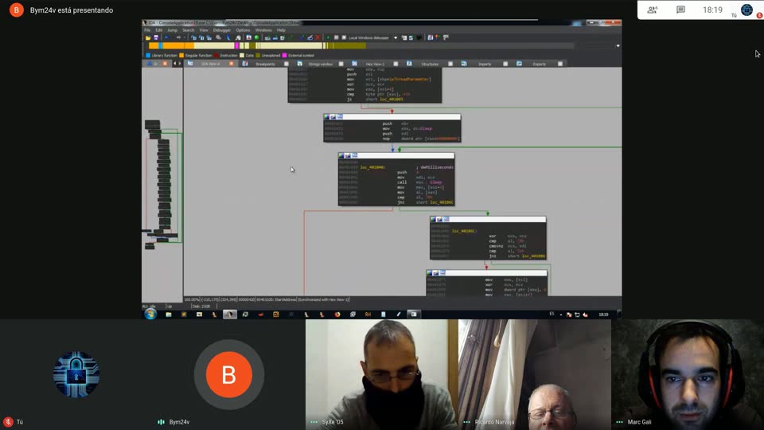
Que bueno, hemos visto que si os mandamos el A, pasaba algo, y si no... Sí, es ahí. Sí, aquí tenemos diferentes tipos, ¿no? Mira, de hecho, mira... Venga para acá, Rodo, despacito, no se va a caer. De hecho, fíjate, mira... Despacito en la cama no se va a caer. El contador, ¿no es? Incrementa EAS, EAS lo pasa aquí, tal, tal, tal. La cuestión es que... A veces se puede levantarse rápido. Si EAS tiene un un byte de 41, es donde pega el salto ese que hemos visto. Despacito, venga. Y aquí lo va comparando 45, 44, 42, 43, 72... O sea, lo va comparando con diferentes números. Exactamente. Y según la tecla va cambiando. Números, que esos números serán letras del teclado. Porque hemos visto que el 41 es la mayúscula, pues el 79 no lo sé ahora, pero si vemos la tabla así... Después se acuesta acá directamente en el tal de ver y te lo digo. No, míralo, lo miro aquí. Una tabla así. Sí, aquí. Una tabla así. Yo tengo por aquí algo. Eso es lo que le conviene hacer, es hacer un notepad donde diga, si toco tal cosa, suma tanto. El 79 exactamente. El 79 es la I. Sí, SoftDat dice que lo escuchas la ley y te lo pasas decimal. Sí, sí, sí, lo sé. Y aquí mirándolo encima también te dice la tecla que es. Sí, también, también. O es la I ahí. Y aquí 77 sería la W. Sí, eso lo sabía. Pero, o sea, siempre tenés claro una tablilla para 75, la U. O sea, estamos viendo que hay diferentes teclas, pues puede hacer unas cosas o no. Exacto, exacto. El CEMO NZ este que creo que he jugado con la FLA o algo de eso. Algo de eso me lo recuerda, creo que era así algo. Ahora de todas maneras lo buscamos. Pero yo creo que lo primero sería armando un script y por lo menos que vaya levantando y mandar fruta una vez que ya estemos mandando fruta. ¿Qué pasó, SoftDat? ¿No te quedaste sin micrófono? ¿No te quedaste? Yo me tomo algo de abajo estudiar. ¿Sí? Hacer bien. ¿Sabes? ¿Voy a instalarlo? Sí. Vale. Voy a instalarlo aquí un momento. Yo me estoy en directo, mira. Estamos en directo estudiando. Ah, Jordano le da el micro. Ah, que se mide aquí que esto que hostia. Bueno, bueno, no importa, igual estás, lo importante es que estés. Vale. Vale. Sí. la Junta 8, ¿no? Véngase para acá, Roder.
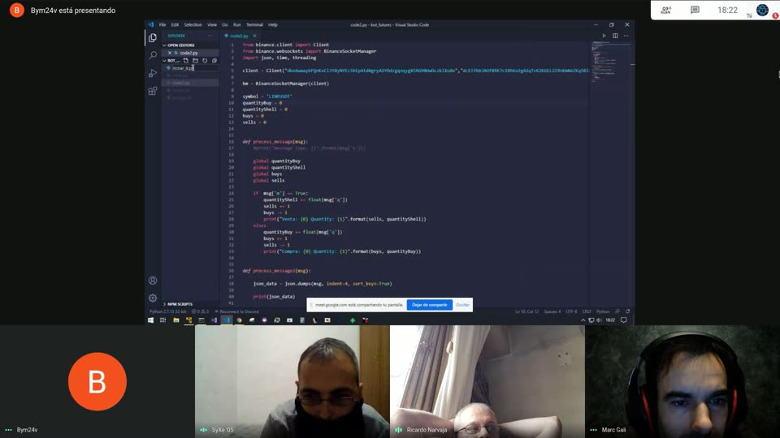
Si quiere, acuéstese en la cama acá, ya está. Así es, ya termina ya. Bueno, después lo traes. A ver, el tema es que aquí. Ah, bueno, lo que decía antes del disco también, que antes tenía dos discos y más o menos iba bastante bien, pero ahora tengo el principal como el de un terabyte. Entonces, esto es una locura, ¿no? Me quedan 700 gigas disponibles, pero este disco no es la propia para esto. Tengo que poner un SSD, si no, todo más lento que el caballo del malo. Claro, exactamente lo que te iba a decir. Mira, el SEMO, aquí tiene la página web del SEMO. Para usar la frase narvajiana es más lento que hijo de primo. Más lento que hijo de primo. Hijo entre primo, ¿no? Sí, cuando tiene el hijo, ¿no? Los propios, sí, los propios primos me salen lento. Sí, sí. Qué golfo que eres, ¿vale? Qué bueno. Qué gracias. Por lo menos aportamos un poco de humor, ya que no podemos. Claro, es importante, ¿sabéis? A ver, a ver, a ver un momento si tengo el Python 3 instalado o no lo sé, ni lo sé, tío. Yo la acabo de instalar. Casi todos los desarrollos que hago y todas esas cosas siempre me acostumbraba al 7 y muchas cosas, módulos que usaba o cosas así, siempre está con el 7 y toda esa mierda. Entonces, el 3 lo tengo, pero, ¿sabéis, lo uso cuando me hace falta? No, no lo usas. Lo tienes ahí, pero vamos. Claro. Como si no está. Ya. No, la cuestión es el 3, no, mira, tengo el 3, 6 y el 3, 7. La cuestión es que sí que están, pero como esto se instala en el Windows 10, en app, su puta madre, creo que era. Claro. Program data, no sé qué. No me acuerdo ni dónde están. 6 y 3, 7, aquí. A ver. Mira lo, ahí está. Ahí lo tienes. Bueno, no me sé, es que ya se instala en app data, local program, y se instala ahí, en esa maldita ruta. Vale, pues voy a ponerlo en la variable de entorno. Aquí, listo el pollo. Listo el pollo. Listo el pollo. Se ha hecho famoso en todo el mundo. El pollo, el pollo. Ya te digo. Aquí hay gato, Reynard. ¿Eh? Aquí hay gato. Acá tengo la gata. Hostia, lo que no he hecho, ha de coger la ruta de... Vale. Vale, vale. No sé quién más hay,
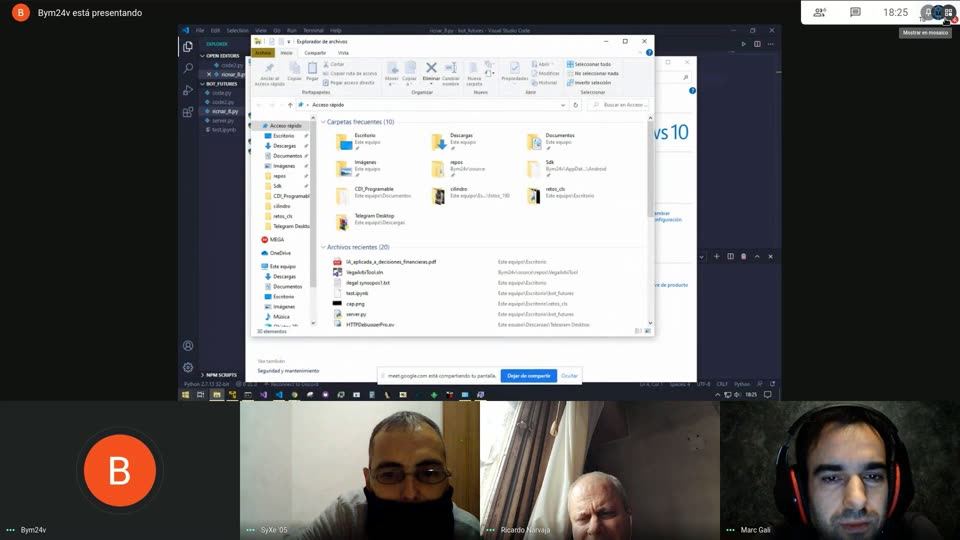
si quiere hablar, no veo todos los que hay, hay más gente. Aquí, ya te digo, mira, estamos. Sí. Estamos aquí en 24, Marc, Ricardo, Sovdad y yo. Sí, Marc, el chico de los cacos rojos. Que hable también. Sí, de los cacos rojos. A Sovdad no le va al micro. Bueno, ya sé, pero a Marc, si quiere hablar, que colaborar. No, sí, estoy esperando que ponga todo el Python y todo eso. condiciones. Bueno, listo. Estás esperando el momento para... Pa, ¿no? Para... Pa. Estás esperando el momento para meter la cucharita. Exacto. No sabe cómo... Parece que no está en el campo, está caminando, pero de repente está de... Ras, ras, ras y paca. No sabe cómo llovió acá. No sabe... Ahora recién está parando un poco. Llovió, había gente construyendo arca. Mira lo que te digo. Sí, hostia puta. Aquí yo creo también. Estaban construyendo el arca, a ver si metían los animales adentro. O sea, que aquí el de estos ya hace un frío, tío, que no veas, ¿sabes? No, acá no, acá se caló. Lleve, pero igual se caló. ¿Sabes qué pasa? Que tengo que quitar primero el otro. Es que esto es la mierda. Estoy... Me lío con un puto Linux y el Linux pone Python 3 y ya te tira. Y aquí tienes que estás quitando mierdas del otro lado. Sí, tenés que sacar el otro, el de la mierda. Claro, tengo que quitar este. Si no... Claro, y como le cambian el nombre, ¿sabes? Sería la de Dios. A ver si ahora queréis. No, pero eso creo que es por la mierda esta. Voy a probarla aquí. ¿Qué es el Picham? ¿Qué era el Picham? No, no veo bien. Sí, tres, siete, no, este ha cambiado. No, este es el Visual Studio Go. Pero ya te digo, como esto va a la consola integrada esta, o lo mismo, la caché, guarda mierda de estas, puede ser que esté un poco, aún está dando lo mismo. Pero bueno, no me importa. Es que aquí sabes qué pasa, que es más cómodo para programar y todo el rollo, claro. lo escribís ahí, lo que lo ejecutas en la consola y listo. A ver, a ver, a ver, a ver, ahora, a ver si escucha. Hola. Hola, soy Softdark. Hola. Hola, buenas. La voz, la voz, pero del año. Reparaste el micrófono. Reparaste el micrófono. ¿Qué va? Estoy desde el móvil, desde el laptop no puedo. Está bien. Habla en el móvil y mira, yo muchas veces hago eso. Hablo en uno y miro en el otro. Eso es. Otra cosa que no he hecho, ¿sabes lo que es? Es quitar esto de aquí. Porque tengo una carpeta con los bolos que tengo de criptomonedas y lo voy a quitar, porque si no, me voy a liar aquí. Está aquí.
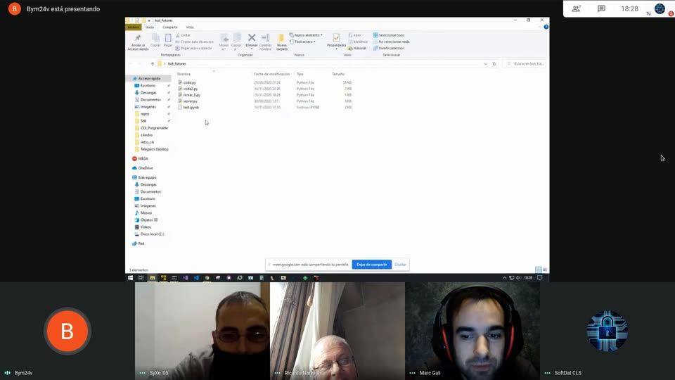
Este. Lo saco de aquí, lo voy a poner en el escritorio, uno. Una carpeta nueva. Tengo que decir qué linda sensación es ver trabajar a los demás. Una vez. Sí, ¿no? Trabajan los otros. Y yo, no. A la ocho. El último viene y dicen, no me hacéis trabajar, no. Es como si le voy a caer un edificio encima, no. Bueno, yo para qué quiero que hagan. Estoy... Claro, si es que estará aburrido ya de hacerlos, ¿no? Un montón de tiempo. Es normal. Claro, yo para qué quiero que no hagan. Yo me quedé atascado hace tiempo con el reto este. Este es un poco espesadillo. Sí, sí, sí. Este es un poco... No, maldito. Bueno, voy a abrirla ahora. ¿Qué haces, bro? Salí de acá. Bueno, tirale algo, a ver qué pasa. Sí, sí, está abriendo esto que es más lento, los caballos malos y ya estamos aquí. Ahora, ya puedo poner el nombre del console application este. ¿Cómo se llama? Hay algunas narvafrases que son inspiradas realmente. Esa, la que a mí me encanta es cortito como lateral de tiranosaurio. Esa me encanta. Es realmente ultra inspirada. ¿Viste que el tiranosaurio con los bracitos no puede tirarla lejos, el lateral? Un bracito aquí de chico, ¿no? ¿Viste? Cortito como lateral de tiranosaurio. ¿Cómo me gusta eso? Sí, me gusta. Bueno, se puede probar a ver aquí si no lo que pasó Ricardo. Ricardo, ¿cuál es un ejemplo? Te puse un pedacito ahí que ya tiene más o menos para tirarle una tecla. Igual vas a tener que hacer un bucle o algo porque una sola, con una sola no hacemos nada. Tienes que hacer un bucle. Sí, sí, sí. Si es para arrancar, ahora vamos a analizar la función esa del... de Lilo. A ver qué me dice. Aquí tenemos el programa, lo pongo en DEA y aquí hay un rango de 10. Hay un contador. Eso es. Escríbete. Lle por pantalla. Y será el número, el res. Supongo que sea el número. Sí, sí. Y lo escribimos. Y lo pasa a esa decimal, exactamente. Lo pasa en base 16 por el IN a base de esa decimal porque se imprima. Ok, a ver, a ver, tírales, a ver.
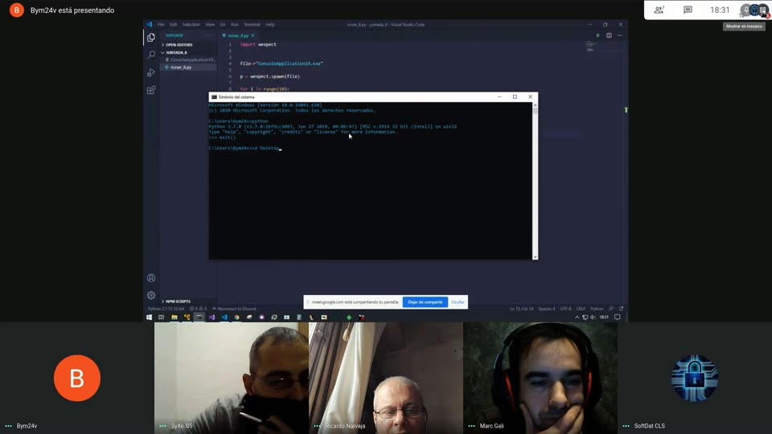
Correcto, no instala todavía el módulo. Pone pip install webpec, ahí nomás pone pip install webpec. Está lentita la máquina, eso es lo que pasa. Sí, sí, y también cuando comparte es que mi imagen tampoco es que sea, es un i3 con 8 GB de RAM, tampoco es que sea. Y encima el disco este que lleva muchísima mierda, no lo he desfragmentado desde hace tiempo, tampoco. Eso es, tiene mucho espacio libre, ese es el problema, que esté muy lleno, ese es un problema, sí. Claro, se ralentiza bastante. Sí. A ver si me pillo esta semana un SSD. Aprovecho, ya está, a ver. El Black Friday y este, ¿no? Aprovecho el Black Friday y este que están baratos. Claro. Pues es que no, mira, esta noche después de la juntada cojo, me los pillo. Claro, ya de vuelta, a ver si va. Ya tomo el viento. De una, ¿sabes? Del tirón. Ahí va, ahí va, ahí va. Perfecto, mira, ahí va, ahí va, ahí estamos. Los 10 que le hemos mandado, ¿verdad? Sí. Es que la T va grande, la T va en grande, ojo con eso, que hay que mandarle hasta cierto punto, porque después si no se pasa, hay que tener cuidado. Sí, sí, sí. Porque la T va aumentando ya mucho, es una de las que más aumenta. Claro, el valor de esa decimal, sí, el valor de esa decimal es más grande. Exacto. Ah, mira, me está escribiendo uno. ¿Ya he pensado juntas? Sí. Dale, dale el enlace. Dale, dale el link entre. No le doy. A ver, pues ahora, como se imprime tal cual, ¿no? Podríamos coger este valor y compararlo en una variable, ¿no? Exactamente. A ver, ¿hasta dónde llega? ¿Se lleva a tal lugar? Me parece que ahí está. Exactamente, es un intentado. Sí, él nunca me sale. Sí, sí. Sí, ahora decimos y el valor que hemos dicho, ¿no? Aquí en el análisis. Yo podría decir si es mayor, ¿no? Si es mayor. Ojo que si va muy grande, a veces es un rango muy chico y por ahí se te pasa por encima. Sí, podemos probar. Ahora hay que ir probando a ver lo que pasa con el 79, el A, sobre todo, también, mira, el 78. A mí lo que me ha pasado es que... El 78 resta. Mira, el 78, que es el negativo de aquí, nos lleva aquí y decrementa, creo que era. A ver, mira, decrementa de A. Y A es el contador del loop, del siglo IV, este que hay aquí.
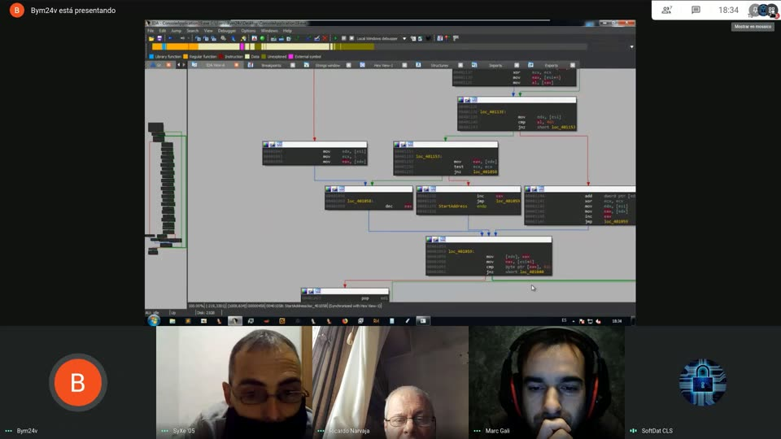
Si es 78 podemos decrementar y si es diferente puede ser que, ¿sabes? Subir las demás opciones que hay aquí. 77, 76, 76, bueno, la T no me acuerdo cuál es ahora, ¿no? Pero, ¿cuál es la T en minúscula o la mayúscula? La T en minúscula o la mayúscula o la mayúscula o la mayúscula o la mayúscula o la mayúscula? Pues ya sabemos que el 74 aquí es la T. Este de aquí. Bueno, esto se podría pintar también de un color naranja, ¿no? En plan... Es decir... Ir pintando lo que son las letras y al final ir descartando también, para que la análisis sea más... Sí, yo creo que cada una de esas letras tienen que agarrarse en un notepad que diga, si aprieto tal cosa aumenta tanto, se aumenta tanto y así más o menos. Sí, exactamente. Aquí hay un... Añade mil... Aquí los tres primeros creo que es lo que cambia, aquí... Cien mil... Exactamente. Ahí, en cada número... Claro, a ver. Esto lo que quiere decir es que, según la letra que apretemos, vamos a acercarnos más rápido al número o... Claro, vamos a acercarnos más rápido al número. Esto que pone... Mira, fíjate en el cuarto basic block, desde arriba, fíjate qué hace. Add the word pointer, EAX, FFFF0000... Ahí nos está aumentando el valor. Eso hay que tenerlo en cuenta. Ese clic derecho... Y ese que estás, y dos más arriba, igual, fíjate. Con una F más. Hay negativo, ese. Si haces clic derecho, se cambia negativo. Por ejemplo, cambia... Haces clic derecho y te muestra el valor negativo. Si pasas clic derecho, te muestra el valor negativo. Ahí está, menos, no sé. Bueno, en este caso es positivo, ¿no? No, pero empieza con F. No es negativo, porque empieza por F. Sí, sí, sí, sí, pero que bueno, que aquí EIDA lo muestra en... Pero tenés que hacer clic encima de la del coso, porque yo cuando, en el mío, hago clic y me muestra en menos 10.000, menos... Sí. Ahí hay clic derecho. Qué raro. Sí, será otra versión de EIDA, quizás. Otra versión. La mía muestra negativo. Mira, aquí, por ejemplo, 10.000, sí que pone que son 65.536. El mío, cuando yo le pongo al FFF, vería clic derecho, ese es porque es una versión más nueva. Claro. Después está negativo. Ya te muestra el negativo directamente, claro. Claro. ¿Esto qué quiere decir, BIM? Que tenemos que estar punchando teclas para caer en el rango que necesitamos. ¿Sabes? Exactamente. Esa es la jugada, tío. Entonces, tenemos que saber cada tecla, asignarle el valor. Hacer una tabla y saber cuántas repeticiones de cada una para caer en ese intervalo. Esta es la medida. Ojo, ojo, otra cosa. Ojo, pará, ojo, una cosa. Que si vos, por ejemplo, apretás la T y dice, aumenta, ahí dice add 100.000. Pero hasta que vos volvés a mandar otra tecla distinta, eso sigue sumando la misma tecla igual. Eso sigue corriendo. O sea, que no necesariamente que vos mandes una T solo va a aumentar, ponele 100.000. Por ahí en el lapso que vos vuelves la siguiente tecla, ya hizo 5 ciclos esto y aumentó 500.000.
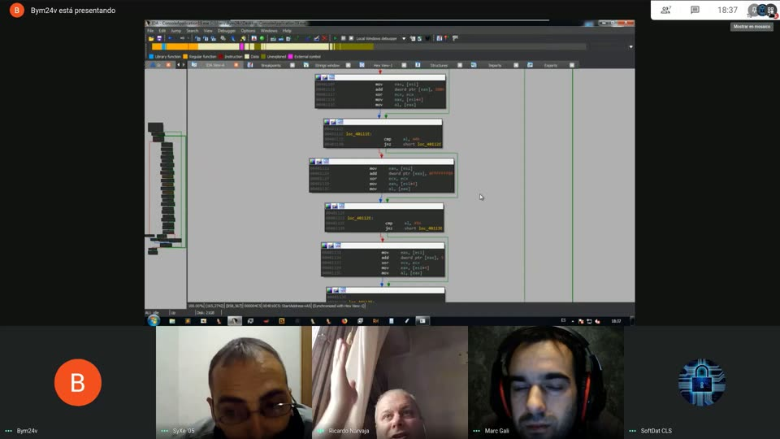
Hay que tener cuidado con eso, que depende de la velocidad de la máquina. Claro, porque yo, claro, al principio hay un SLEP, que creo que es de 4, o sea, de 4 milisegundos. Claro. Esos 4 milisegundos puedes seguir sumando o podéis seguir, dependiendo de la máquina, será más tiempo o menos. Hasta que no mandas una tecla diferente, sigue con la que tenía antes. Y sigue deslumpeando y sumando. Pero ahora mi pregunta es, ¿y si pulsamos el Enter? El Enter, ¿cuál es? El Enter tiene que tener un Enter. Si impulses el 1, claro. Lo hacías secuencialmente, ¿no? Iba bajando. Sí, sí, por eso que si fuera 1, pero pasa, claro, 1, 1, 1, 1, 1, ya te tira la pera. No llega nunca. Claro, te tira la pera aquí. No vamos mañana. Ya ves, ya te digo. Entonces, claro, es jugar con esto, ¿no? Jugar con... Yo te digo, a mí lo que me resultó es llegar con las teclas rápidas hasta la mitad, más o menos, con las teclas rápidas. Y después ir aproximándome con las un poco más chicas y así ir aproximando. Vale, pues a ver, la tecla rápida será el que los convierte en negativo en positivo lo más rápido. Claro, exactamente. Eso es lo que tenemos que saber. A ver, y a mí... Mira, mira, si te fijas a simple vista, mira, aquí arriba están los F grandes. Cuanto baja, son más pequeños cada vez. Luego 100. Luego FFB, luego le va quitando. Si continúa para abajo, es menor. Exacto. A ver, continúa para arriba. Mira, aquí quedan 3 libres. Exacto. Quedan, son 5, guay. Sí, 5, guay. Qué ejercicio de mierda, Ricardo. No, no, si es que esto es lo que mola. Ejercicio de maripiano. Está bien, está bien. Claro, lo guapo de esto es que si sabemos sacar la combinación, podemos sacar el serial, que supuestamente, porque supongo que el nombre tenga un serial. No pulsa esta tecla, ta, ta, ta, ta, ta, y es lo que te da el serial. La mejor idea va a ser, no, no, no. No, no, es un serial. No, vos tenés que llegar a apretar. Pero bueno, se podría hacer. Se podría haber hecho. Pero vos tenés que apretar hasta que salga el mensaje. Sí, sí, sí. En este caso es una sumatoria y tal. Pero que sí, sí, claro, se podría hacer que, dependiendo de las teclas que pulses, sea un código. Yo haría lo que ha dicho Ricardo al principio, de ir anotando la tecla, qué es lo que hacen. Sí, sí, sí, no, si estamos analizando, ya tenemos un poco más claro lo que hacer. El LIDA tiene un notepad de cada database. Pones el notepad ahí y vas anotando. Si es tecla tal, tanto, si es tecla tal, tanto. Y más o menos te da una idea de cuáles aumentan más rápido, cuáles aumentan más despacio. Sí, yo tengo costumbre muchas veces de apuntármelo aquí con los comentarios de aquí también. Lo que pasa es que después tenés que buscarlo ahí. En cambio, si tenés un notepad, es como que lo tenés más listado, como más listado. El problema siempre es el tema de las ventanas, ¿no? Que al final te lias con 40.500 millones de ventanas. O si no, un notepad aparte, un notepad separado, lo pones en un notepad. Vale, bueno, lo que hemos visto es que estos valores los va a convertir en positivos. Y tenemos la sumatoria grande. Estos son 100.000, 1.000, tenemos 100, hemos visto por debajo. 5. La tecla 45, vale, vamos a ver.
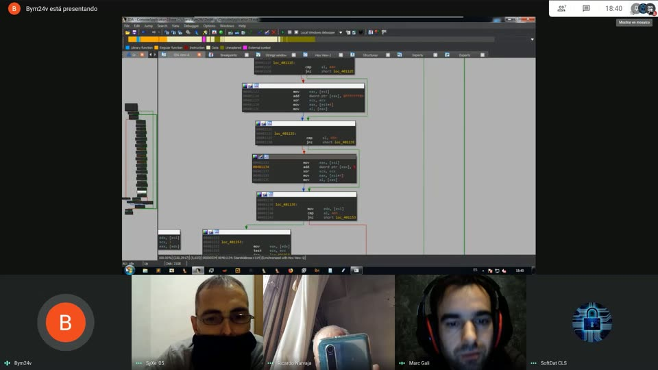
Eso es, eso es. Ahí, ahí. Y se podía fijar, ¿no? Yo siempre la hago a mano, una libreta siempre. Sí, eso yo también tengo costumbre a hacerlo en la libreta, pero bueno, es que si no... Siempre la hago así, siempre. Para mantenerlo aquí, tiene que ser un programa que se pone que es un depot. Lo deja y se puede quedar fijo aquí para que siempre esté, pero bueno, no lo tengo instalado y no pasa nada. Puedo ajustar Ida, más o menos, también. Y hacer algo así. Sí. Y ya está, bueno, vamos a subir para arriba. Ahora, estos de arriba los vamos a dejar como incógnitas porque aquí hace, ya te digo, esto creo que me suena algo de la flash. Bueno, ahora pasa el NAS por el chat, creo, pero esto me suena algo de la flash. ¿Cuál? El CEMU. Sí, eso es un mod condicional. Sí, claro, esto me suena algo de la flash. Este es un mod condicional, sí, con extensión de ceros. Sabemos que la I. De ceros. Y la Z hace algo con esa movida. Sí, la Z hace algo con esa movida. Bueno, aquí es para cero. Bueno, aquí es para cero. Ah, exactamente, sí, verdad, no había visto aquí esta con cero. Y compara L con 79 y en función del resultado hace el CEMU, pues no lo hace. Vale, perfecto. Ahora tenemos el 77. Eso es, muy bien. Así, así, así. El 77 sería la W, pero creo que es la W minúscula, ¿no? Así, minúscula. Sí. Correcto. 77 minúscula. El 0x77 sería igual a W minúscula. W minúscula. Y esta sumatoria. ¿Tiene los símbolos del fichero del binario? Eso lo tendrá Reina. No lo ha pasado. Qué guelso que es, ¿vale? Sumatoria de 10.000. No lloren. No lloren. No lloren. Sí. A ver, bien, mil. Lo vamos a hacer sin símbolos en las juntas de la semana que viene. Todos sin símbolos. De puta madre, con nada. Lo vamos a pintar así, más o menos, para que... El 76. El 76. La W. Pero aquí. 76. Soy un poco lento para escribir, así que no sé si... No te preocupes. Tranquilo, bastante estás haciendo ya. Que estás ahí liado. No te preocupes para nada. V.
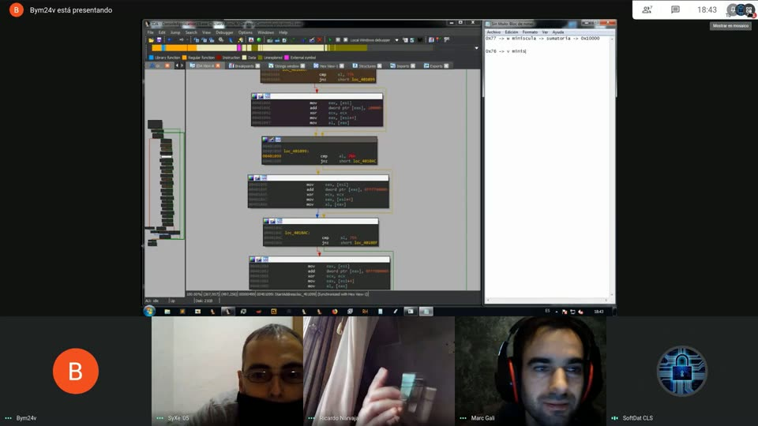
A ver. Sumatoria. Bueno, aquí esto no es sumatoria. Eso lo añade, ¿no? Y le pasa negativo. Sí, pero añade estos dos... Exactamente. Exactamente. Lo que es verdad, tiene razón, es un valor negativo. Está en complemento a dos. Y es un valor negativo eso. Sí. Pero ahora la pregunta es, si coge un buy, ¿qué convierte a positivo? Dice, ¿convierte a positivo el siguiente buy? No. Lo que hace es... Hace un... Eso es como decir, sumo al número 10, por ejemplo, le sumo más menos 20. Está restando 20, en realidad. Pues es lo que está haciendo aquí. Si está cogiendo los cuatro F. Al contador de AX le está sumando esa cantidad, que en realidad está restando. Es decir, le está restando los cuatro F. Correcto. En función de la AL. Si AL viene con 76. El 76 en ASCII viene a decir que es la V. Si no es V, o sea, si es la V, perdona, entras ahí. Si llegas, es más simple, claro. Tienes que ponerlo en the word eso. Yo tengo el ir abierto también, ya está instalado, ya lo estoy haciendo al lado, a ver como tú. Ya vos te muestras negativos los valores ahí cuando haces clic derecho. A mí, a ver. a mí me muestra igual fsf 0 0 0 de las últimas versiones entonces tengo la 75 ahí cuando se clic derecho te muestra menos uno te muestra de todas las cosas tiene que ser parte de la llamada pero bueno que por oscar hola hola qué tal realmente lo que está haciendo estas son restarles correcto hay sumas y restas hay sumas y red correcto a 76 76 no sé si no coge 76 ahora que digo yo sí sí sí sí lo vuelve a cargar aquí no sé ahora mismo es el contador el apuntado del contador exacto entonces como lo pone entre corchetes modifica el valor de la de la memoria de casa restamos nos pasamos del rango para volver para atrás por si te pasa claro y sumando es que tengo el windows 10 pelado le estoy poniendo todas las herramientas hoy por eso voy muy lento si no estaría ahí tranquilo está no pasa nada estoy buscando las herramientas la calculadora de cibul que es la que yo uso siempre que me encanta terminaste la pieza tengo herramientas que uso hace 15 años las mismas
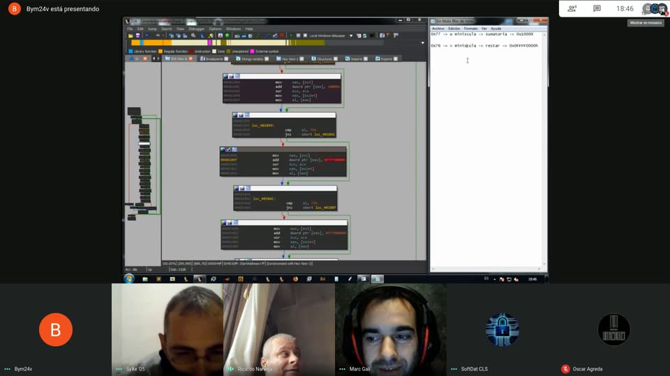
Sí, tío. Eres de la casa. Claro. Vale, el 75 sería la U. La U, ¿eh? Sí, yo todo recto. Correcto, la U, sí. Exacto, pues ponemos un comentario. Mira, BIM. Dime, dime. FFFF0000, el que estábamos antes, arriba, es menos 65.536. Flipa. Pero tengo que pasarlo a EXA, ¿será menos 10.000? O menos 100.000, le digo así. Bueno, claro, sí, pasarlo a EXA. Te hablo en decimal, ¿eh, ahora? Vale, pues aquí tenemos la U. El 74. Sería la T. Esta es la famosa T. Exacto, exacto. Creo que es el que suma más positivo. El que suma más positivo. Sí, ese es un cojón. A ver, espérate, esto aquí me estoy equivocando porque no he cambiado esto. Esto es la U y esto es la T. Bueno, voy para allá. Vale, Ricardo. Hasta luego, Ricardo. Ahora, Rick. Y esto son 100.000. 0,000, 100, 1, 2, 3. Exacto, eso es eso. Muy bien. Así, ahí vamos, ahí vamos. A ver, a lo mejor, yo lo que pasa es que cuando está uno solo, esto a lo mejor lo hace rápido, ¿no? Y no tiene que estar... Sí, puede ser. Pero bueno, como iremos con el script, lo hará el script, irá más rápido con nosotros. Claro, luego, palabra del... Claro, el script lo que irá será comparando el valor que tenemos en el contador y en función del valor que tengamos irá aumentando o restando. Es lo que tenemos que conseguir, tenemos que hacer el cálculo para saber qué teclas tenemos que pulsar para que el chico, bueno. Eso es. La verdad es que está entretenido. Está guapísimo, tío. Vale, la S sería el 73, sería la S y tal. Y este resta. Y resta, ¿no? La S resta, ¿no?
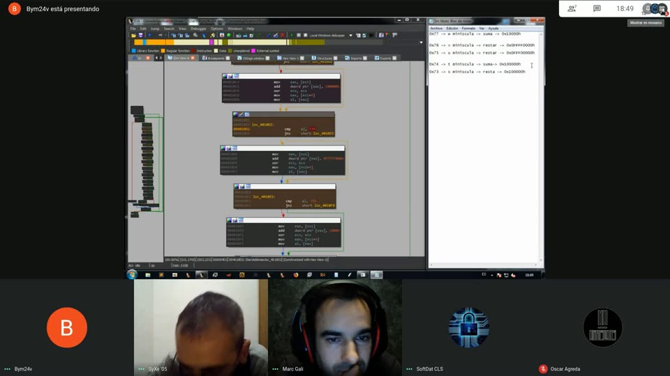
Sí. Sí, porque tenemos aquí otra vez el FFF, aquí le quita bastante más. Ahí está restando otra vez. Sí. Ahí vuelve a restar. Fíjate en la cola, mira, mira, a ver, ta, ta, ta, ta, ta, ta, ta, a ver, es sí. Una nueva cosa. Vale, el 72 será la R. Y la R suma. O copio este. A, R. El 72 suma y suma mil. Y sumo mil, ¿no? A, R suma mil. Vale, el 43. Sería la C mayúscula. Este sería la C mayúscula. Y volví a la pieza. Ya estoy en la pieza. Y, buenas. Hola. Buenas, Tiki. Hola. ¿Qué tal? Este sí que es la C mayúscula. Sería mayúscula el 43. Y este resta también. Y resta, pues, una F más. Quedando cero. Vale. El 42 será la B, ¿no? La B mayúscula. 42. Te lo digo ahora mismo. B, bueno. 42 es la B mayúscula, sí. A ver, la Riba restaba y la 42 en la B mayúscula es sumatoria. Suma 100. Suma 100, ¿no? B mayúscula suma 100. Ah, ¿no se puede mandar imágenes acá al cosa, no? Al chat, no. No se puede. Pues, no, creo que es solo texto. A mí no me sale la opción de... Se puede mandar archivo. Eso sí que se puede mandar. No, archivo no. No quería mandar. Los archivos adjunto de Google Calendar se muestran aquí. Ah, bueno. Será algo de Google Calendar ese. Ahí está el B, por ejemplo, en el Ida nuevo que te marca ahí. Lo puse en Entre Amigos. A ver si está en Exploit también. A ver. Te marca el menos 10.000, ¿ves? Cuando se escribió derecho, los positivos negativos te los marca también ahí.
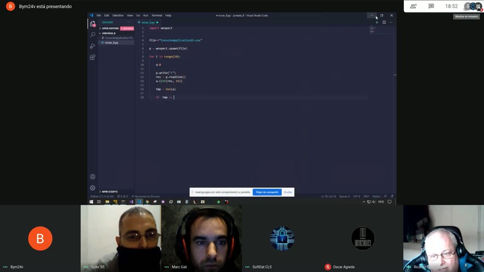
Está mejor esa Ida. Claro, porque es más nuevo. Entonces, ahí te marca. Claro. Directamente los pasas ahí, ¿viste? Qué bueno. Qué bueno. Y este comentario te lo pone también automáticamente él, ¿no? El de la U, su char al lado. Seguro, seguro. Sí, sí, a mí también. Seguro, ¿eh? Mira, mira, mira cómo te pone el de mí. A ti sí te lo pone, ¿ves? ¿Has visto que pone Not F, F, F, F, F? Sí, aquí. Claro. Pero ya se lo muestra como muestra aquí Ricardo. Claro. Si yo aprieto ahí, me lo cambia en la visualización de ahí. Y me lo pone a menos 10.000 directamente. Claro. Para que lo veas directamente, claro. No te haya gastado en el botón. Exactamente. Exactamente. Si, ¿ves? Te queda así. Quedaría de esta forma, ¿ves? O sea, si yo hago clic, a ver dónde está ahora. Tengo que pasarlo a los grupos, porque... Ahí está. ¡Chao! ¡Suerte! ¡Chao, suerte! ¿Qué pasa? No, que se fue la chica. Ahí está. ¿Ves cómo queda? A menos 10.000. Ya te queda mejor así. Lo ves ahí directamente. Sí, está de lujo. Ahora está de lujo, ¿eh? Ahora está bien. Es bueno. Ya está subiendo en el Fórmula 1, ¿no? O sea, estoy en casa, sí. Ya te veo, ya. En casa estaba, pero digamos, en la otra pieza. Estaba en la otra pieza. Bueno, ya vamos armando poco a poco. Claro. Ahora luego, cuando podamos, ordenamos los valores. El 0, 42, primero, 43, después, en orden descendente. Al final. Esta es la D mayúscula. Si me quedes preguntando, yo te voy diciendo. La D mayúscula, yo te digo, vale. Es la 44. Y esto es una recta. Y es una recta, correcto. De F, F, F, F. Será menos 4 o menos 5. Por ahí va la cosa. F, F, F, F, F es menos 1. Es B. F, F, menos 2. El B es 11, ¿no? Es menos 11, creo, ¿no? F, F, F, menos 4, F, F, menos... ¿Es un 8 o una B? Una B. B. F, F, menos 4, ¿no? ¿Ves? F, F, menos 1. F, menos 2. F, F, menos 3. F, menos 5, ¿no? Menos 5. Claro. Vale, el 44, menos 5. Sí. Vale, el 45, ¿cuál es?
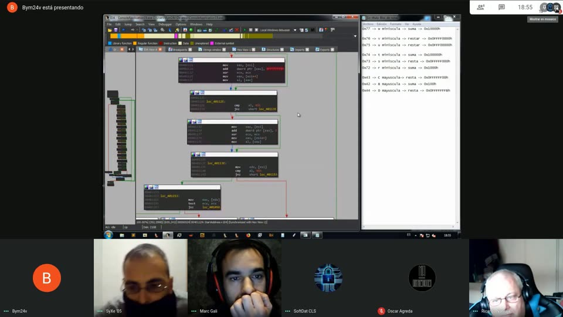
Estoy una suma, ¿no? El 45 es la E de España. Mayúscula, mayúscula. Mayúscula, mayúscula. 45 mayúscula es una suma de 5 en esa décima. Sí. Correcto. Bueno, aquí está el 46. Correcto, el 46 sería la F mayúscula, F de Francia mayúscula. Que en este caso hace una suma de 50, hexa, estamos en hexa, es 80 decimal, sale por el false. Bueno, esto es una condición, bueno, si es diferente. Sí, correcto, es un condicional. Si sale por el false, que es la rojo, le suma 80 decimal o 50 hexa decimal. Esa es una suma chiquitita. Esa es una muy chiquitita. Vale, entonces, si es cero, ¿no? Si es diferente de cero. Sí. Y uno cero, sale por el lado true, por el verde. Incrementa EA. Bueno, dependiendo de esta acción también. Hace un testeo de F de X, F de X, pero... Sí. Bueno, EDX a EA, el contenido de EDX a EA. Sí. Exacto. Pues, o decrementa EA o incrementa EA. Aquí estamos en 40, 11, 53, ¿no? A ver, que voy para allá. Vale, ya estoy aquí. EDX, ¿qué tiene EDX? EDX tiene... EDX tiene el puntero al contador. Lo toma de ESI. Justo un poquito antes. En 40, 11, 3, E lo toma de ESI. Vale, entonces, bueno, aquí está el testeo de EDX. ESI es un XOR que hace en el 14, 11, 37, ¿lo ves? Aquí está. ESI es cero en ese caso. Si venimos por aquí, claro. Entonces, esto siempre va a ser verdadero. Depende, si entramos, depende. Esto te está diciendo, date cuenta de una cosa, que ESI se pone a cero siempre y cuando se modifica el contador. Cuando hay modificación de contador, ESI se resetea a cero. ¿Te has fijado que estas son los básicos de asignación? En los ads. Después de un ad, viene un XOR de CX y CX, ¿lo ves? Sí, sí, sí. Esa bandera te está diciendo, hemos modificado el contador. Esa es la pregunta que se está haciendo ahí. Y ahí el teste CX, CX. Si CX es cero, quiere decir que has modificado el contador. Y, por tanto, sales por el true, por el verde. Y haces un DKEAX y bajas otra vez para abajo. Es decir, que, claro, le quita al contador. Correcto, correcto. Y luego la asigna en el MOB-RX entre corchetes EACS, estás cambiando el contador. Le incrementas uno o le restas uno. En función de si se modificó o no se modificó. Bueno, esto es la sumatoria.
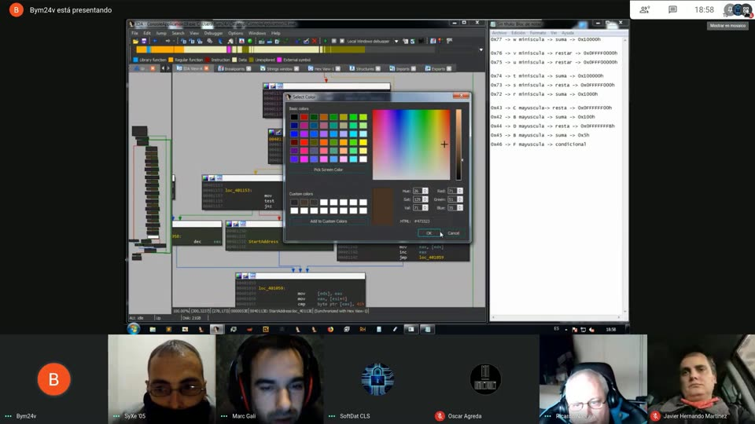
Hemos dicho que es 46 condicional, pero esto es realmente falso. ¿Por qué no hacen una pruebita a ver si funciona el shortcut? Viste, te pones encima del valor negativo y haces, para que lo cambie, a ver si lo cambia igual, aunque no lo muestra. Y haces el guión largo, el guión bajo. A mí sería el que está al lado del acero, shift, shift, el que está al lado del cero. El guión undercut. No, no, ahí no, directamente como atajo el teclado. Shift, shift, guión bajo. O sea, yo lo tengo, el guión bajo. A ver si lo cambia. Vale, a ver. Espérate, que lo hago ya también. Sí, sí, menos 5. Claro, el undercut. Como es, el shortcut funciona, lo que no está es en el menú, en el menú, pero funciona el shortcut. O sea, que haciendo con el guión bajo, con el undercut, porque yo me voy a fijar. Fijate que en el mío dice al lado que el shortcut es el guión bajo en el que yo mandé. Entonces, aunque no esté ahí, va, ahí no se ve porque yo lo mandé chiquito, pero si uno lo sigue un poco para la derecha, salen los shortcuts. Y el shortcut era el guión bajo. Sí que sale, sí que sale, de mí me sale también. Muy bien, tío. Bueno, listo. Con eso ya está. Por eso lo pasas directo fácil. Listo, listo, de lujo. Sí, sí, hostia, ya ves. Es que... A ver, el 46 era la... No veas tú la diferencia de ver FFFF a ver esto. Claro. Y lo que es más huevo. Exacto. Es buenísimo. Es buenísimo. Así es mejor. Mucho mejor. Y los mismos los otros se pueden cambiar también al carácter, viste. El carácter, en vez de poner 57, pone la letra directamente. No puedes cambiar ahí también. Ah, también, también, también, es verdad. Ahí, ese creo que se puede hacer, con el clic derecho se puede hacer, creo que directamente. Está la opción ahí, se hace clic derecho. Sí. Se ve más bien. Sí, sí, sí, sí, es verdad, tío. Es verdad, sí, sí. No sé qué tecla es, no sé qué tecla es. Ahí, ahí, ahí. La R. La R. La R, dale a la R. Esa, esa, da la R, así que te sale. Más, más fácil, viste. Exacto. Sí, sí, mucho más, tío. Claro, esto es lo que hay que hacer, prepararte todo bien, ¿sabes? Claro. Tiene muchos soltajos de teclado que no están en los menús, ese es el problema. Después lo fueron agregando, pero bueno, mientras igual funciona. Ah, vale, vale, vale, vale. Mira, aquí es la I y la Z. Claro, exacto. Lo que habíamos puesto nosotros en el comentario se me ha hablado ahí la Z también. Bueno, algo ayudé, algo ayudé. Sí, algo ayudé. Sí, sí, hostia, voy a ver. En una palabra lo has resuelto casi medio reto. No, no, no. Eso no va a mirar, no más.
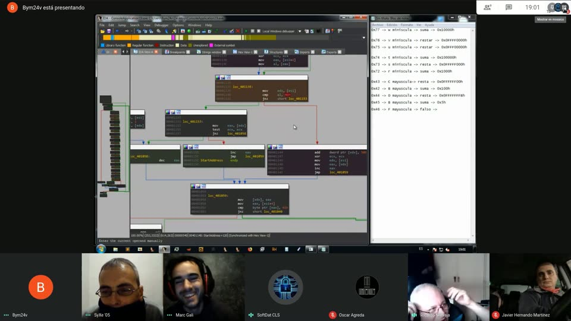
Vale, bueno. La F mayúscula, si es falso, añadimos 50, ¿no? No, no, no, no, no, no, no, no, no, no, no, no, no, no. Sí, algún ruidito, ¿no? Oye, con lo que estamos haciendo ya tenemos casi todo para armar el script, ¿eh? Sí, sí, claro, ahora sabiendo la lógica que tenemos que hacer, que tenemos que llegar a ese número, a ese rango de número y esto, pues el tema es ese. No cambia, ¿sabes? Claro, ahí sumándole bastante. Claro, claro. Claro, y como el control del contador lo tenemos nosotros en una variable interna, el script. Es que esto se podría poner, si lo pones a un algoritmo genético, al final el algoritmo genético te lo saca el solo, ¿sabes? Porque él va a estar cambiando letras todo el rato hasta que encuentre la solución. Exacto, exacto. Pues que sabe cuando tiene que añadir o cuando tiene que restar. Exactamente, exactamente, correcto. Esto está muy bien, está muy chulo. Bueno, es que tenemos, quitar 5 y poner 5. Exactamente. Poner 100 y quitar 100. Exactamente. Uno me dijo que había hecho eso y después lo que le pasaba era que le pasaba por arriba y cuando volvía para abajo le pasaba por arriba y nunca le caía en el rango porque era muy rápido. Por eso tuve que hacer la otra versión, la versión más lenta para las máquinas virtuales porque inclusive pasando el más lento le saltaba por encima porque era muy lenta la máquina. Ah, claro, se pasaba. Se pasaba para arriba y se pasaba para abajo y se pasaba para arriba y se pasaba para abajo. Sí, era un descontrol. Cuando le puse el slip un poco más largo ahí sí funcionaba. Ah, ahí se entró, ¿no? Sí, ahí entró. Claro, y bueno, ahí hemos visto eso que tenemos para añadir 100.000, quitar 100.000, poner 10.000, quitar 10.000 y así. Exacto, exacto. 1.100, 100 y 5. Esas son las posibilidades que tenemos, añadir 100, 5.000, 10.000 y 10.000. Claro. Y quitarla. Exacto. Y luego fíjate que abajo, a la salida, cuando testea Fx, te voy a decir la dirección. Espérate que voy. En 40, 11, 55. Fíjate que en función de Cx, decrementa Eax o lo incrementa. O lo incrementa. Y después lo pasa al apuntador de Dx. ¿Lo ves? Y el Dx que tiene, el apuntador de S y que es donde está el contador. Quiere decir que aquí le incrementa 1 o le resta 1. En función de si entró o lo entró en un bloque de modificación. Importante también. Y bueno, y lo va a comparar con 41.
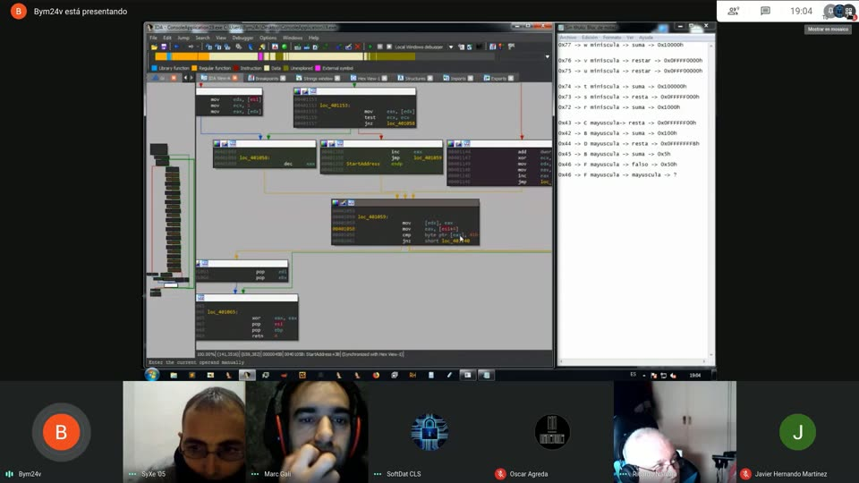
Correcto. Pues, justo antes nace un mod EDX-Eax entre corchetes EDX. 40, 10, 59. 40, 10, 59. Correcto. ¿Lo ves? Mod EDX-Eax entre corchetes EDX. Bueno, bueno, bueno. Ya está sacada. Ya está sacada. Ahora me he perdido. Igual. Aquí, ¿no? Está un poquito más para arriba, ¿eh? 40, 10. Un poquito más para abajo. Ah, 40, 10. Claro, si eso es más para arriba. 40, 10, ¿qué es? Busquería gato. 49. 59. Sí, mira, acá tiene gato. Pero fíjate que está abajo. Aunque sea más bajo, está más hacia abajo en el mapa. En el flowchart. Está más para abajo. BIM. Para abajo, para abajo, para abajo. Está casi al final. Ahí. Ahí. Míralo, ¿lo ves? Ah, sí, sí. Ahí tienes el de queax y el inqueax. ¿Lo ves? Sí, el último del loop. Ese. ¿Ves que hace inqueax, dequeax en función del test CX? Y después pasa al apuntador de EDX el valor de AX decrementado o incrementado. ¿Qué hay en EDX? Precisamente nuestro contador. Luego que aquí, suma o resta 1 también. Hay que tenerlo en cuenta porque afecta. Sí, sí, sí. Sí, sí, claro. Porque eso va a hacer que termine o no termine o se quede ahí. Es decir, si en esta iteración se modifica la variable, SX valdrá 0. Si la SX vale 0, el test CX, SX y un no 0 va por el true, o sea, por el false, perdona, incrementa EX, es más 1. Ahí. Y si en el ciclo siguiente o en el anterior o en este no se modifica la variable, sales por el true. Haces un dequeax y decrementas la variable en 1 también. Es una modificación más en punto, pero está ahí. Habría que verlo al principio si se modifica. Mira, el SX se pone a 0 solo justo después. Mira, se modifica aquí. Justo en los, yo tengo el día delante también. Justo después de los add, add the word pointer EX, que es donde está nuestra variable. Fíjate, solo se modifica ahí. Es decir, si no se entran esos basic blocks, EX no se modifica. Sí, sí, que si no entra dentro de un bloque, EX no se modifica. Correcto, correcto. Salvo, si subes para arriba en 40, 10, 70. Mira, el 78. Lo ves. Condicional move con extensión de C2. Si AL vale Y. Si pulsamos Y, ahí sí se modifica SX, ¿lo ves? Esa tecla hay que tenerla en cuenta, la Y. ¿Por qué? Porque tenemos control directo sobre SX. Es como que si pulsa uno o no lo pulsa, es como que quiere salir o no quiere salir. Y en SX se guarda el valor, ¿sabes?
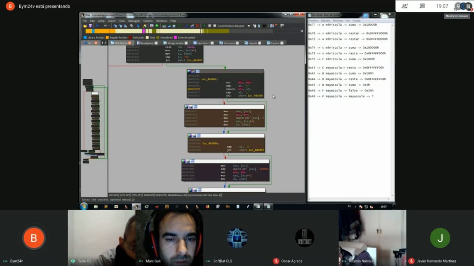
Que se verificará al final, al final de iteración. Y sumarás uno o restarás uno a la variable en función del valor de SX. Y en cada bloque que entra, cuando tú pones una combinación buena, en cada bloque que entra... ¿Has visto que lo resetea, no? En todo lo resetea, ¿te has fijado? Sí, sí, sí. Claro. Luego, SX vale uno o lo que tenga que valer solo cuando pulsamos Yes. Cuando pulsas Yes, SX valdrá uno. En caso contrario, se chafa y vale cero. Eso lo podemos apuntar también en el notepad que no lo tenemos. Caso de la Y. Vuestro T. Sí. Si vos querías gato, mira, acá tenés gato. ¿Dónde? A ver, acá tiene la gata, eh. A ti de la gata. Hostia, qué guapo, tío. Me encantan los gatos, tío. Déjame un segundo, voy al baño, ¿vale? Vale, me encantan los animales, a mí tío. ¿Cómo se llama la gata? Violetita. Violetita, qué guapo, tío. A ver, a ver, no lo veo bien. Son a lo más. Porque está acá mi moza, no quiere que la muestre. Míralo, qué guapo, tío. No quiere que la muestre. Qué guapo, tío. Guapo, me encantan a mí los gatos, macho. ¿Por qué sos jodida? ¿Por qué sos tan jodida? Como todos los gatitos, sos jodida. No sabe nada el gato. No, sí sabe. Esta sabe todo. Ya ves, sí sabe. Esta sabe lo que... Mirá, cuando yo trabajaba, la tipa se quedaba sola con el tío y no había ningún problema. Ahora con la cuarentena se acostumbró que estemos los dos. Sí. Entonces está acostumbrada que estemos los dos. Y como es gata única, como hija única. Entonces ahora que vamos a comer, ahora vamos a comer al restaurante enfrente, que ahora se puede ir a comer. Y la tipa los primeros días medio no le gustaba mucho, pero no decía nada. Y ahora se esconde, se esconde y otra vez se escondió como tres, cuatro horas como para que nos preocupemos por ella, ¿viste? Buscáse eso. Se metió bajo la cama y le decíamos, Violeta, Violeta, no sabía dónde estaba. El primer día nos preocupamos, el segundo día ya sabemos que son los trucos de ella, ¿no es cierto? Qué guay. No quiere que nos preocupemos para ver qué carajo le pasa y no le pasa nada. Lo que quiere es que, claro, vengarse, vengarse porque nos fuimos. Nos quiere vengarse. Hay que hacernos caspar. Qué guay, tío. Me encantan los gatos, tío. Jotira, yo jotira. Me lo juro, ¿eh? Bueno, jotira. Ahora va a cumplir siete añitos. Felicidades. Bueno, ¿qué va a ser? Es así, ahí me estoy llenando de pelo. Dentro de poco voy a pasar por un lado, todo lleno de pelo. ¿Cuánto tiempo llevas con ella? Y desde que tenía dos meses. Ahora va a cumplir siete años, casi siete años. Es que era un gatito chiquito, ¿no? Sí, vino cuando tenía dos meses. Qué guay, tío. Me encantan, es que me encantan los gatitos, tío. Bueno, muy bien. Bueno, la verdad que un ejercicio de mierda. Está guapo, ¿eh? Sí, sí, está bien el ejercicio, está bien. No, pero es entretenido. Está muy entretenido. Está guapísimo, tío.
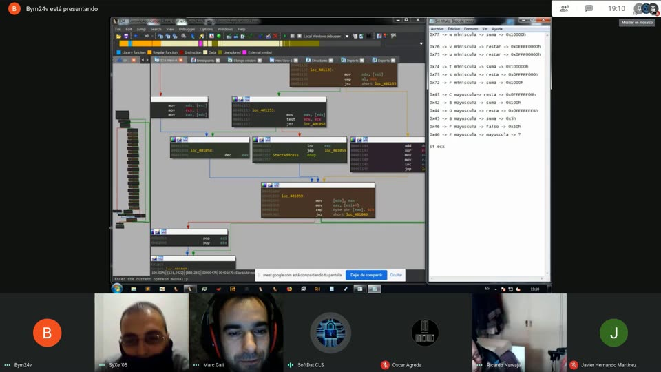
Es para salir de lo normal, un poquito de lo normal. Exactamente, tío. Exactamente. A ver, ¿me dejáis un segundo que me haga un cigarrico? Sí, claro. Tranquilo, tranquilo. Claro que sí, faltaba más. Sigan mirándolo ustedes. Estos pueden seguir mirando. Total, total está bien. Esto, ahora ya sabiendo la lógica que tenemos que llevar, pues ya sabemos cómo atacar. Pero ya sabemos que aumentamos, disminuimos y luego controlar los puntos de salida donde tenemos que… Exactamente, yo ahora lo que haría aquí sería una tabla… Ahora, mira, lo primero que yo haría sería calcular el intervalo en el que tenemos que caer. Que tenemos que ir para atrás, a donde estaba el ff aquel, pulsar mayus, guioncito bajo para que nos dé el valor a la vista. Y a partir de ahí, hacernos una tabla y calcular. Y sumándole, y sumando valores hasta mientras que no estemos en intervalo. Luego, si nos hemos pasado, ir restando para que no nos pasemos por detrás. Y todo esto al mismo tiempo sigue sumando. Exactamente, teniendo en cuenta que va por su lado. Claro, es que esto es lo que puede pasar, lo que puede pasar en esto es que no en todas las máquinas mi solución pueda valer. Exactamente. Pero tu strip sí que va a valer. Porque tu strip se va a acomodar a cada máquina. Sí, pero a veces puede pasar lo que le pasaba a este muchacho. Por ejemplo, yo le pasé mi strip y mi strip le saltaba por encima a él. Porque la máquina es muy lenta, entonces no le daba. Le tuve que hacer el elite más grande porque, aún yendo lo más lento posible, cada ticla que yo tipeaba saltaba no sé cuánto. Aunque le pasaba uno, salteaba 200. Entonces, nunca caía en el rango. Vale, vale, ya lo entiendo. Le tuve que modificar el elite. Suma más de lo que restas, vale, vale. Claro, el tema es un hilo en segundo plano, va a la velocidad de la luz. Ya ves, según la prioridad que tenga, más. Bueno, tiene el retraso de los 4 milisegundos, pero sea para que no entre en bucle infinito. El otro tiene 15, el elite 15, como un poquito más. El elite 15, ¿no? Claro. Pero la prioridad de los hilos, ¿qué prioridad tiene? ¿La misma? Las mismas son iguales. Vale. Está guapo, ¿eh? Como ejercicio guapísimo. Está chulo. Bueno, esto lo que pasa es que la gente que se quiera poner le da ganas que se ponga con el script de Python, que es lo que a mucha gente le da miedo. A ponerse con Python. Eso es lo que mola, que luego nos vamos a meter con el Python y encima refrescamos Python. Todo bien, todo. Que viene bien. Y hacemos familia aquí encima, hablando, ¿sabes? Claro, claro. Es lo que mola, ¿eh? Es lo que mola, porque muchas veces cuando te pones a mojón también con cosas serias, en la que llevas un rato y estás tú solo, te pones un poco de música y al final lo coges y dices, ha dado pa' por culo. Sí. Yo lo hago con música también, es verdad, yo me pongo música.
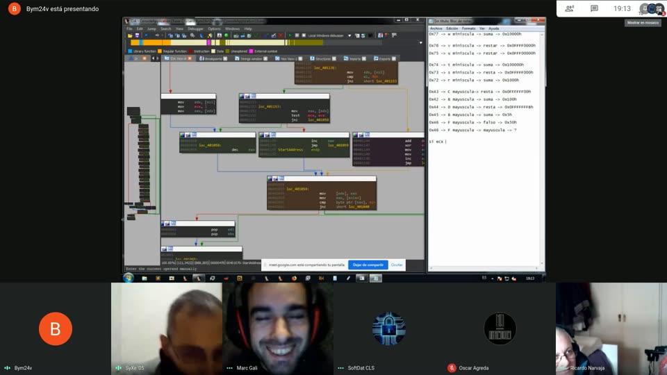
Yo solo me pongo solo, solo, solo cuando voy a escribir algo. No sé, alguien quería hablar ahí, no sé, nos lo dejamos. ¿Quién quiere hablar? Sí, sí. ¿Mark, vos querés hablar? No, no, no, no. Ah, no sé quién habló. Perfecto, perfecto. Mark, puede hablar cuando me quiera. Ah, está Oscar también. ¿Qué tal, Oscar? ¿Cómo va? Oscar, puede hablar cuando quiera también. Hola, Oscar. Hola, Oscar. ¿Qué tal también? Sí, sí, claro. Hola, ¿cómo están? ¿Todo bien? ¿Cómo va? Bien, Oscar. Observando ahí cómo están haciendo. Claro, puedes hablar, Oscar. Habla lo que quieras, ¿sabes? ¿Vos lo intentaste, el ejercicio este? Sí. ¿Y qué pasó? ¿Lo solucionaste? ¿Cuál, cuál? Este, el de la juntada entre todos, el que tiene los tres. Ah, sí, sí, el ocho sí, ese sí lo solucioné. Pero lo que no podía es lo que estaban hablando ahorita, es meter el, por Python, el script. Eso todavía estoy... Ah, lo solucionaste con un palito, le pusiste un palito a la tecla ahí hasta que... Yo lo dije así, yo lo hice apretando las teclas, eh, nuevamente. Mira, apretá la tecla que le dejas un palito a la que aumenta uno, te vas a dormir y al otro día está el... Hola, Juan, bienvenido. Juan, bienvenido abajo. Hola, Juan, ¿qué tal? Que digo que también he pensado, he pensado que si pulsamos la te y luego, es decir, pulsamos la te y la volvemos a pulsar, traemos el delay que hay en mi máquina. Podemos saber el tiempo de retraso que, comparando un número con otro, podemos saber el retraso que hay. Ah, pues muy bien, muy bien. Entre más y más. Entre más y más. Y para cularlo luego, ¿no? Claro, puedes... Si ahora, como se está escribiendo la te, la te, es decir, la máquina va a empezar, ¿no? A sumar. Emprimo la te y si... Entonces, le va a sumar 10.000. Si al momento, al... Siguientemente, pulso la te, me va a escribir otro número. Entonces, si resto los dos números, es la diferencia que ha habido con respecto a mi máquina. Correcto. Eso se podría saber, pero bueno, eso se podría saber, pero... Muy bien pensado, bien. Y otra cosa que influye también acá, es que si vos, por ejemplo, mandás una tecla, vos mandás una tecla, recibís el resultado, eso tiene un tiempo hasta que mandás otra tecla. En cambio, si mandás, mandás, mandás, y no imprimís nada, sin imprimir, y sin imprimir, porque imprimir consume tiempo. O sea, cuanto vos imprimís, consumís más tiempo. Entonces, hay que tratar de imprimir y hacer lo menos posible en la interfase de uno, porque si no, te consume tiempo y mientras, atrás va el otro, va lo loco, es la carrera de lo loco. Claro, claro. Si imprimimos dos te seguidas, supuestamente, le va a subir dos cantidades grandes, pero... Pues yo me refería a no mostrarlo en pantalla, directamente enviado. O bien, pon un condicional y que imprima una sola vez solo, y el resto que no imprima, ¿sabes? Claro, una vez. Cuando sea true, lo pones a falsa y ya no imprimen más.
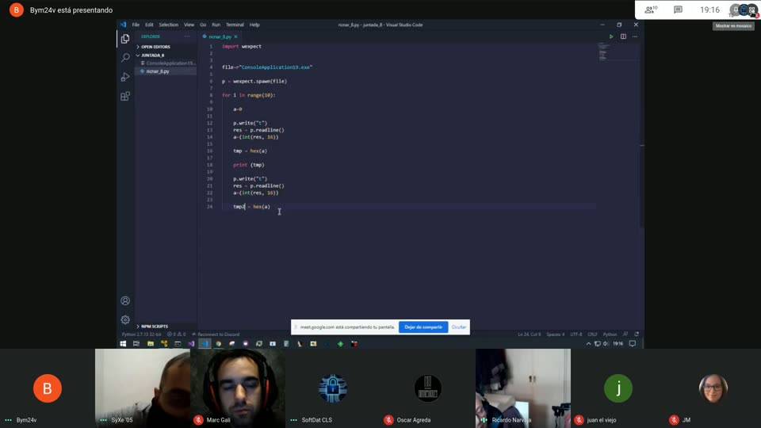
Sí, sí, sí, no, podemos saber, claro, podemos pararlo cuando queramos, claro. Claro. Pero el tema no era ese, si ahora yo lo diría correr, seguramente no va a sumar dos te, que no sé qué valor era ahora exactamente, creo que eran 10.000 o... La te está aquí, la tenemos aquí. 100.000. Ponerle comentario en el código de Python, ponerle sumo tanto, así no tenés que estar mirando ahí. Ahí al lado de la de print del write-t, ponerle un comentario. Claro, claro. Si le doy a parar a esto, justamente me va a escribir los dos te, pero con una diferencia. Este es como que agarra velocidad, después cuando empieza a agarrar velocidad empieza... Ahora no me ha escrito. Ahora no me ha escrito. Tienes que dejarlo que haga un par, no dos solos. Sí, ¿no? Bueno, como hay nada más que 10 iteraciones, lo vamos a dejar solo, ya está. Ahí vas, a ver, cero. Claro, es que, claro, ya, yo es que también parezco burro, porque es dentro de un foro, estás haciéndolo dos veces, entonces, de todas maneras, no... Pero ya está, pues, aquí sí, aquí podemos poner una condición, y podemos ver si el temporal es igual a cero X, yo qué sé, al número este que había aquí. También puedes hacer un while en vez de un foro, mientras sea el valor mayor que tanto, menor que tanto, que se repita en el while, pones en la condición en el while. La diferencia está en que en un foro, sabes, el número de iteraciones en el while no. No, no, ya sé, pero mientras sea tal cosa, que siga repitiéndose, hasta que sea el valor mayor, menor que tal. También, también, sí, o un do while, si quieres. Sí, claro, no, y aparte es que el while, cuando tengas lo que quieres, te sale, puede salir. Te sale y después podés hacer otro while abajo de vuelta con otro, con otra tecla. Bueno, en Python el do while no existe, ¿no? Yo lo que hago es poner un contador de estos chungos y... O sea, un contador base y le voy sumando más uno en cada iteración del while. Y cuando quiero... Bienvenidos a todos los que vienen, ¿eh? No sé. Sí, bienvenidos. Bienvenidos. Acaban de entrar. Los que quieren hablar, hablen. Juan el viejo. Lo que necesiten. Estamos haciendo el ejercicio de la juntada que viene, de la juntada que viene. Del sábado que viene, la juntada oficial 8. Así que... ¿Qué dirección es? ¿Vin eso? ¿Cómo dicen? ¿Qué dirección es? Que no lo has visto. Esta es 4011-F9. Vale, Messi. 4011-F-C. Ah, le das que hay. Eso sería... O sea, queremos que sea mayor que este y menor que este. Correcto, correcto. Pues entonces lo que tenemos que... Bueno, ahora... Eso lo que tendríamos que hacer es declarar las constantes con estos valores, ¿sabes?
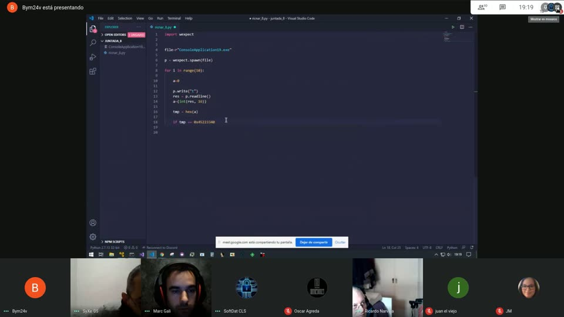
Este valor, declararlo como constante, pero... Sí, sí, sí. Claro, habría que poner un define, ¿no? Exacto. Porque como no varía nunca... Límite inferior, como quieras. Sí, sí. Bueno, star, porque sería donde vamos a partir, ¿no? O star, como quiera, sí. Piensa que este es uno de los límites del intervalo. Luego tenemos el otro. Ahora tenemos el otro, exactamente. Exactamente. El que sería, ¿no? En este caso. Ahí está. Que sería... Te lo digo yo. Te lo tengo aquí. 522-34-00. Alguien está queriendo hablar, a ver, no sé quién quiere hablar, que por ahí no lo dejamos. Hola. Hola, ¿alguien quiere hablar? Hola. Hola. Me parecía que... Ah, buenas a todos. JM dice buenas a todos en el chat. Buenas. No podés hablar, JM. Ricardo, el que quiera hablar, que hable directamente, que no pida ni permiso, ¿no? Sí, acá no hay que pedir permiso. El que quiera habla directo. El que hable, que hable, ya está. Buenas. Ah, no tiene cámara. No tengo cámara. Ah, vale. ¿Tenés mi micrófono? ¿Tenés? No tiene cámara. ¿Tenés mi micrófono? No puedes hablar igual. Estoy usando el móvil para micrófono. Bueno, el móvil, sí. Te escuchamos, te escuchamos. La mujer está durmiendo, bueno. Y bueno, entonces, algún comentario lo pones por ahí, listo. O sea, que no, no dice que no, que está la mujer durmiendo. Bueno, está bien. Ah, vale. Claro, podemos decir si es mayor a la consta textal, que es donde queremos empezar, ¿no? Sí. Y también podemos hacer una condición que sería AN, ¿no? El AN, que sería menor. Temporal sería, bueno, en la que sea uno mayor o igual, uno se puede hacer mayor o igual, ¿no? ¿Sabes lo que haría yo? Sí, bien, bien. Yo, lo que haría yo sería, if temp, mayor a const start, y en vez de poner el AN, el AN de momento no lo pondría, ¿para qué? Para saber cuándo estoy dentro del primer intervalo. Sí, sí, sí. Esto de ya, de qué es un intervalo, ahí está. Y aquí, si quieres, pones un print de que estoy dentro del primer intervalo o algo así, para que tú lo sepas. Sí, buena idea. Exactamente. Y ahora, entonces, pones el otro if. Ahora pones el otro if. If estoy por debajo o igual del rango superior. ¿Eso es menor o igual? Sí. Inferior o igual sería, ¿no? Falta igual ahí, ¿no? Es que automáticamente la que sea un poco mayor que el otro ya se va a parar. Yo diría, claro, yo diría que pongas ahí que si es mayor ya te pasaste, digamos. Me pasé, ponele. Me pasé porque se fue del límite superior para avisar que te pasaste. Exactamente, para ya no perder tiempo. Ya te has pasado. Debería ser si es igual. Mayor o igual. Y ahí puedes hacer break. Si pasó, break. Es que el JB consiste en que si es igual o mayor o igual o menor. Sí, sí. JB es inferior o igual. Below o igual. Below, sí. Jae, above or equal, sí que es mayor o igual. Es que si es exactamente igual también es lo complicado, ¿no?
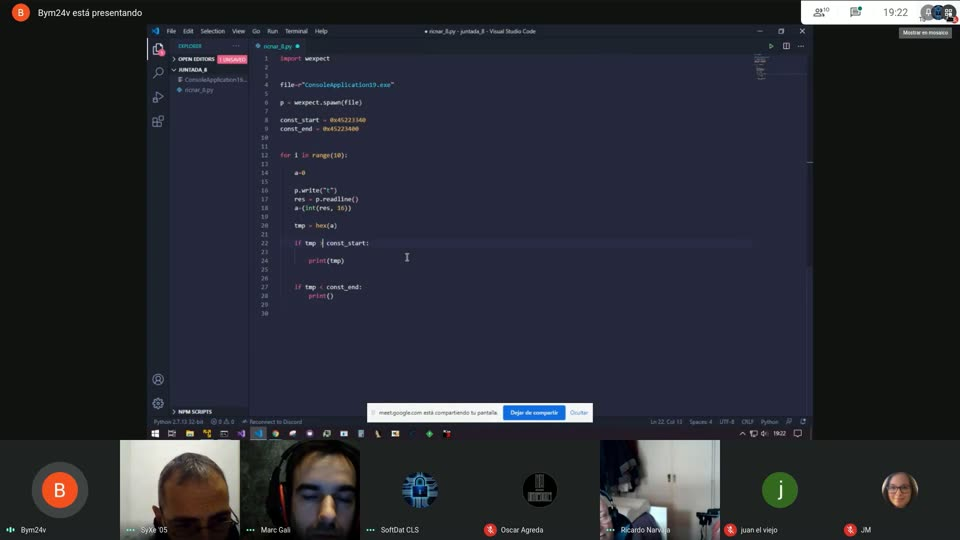
No, exactamente igual va a ser difícil. Claro, eso va a ser la hostia. Entonces, tiene que ser mayor. Por eso te da un rango. Y tenemos que ir quitándole respecto a lo que nos dé. Exactamente. Por eso te da una ventana bastante grande. Para que pueda entrar. ¿Sabes cómo una portería en el fútbol? La contrarre de la portería mejor. Claro. Luego también podemos decir si es mayor que le reste, yo qué sé, 100 por ejemplo o 5. Por ejemplo. Le vea un o 5 hasta que entre. Si es mayor lo que tenemos que hacer es saber cuánto mayor es para restar una u otra. Claro. Sí, sí, sí, sí. Con un switch, un switch case. Esto lo podríamos hacer. Esto que lo has programado tú, ¿no, Rignal? Sí. Ya. Así nada. Sí. Sí. Sí. Sí. Sí. Sí. Sí. Lo he dicho. Para divertirse. Así lo haríamos. Y ahora tenemos el número de iteraciones. Que con 10, que con 10 ni de coña. Por eso lo mejor es lo que ha dicho Ricardo, con un while. Porque un while te despreocupa del número de iteraciones. No, también es verdad. Claro, y salimos cuando queramos, ¿no? Claro. ¿Cómo sales? Con un break. Metes el break y sales del while. O directamente cuando se cumple la condición. Se repite mientras es menor que tanto. Y si es mayor, sale fuera del while. Claro. Si yo hago, si el valor que me devuelve es mayor que, por ejemplo, 40 millones, bueno, salgo. Ya llega hasta la mitad, por ejemplo. Claro. Exacto. Exacto. Vamos a ver. Ah, es un string con un integer. Hay que hacer un casting, un type casting. Oh, my God. Claro, porque esa decimal lo devuelve en X, lo devuelve. Entonces, en este caso, sería lo mismo, ¿no? Eso es string. Eso devuelve un string, ¿eh? Claro, tienes que pasarlo a íntegar. Y si no le pones X, te da el íntegar. Si le sacas el X, te da el íntegar. Sí, sí, sí, claro. El X es lo que... Es que lo convierte en string. Es una copia ahí un poco absurda. Es una copia nueva. El tema A es una copia absurda, pero... Estamos practicando. Claro, claro. Si es que muchas veces ahí es donde aprendes. Volvele a hacerlo y tú mismo ha empezado a mejorar las cosas. Las macanas que estás haciendo y las cosas que estás haciendo. Y te digo una cosa. Yo hace tiempo que no tocó Python, ¿eh? Yo me pongo ahora y me costaría un huevo también, ¿eh? Esto como tarda... Mi máquina también es que se tarda, ¿eh? Bueno. Es que lo mismo puede pasar que no estemos pasando, ¿no? Claro. Y no veamos nada. Claro, porque el problema es ese, que tenés que poner el límite máximo. Si no, si no... Algo tenés que imprimir, algo tenés que imprimir. Si no, nada más. Sí, uno, pues si no... Tenemos que llegar... A ver... Tenemos que llegar a 45... O sea, son 1, 2, 3, 4 bytes. O sea, son 8 dígitos. El límite inferior es ese.
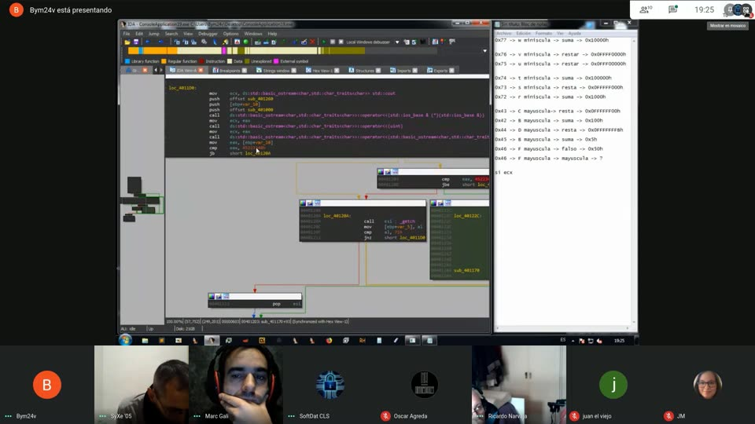
O sea, pues... Es que fíjate todas las iteraciones que son. Bueno, va sumando de 100.000 a 100.000. Voy a buscar algo para comer, disculpen. A la rinda. Que aproveche. Buen provecho. Que digo que lo va sumando a 100.000 a 100.000, pero tenemos que llegar bastante. Son aquí un burrón de millones. Ya ves. Claro, es que son 4 bytes. 4 bytes bastante. 32 bytes. 32 bytes. 2 elevado a 32 menos 1 tienes ahí. Así nada. Claro. Va a tardar, tarda un poco. Debe de tardar un poco. Y la ventanita es pequeñita. Que no es que sea muy grande. Pero a medida que se vaya acercando vas sumando menos, ¿no? Cambiamos de tecla. Exactamente. Esa es la jugada. Eso es lo que hay que hacer. Claro. Hay que controlar eso. Es que aquí seguramente no hemos pasado. ¿Sabes lo que te digo? Ya ves si nos hemos pasado. Con la T nos hemos pasado, pero 10 pueblos. Claro, pero el problema es que hay que controlar eso. Claro. Para eso he dicho antes lo de switch case. ¿Sabes? Claro. En función de cuán lejos estemos, vamos sumando una tecla u otra. Como un selector, ¿sabes? Sí, pero es que en Python no existe eso. Pues habrá que implementarlo de otra manera. Con un if. Con un if, ese if, el shift, el shift. Sí, sí. Bueno, en C++ sí que se puede. En C++ sí, en el momento. Y en Java también, en esos programas se puede. Sí, claro, el switch case sería lo correcto. Claro, poner las constantes que tal y puedes... Claro, claro, exacto. Pero bueno, lo podemos hacer con if. If, ese if, ese if, else. Tengo curiosidad para ver lo rápido que va esto. Venga, a ver, vamos a ver, sí. Bueno, directamente voy a quitar esto de aquí. Printa, printa, ¿no? Bueno, voy a poner aquí el temporal para que sea aquí, para no ser una copla sea lo que estaba haciendo ahí. Vale. No switch file o directory. Sí, porque había puesto Python y el CLS al mismo tiempo. Ah, guay. Mira, mira, mira cuando mira dónde estamos. No, ¿ves? Se suma rápido, ¿lo ves? Bastante rápido. Sí, pero espérate, esto es... Por el tipo nos hemos pasado ya. En decimal esto. Ah, en decimal. Ah, amigo. Sí, sí, sí. Bueno, no, aquí. A ver si me lo quiere coger. Creo que sí. A ver. Vale, esto es otra cosa. Pues mira, pues tampoco va tan lento, ¿eh? A 45 estamos dentro de la ventana. Sí, no tarda mucho. La verdad es que ahora... No, tarda, pues eso. 12, 13, 14, 15, 16 segundos. Chao, se pasó. En 16 segundos estamos dentro. No, en este, en tu máquina. Imprimiendo, cuidado. Imprimiendo. Mira. Mira, ahí estamos en el rango.
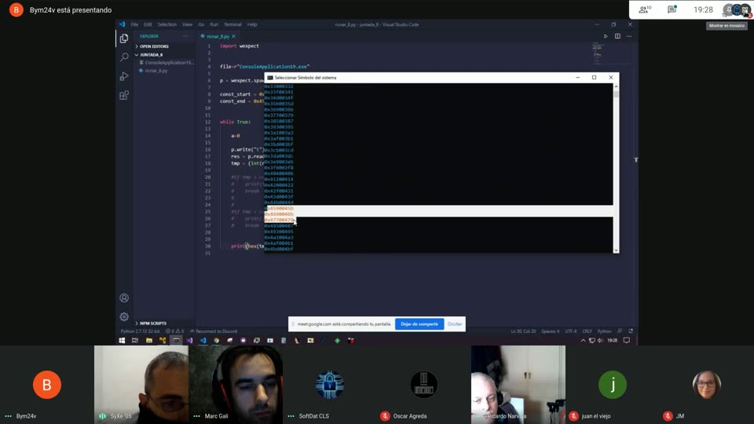
El rango es este, tío. Es 45, 22, 33, 40. Ahí te has pasado. Está por encima. A ver, lo que podemos hacer, ¿sabes lo que es? Es que cuando, es decir, contar esto y cuando el primero sea 45 pasará a lo siguiente y pasará a lo siguiente y pasará a lo siguiente y así. Yo haría, mira, el bucle, yo lo que haría sería siguiente, BIM. Ir funcionando, ¿correcto? Ir funcionando, ¿correcto? While mientras que sea inferior al límite bajo, al Start. ¿Correcto? Mientras estemos por debajo de 45, 22, 33, 40 a ver sumando. Sí, ahora, cuando pase de ese límite, ahora tenemos que ver cuán lejos estamos. Si estamos dentro de la ventana, ok, hemos ganado. Si no estamos dentro de la ventana, hacemos una resta para saber cuán largo estamos y calcular la tecla de retraso que tenemos que volver para atrás. Entonces, claro, la tabla que tú has dicho es podemos saber con qué tecla, qué es lo que sumamos, lo que restamos. Exactamente, exactamente. Implementar un switch case, aunque sea con if o ese if. Sí, podemos hacer aquí un objeto. Correcto, sí, una tabla, muy bien, sí, con tuplas, ¿no?, como quieras, o con una raise, como te dé la gana. Sí, bueno, claro, es que podemos asignar a cada tecla el valor que tiene. Correcto. Y así podemos saber lo que tenemos que poder sumar. Claro, exactamente, muy bien, muy bien. Claro, que en este caso creo que lleva doble, bueno, las comillas, ¿no? Aquí sería... Sí, sería comillas simples, ¿no? Yo creo que es comillas simples, sí, porque es un chat. Ahora, entonces aquí podemos poner el valor, por ejemplo, los 100. Correcto, en hexa, en hexa, cuidado, cero por eso, cero por exactamente. Vamos a ver, esto. Lo tenemos en el notepad. ¿Me lo imprimiría así, T? O T igual cero, ¿no? ¿Sería el primero de la T? Sí, sería el primero, pero... No, menos la tabla. A ver, es que esto creo que es lo que está mal. Bueno, pues es un array de objetos. Cada objeto. Correcto. Cada objeto, lo que pasa es que aquí me lo muestra así, pero si pongo en ese decimal ya me lo tiene que mostrar bien. Exacto. Así, ahora, si hacemos esta tabla podemos saber en qué... Ahí está. Exactamente. Podemos saber en qué letra corresponde al valor. Sí, sí, sí. Muy bien, muy bien hecho. Pues eso, pero en T igual ahora tenemos que meter más elementos, ¿no? La T, la X, la Y, la trágica, ¿no? Claro, ahora por aquí poniendo una coma. Exactamente, una comita y en la línea de abajo para que se vea más claro. Exacto, exacto. Vamos pasando aquí. Y yo las ordenaría por valor. Claro, hay que... Ahí, del notepad, correcto. Eso, eso, muy bien. Eso es. Claro, a ver, aquí esto antes no lo hemos cogido, pero podemos coger... Podemos coger ya los valores buenos, ¿no?
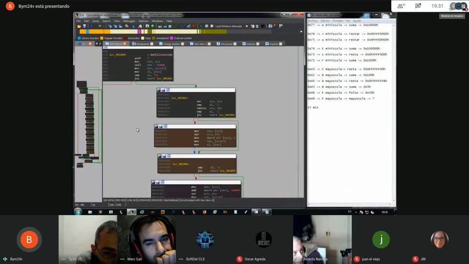
Exacto. Podemos decir... Exacto. La W, la 1000, la... Exactamente, exactamente. Eso es lo que hay que apuntar, eso es lo que hay que apuntar, correcto. La W, menos 1000. Correcto. Exacto. Yo voy a hacer la tabla aquí a mano. B, menos 10.000. Exacto. Y hay que tener en caso, cuando es Y, ¿eh? En 40, 10, 6, C, cuando es Y, hace un CMOB NZ, eso hay que tenerlo en cuenta también. Igual, me parece que vos, como tenés la máquina muy lenta, vas a tener que bajar el otro ejercicio, el que tiene el slide más grande, porque si no, me parece que no, te va a entrar en el... En esa ventana no vamos a caer, ¿a que no? Me parece que tan lenta la máquina no va... Sí, sí, va un poco lento. Bueno, probá, si ves que te salta siempre por encima... Sí, probamos con este, ya que estamos bien, probamos con este. Después, si ven que le salta mucho, de última le ajustan el slide. Claro, si no podemos volver hacia atrás... Bueno, el código no es lo único que cambia, pero nada más que cambia solo es SLEP, ¿no? Es el slide, el otro tiene slide 15, si ves que es muy lento, le pones slide 20 y listo. Claro, exacto. Pero que lo único que cambia es eso, ¿no? Simplemente... El slide, sí, es lo único. Lo único que cambia es que tiene más tiempo, entonces le da más tiempo a mandar más teclas y no que esté loopiando y esfumándose solo. Exacto. Pues la S sería menos 1000. 0, X, 1000. Y vamos armando la tabla ahí, ¿sabes? La C, menos 100. Menos 100. La S, el menos 1000, ¿qué tengo que ponerlo? Pero la S, ¿no? Si este es más 1000 y la S, el menos 1000. Tengo que poner aquí el palito importante. A ver, la C es menos 100. La B es 100. La D es menos 5. La D, D. D es menos 5. 0, X, X, 5. H. Y la E. Más 5. Mira, la E no la había notado. Es que está la E, ¿no? No, es que aquí no, aquí he cometido un error, ¿no? Mira, la B es 100. La B es 100, ¿no? Ah, mira, está aquí arriba, sí, a ver. Está bien, la tienes bien. C, B, D, C, B, D, E. De recta, me falta la E aquí. Es que la tienes, porque has hecho copy paste y la B la tienes dos veces, fíjate. Sí, sí. 42 y 45. El 45 es la E. Es la E. Claro, cuando hiciste control C, control V, se quedó ahí. Está bien, ya. Suma 5. Exacto. Los que más suban y restan es la U y la V, ¿no? Con lo que veo. Los que más restan, ¿no? Claro, son 10.000, 100.000. Esos son los que más te van a ayudar en tu máquina. Vale, pues ya hemos convertido esto.
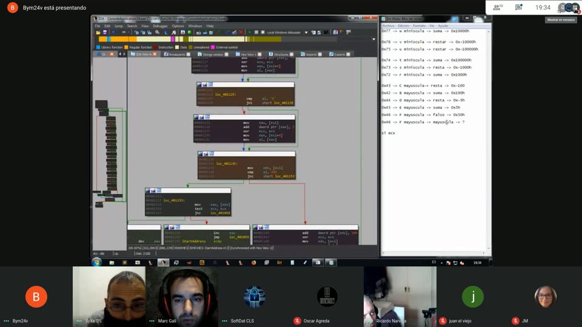
A ver, la primera es la V. La V es donde está aquí. Son menos 10.000. La V es 10.000. Menos 10.000. Menos 10.000. Menos 10.000. Y la W son 10.000. La W no vale. Y la U son menos 100.000. A ver, aquí, 7. Yo hago un cerro más. Aquí son 100.000. Vale, está bien. ¿Ya está? Sí, yo creo que sí. La V son menos 10.000. Creo que hay uno que resetea a cero todo el contador. La Z, me parece. Hay que encontrarlo. Sí, creo que la Z. No sé cuál es que te resetea, pone a cero. El contador. La Z. ¿Dónde está la Z ahora? Aquí, vale. Aquí, ¿no? Claro, aquí lo peta todo a cero. Pues mira, ese no está anotado. ¿Dónde está el de cero, que no lo veo? Al inicio, ¿no? ¿A cuál? Sí, ese lo pone cero. Pues sí, sí, en uno. Sí, la I hemos dicho que es la manipuladora de Fx. Correcto. Correcto. Bueno, no lo he escrito aquí, pero... Exactamente. Hay que tener en cuenta la I, ¿eh? Lo que hace es muy importante. Y date cuenta que al inicio, compara con la X, después del slip. You know, si no es X, se va por el false. Fíjate también en eso, ¿eh? Aquí está la X. Claro, la X directamente aquí la manda al carajo. Exactamente. Bueno, mueve a ese X1. Exactamente. Coge el valor de ese y lo mueve de X, que luego lo pasa aquí el contenido y lo pasa otra vez a ella. Bueno, aquí es un cambio, pero para decrementarlo. Hola a todos, están escribiendo en el chat. Hola a todos. Hola, Javier. Hola, ¿qué tal? Hola a todos. Hola, que me acabo de incorporar. Estaba viéndolo en el coche. Bienvenido. Creo que vais bastantes a avanzar. Bienvenido. No, no, que pasa. Estamos en lo peor prolegómeno. Bueno, podemos ser... Estoy viendo que estáis en lo peor, pero bueno, vamos a ver si hacemos cualidad. Sí, bueno, podemos hacer un resumen de lo que hemos ido haciendo, porque ha ido entrando gente y no hemos dicho nada. Correcto, correcto. Se agradece. Bueno, pues un resumen rápido de todo esto es que... Primero instalar un perfecto, hay que decir. Sí, bueno, para hacerte este ejercicio lo más importante es que instale el módulo web spec de Python, si lo quieres hacer y tal, porque te vendrá, te mejorará mucho la vida. Correcto. Este lo que hace es que puedes levantar un programa y mandarle comandos por consola, ¿no? Es como que por aquí tú puedes escribir y puedes ir escribiendo y automáticamente en Python puedes automatizar eso. Es muy cómodo de no tener que estar tú ahí dándole caña.
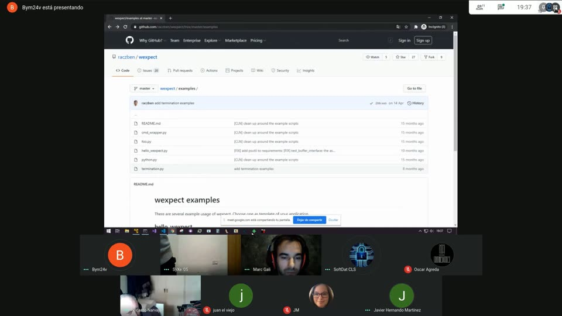
Bueno, una vez que tengas el módulo, que puedas hacer eso, está la función principal. Ese funciona en Python 3 solamente, no funciona en Python 2. Eso, en Python 3.7, por lo menos a mí me va bien en Windows 10. En 2.7 da problemas, no sé qué historias pasa que no va. Sí, y en Python 3.9 también falla, o y 3.8 también. Ah, pues mira, he elegido la 3.7 de coña y ha sido la que va. Bueno, escúchame, en el grupo, antes Ricardo ha pasado un documento que hay un chico que hizo la instalación limpia de eso y se puede ver. Aquí en el grupo estaba antes el documento. Bueno, aquí están todos los documentos. Él lo hizo en Windows 7, pero igual anda para Windows 10 eso. Sí, sí, sí, yo lo tengo en Windows 10. Ah, bueno. Estaba yo pendiente ya justo de empezar a esta parte que estáis haciendo. Bueno, pues tener el módulo importante para la hora de automatizar las pulsaciones de teclado. Bueno, que a lo mejor otro vale, ¿no? Pero en este, como tienes que hacer miles, pues es más adecuado. Bueno, una vez que eso, esta será la función main, que bueno, lo he puesto aquí, pero debería ponerlo. Y ya está, ¿no? Y aquí crea un hilo con esta función. Y lo que estamos viendo es que eso, ¿no? Que básicamente lo que hace es que levanta el programa, pero el hilo por detrás va sumando un contador. Y cada vez que pulso una tecla, me muestra el valor de ese contador. Pero claro, están en dos hilos diferentes y es lo complicado un poco del ejercicio, ¿no? Y básicamente eso, hemos estado analizando todo eso. La función principal hace esto. Cuando llega este valor, dentro de este valor, mayor que este valor, o menos que este, pues te imprimirá el ciclo bueno. Eso es lo que tenemos pendiente. Y lo que estábamos analizando es la función startA3, que es donde se crea el hilo. Y aquí, pues, estas letras que están aquí puestas, bueno, son valores de esa decimal, se podrán cambiar. Pero esas letras son los comandos que hay que ir mandando para ir controlando ese contador, ¿no? Para que nos dé un valor exacto y que nos imprime el chico bueno. Y básicamente estamos en eso, no estamos en mucho más. Hemos ido analizando, dándonos cuenta y... Descubrimos que el IDAM 7 y pico, el underscore grande, te cambia a negativo los valores que estaban FFF. Ah, bueno, sí, los truquillos que ha dicho Ricardo. Así, justo, justo, en cinco minutos que he conectado, me conectas a esos trucos, perfecto. ¿Cuál es el underscore largo? Entonces, con shift barra baja o con sim barra, puedes cambiar el FFF, ¿no? En este a poner el negativo, que esto nos ha hecho Ricardo y la verdad que es brutal. Buen tipo, ¿eh? Esto no me suele olvidar nunca, lo tengo seguro. Con el underscore, con el subrayado. Sí, sí, pero... Subesado largo, subesado de bajo, largo. Ahí va. Y luego está los valores a decimal, que, bueno, están aquí. Si le doy a la R, me los convierte, pero en el segundo menú se puede ver también, ¿no?
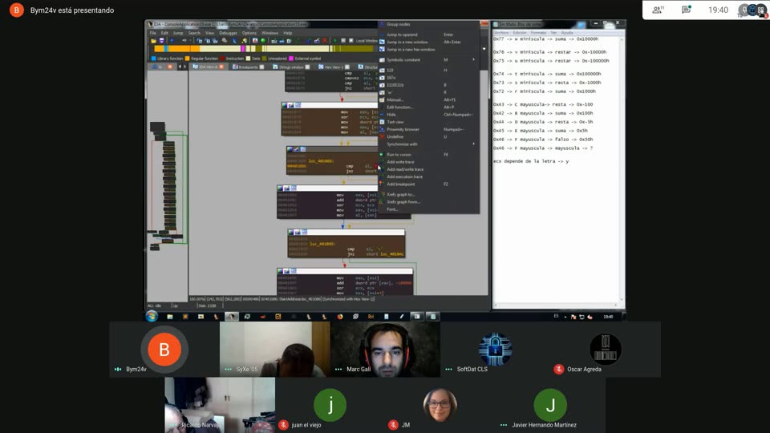
Pero aquí ves el comando rápido. Llego en la R para que se vea bien cómodo, ¿no? Cuando hay un montón de comandos y cosas de esas así, se ve. Pero esto de valores negativos es brutal. Porque si no, siempre se vea uno más. Tremendo, la verdad, sí. Buenísimo. Bueno, y básicamente eso. Estamos controlando un poco mi máquina, a ver qué tanto rápida es. Yo, o sea, lo que había pensado, como hay que cumplir un rango, no sé si con el WSPEC se puede ir comprobando el valor que devuelve la función. Sí, se puede. Esa es la idea. Esa es la idea. Esa es la idea. Esa es la idea, Ricardo. Eso está lo haciendo. Justo, ¿no? Eso está lo haciendo. Y ver en... Sí, justamente íbamos a empezar a hacer eso ahora. Claro. Correcto. Esa es la idea. Claro, lo que estamos hablando es que queremos hacer una... la tabla, dependiendo del comando, nos diga qué tanto suma o resta, ¿no? La ventaja que tiene ese WSPEC con respecto al P.O.P.N.S. Que el P.O.P.N.S. es generalmente para pocas interacciones. Vos le mandás, le mandás dos veces, querés leer el valor y ya se te colgó. No da para mucho. En cambio, este vos podés mandarle, leer el valor, el resultado, tomar una decisión, fijarte lo que es, cambiar, mandar otra cosa. Tiene más interacción. Y podés leer el resultado que te devuelve. Eso está bueno. Interactuar con eso. Exacto. Así que, genial. Que es lo que tenemos que... O sea, lo que... Voy a permitirme que voy a copiar esto de aquí. Un momento para ir empezando a hacer la tabla. Esta que hemos dicho. Que podemos crear aquí un nuevo ficherico. Que por ejemplo sea... Papel. Vamos a dar lucha. No me acuerdo cómo se ponía. En otra. Tranquilo, no pasa nada. Yo llevo tiempo de sin programar en Python también. Yo no me acordaría un poco ahora mismo. Si les sirve de algo, tranquilo. Vale, la A... Ahora que estoy viendo yo... 41 era, ¿no? La A. Sí, 41 A. En hexa, ¿eh? Hablamos. Sí, pero la A que me la salté. Bueno, no sé... Porque la A es mopito que afecta abajo. Está al final de todo. Abajo de todo. Ahí. La A mayúscula es la 41. La A minúscula es 0 por 61. Bueno, la E, la F. Bueno, esto es lo de restar. Vale, y la F. Bueno, hemos dicho que si es falso... 50 y si es negativo, hace lo del contador. Así que estamos viendo. Bueno. Vamos a ir calculando, haciendo la tabla y calculando... Exacto, exacto.
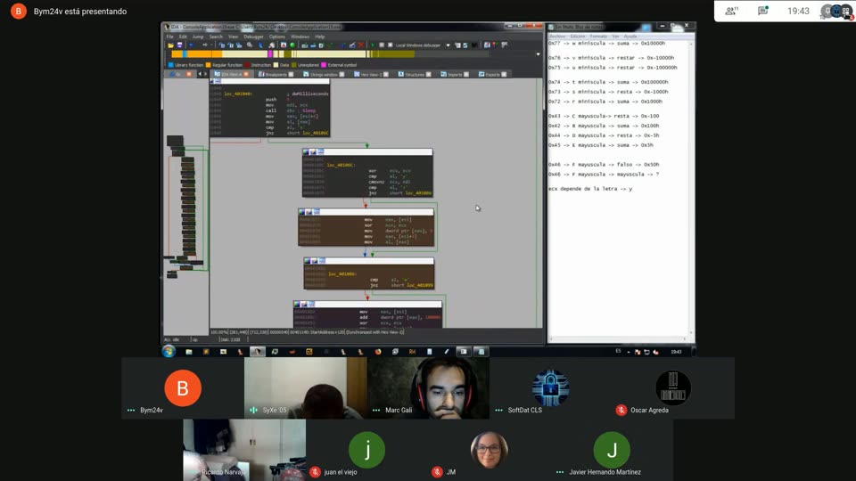
Lo de... Exacto. Vale, y la... Bueno, yo creo que no había hecho era la X. Pero bueno, la X simplemente... La X, si es X, decrementa el contador en 1. Bim. Y vuelve a iterar. Vale, eso es cosa aparte. Eso no hace falta en la tabla. Así que... Arregando. Bueno, la Z, hemos dicho que lo resetea. La Z lo pone a 0. Vale, eso... Como lo he puesto aquí. Y luego, importante... Cada vez que se modifica el contador, ese X se hace 0. Que se valora al final del ciclo. Y se modifica el contador en función de ese valor también. Luego también infiere. Yo me estoy haciendo un flowchart. No sé si se ve. Sí, sí, sí. Hostia, ya te digo. ¿Eh? ¿Qué te digo? ¿Qué te digo? Es lo suyo. Sí, yo siempre me lo hago a mano. Siempre me hago al lado. Ta, ta, ta, ta, ta, ta, ta, ta. Como una... Claro, es casi mola. Es que así el nivel de compresión de las cosas es brutal. Claro, luego le pego un vistazo al folio y enseguida lo veo. Vale. Es que conforme lo vas escribiendo te van surgiendo cosas y es que la mente se... ¡Pum! Exacto. Es que visualmente se ve mejor así, ¿sabes? Mira aquí y ¡pah! Y ya lo tienes en la cabeza. Claro. Vale, perfecto. Bueno, voy a copiarme esto otra vez. Hola, Juan. No, no, no, se ve que no tiene... Hola, hola, Juan, ¿qué tal? ¿Cómo va? Buenas, Juan. ¿Tienes micrófono? Ah, no, ha puesto el chat. Hola, familia. Sí, sí, pero no sé si tiene micrófono para hablar. Bueno, igual te saludamos desde acá. Claro. La P para salir. La P para salir. La P para salir. Ah, muy bien. La P para salir, dice Juan, ¿eh? Te manda el tip desde ahí, del chat. Muy bien. Sí, muy bien. La P para salir, fíjate. La W. Sí, pero eso debe estar... Por ahí está en el thread principal, hay que ver. No sé si está en este o en el otro, hay que ver. Sí, bueno, es que la P que dice... Bueno, la C... La P debe estar en el thread principal, no acá. Debe comparar y te sale directamente. Fíjate en la función principal, en el main. Debe leer también y debe fijarse ahí en el cálculo, no sé. Ahí debe estar la P por ahí. Cuando hace el getchar, ahí... Sí, por ahí debe estar. Aquí está la Q. Sí. Que es el bar 5. Ahí hace el getchar, ¿ves? El getchar es ese. Bueno, esto creo que le falta una... Coman, ¿no? Coman, ¿no? No sé, no sé un carajo. La Q, la Q, la Q te saca.
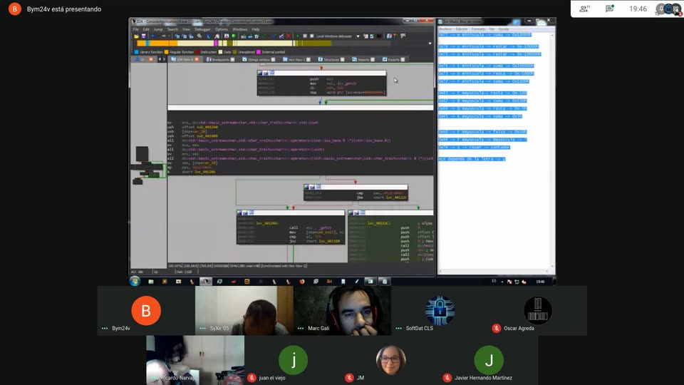
La Q, no la P, la Q. Sí, es la Q. La Q es... Acá está, el 71. Dice, el micrófono lo tengo que arreglar. Pero es la Q, no la P, la Q. Sí, es la Q. Está en 4012-0F. Bueno, aquí está la Q, el getriba, lo compara. 4012-0F y te sale para afuera directamente. 4012-0F. Esa es la Q, el comparar al con 71. Esa es la Q minúscula. 4012-0F. Es como quit. Esa es como quit. Claro. Lógica. Empezas por la C, ¿no? Empezamos por... Bueno, voy escribiendo de arriba abajo y ya está la primera... Claro. Dice que es la Q. 10.000. No pasa nada. 10.000. La V. La V le da... Serían restar... Menos 10.000. Menos 10.000. Menos 10.000. Luego la U. Sería... Menos 100.000. Y es X-0. Importante esto. Luego la T. La T. Hemos dicho que la T, la T, la T, la T hace... Más 100.000. Es sumatoria, sí. La T minúscula. Minúscula, sí. Hay que tener cuidado porque hay mayúscula y hay minúscula. Si digo la T, si digo una letra sin nada, es minúscula, es normal. Pues espérate, a lo mejor con la tabla tenemos un marrón. No sé si Python nos diferencia, pero no puedo poner dos claves con la misma letra. Bueno, le podemos poner otro prefijo y ya está. Creo que no puedo poner el índice de la tabla no puede tener la misma clave, la misma key, ¿no? La misma clave de valor. Hostia, pues el C sí que te deja, tío. A ver, el T, ahora la S. La S es menos 1000. Pero X menos 1000. La R. La R más 1000. La C mayúscula. Qué lindo que ver a la gente trabajar. Mola, ¿no? Una vez. Siempre trabajo yo. Bueno. Oli. Suma 100. Porque nos han dado una pena. Es una tarjetada, tío. Oli.
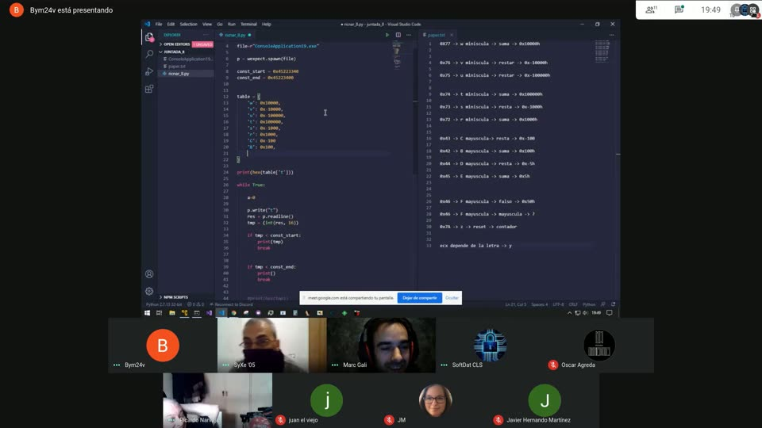
La D. La R es más 1000. Sí. Sí, la C menos 100. La C menos 100. La B más 100. Y la D menos 5. Y la E creo que era más 5. Sí. Va la B. La B mayúscula ya. Después de la R va la C. La C, la C. La C mayúscula. Ya vienen las mayúsculas aquí. ¿Qué pasa, Rignard? Toda la vez el área puesta, ¿no, Golfo? La verdad que el que hizo este es una... No quiero ni putearme. Así mí mismo me puteo. A ver. Porque la F... Ah, bueno. Si puso en la F, le añade 50. O sea, le añade 50, pero no iba a retarle 50. Bueno, no pasa nada. Bueno. Entonces sería... Ahora la D. Sería la F. La F. La D. Sería la D menos 5. Después de la D. La E. La E, la E, la E, la E. La E es simple. También hay que ver que no pasar ninguna de las teclas conocidas incrementa uno. También eso importa. O sea, si vos no pasas ninguna de esas teclas, va a link a X. Por hecho, lo que le estaba diciendo es... Cuidado con SX, porque SX se lleva la respuesta de tecla conocida. ¿Correcto? Y la testea aquí, justo donde estoy yo ahora mi flowchart venida. Te lo voy a decir ahora mismo donde la testea. A ver si lo veo. Si no hay ninguna de las teclas, va pasando por encima, por encima, por encima. En 40, 11, 55. 40, 11, 55 testea. Al final incrementa SX. Incrementa uno. En vez de sumar cosas, incrementa uno. Y hace un MOV TX1 también aquí, en 40, 10, 51. ¿Lo ves?
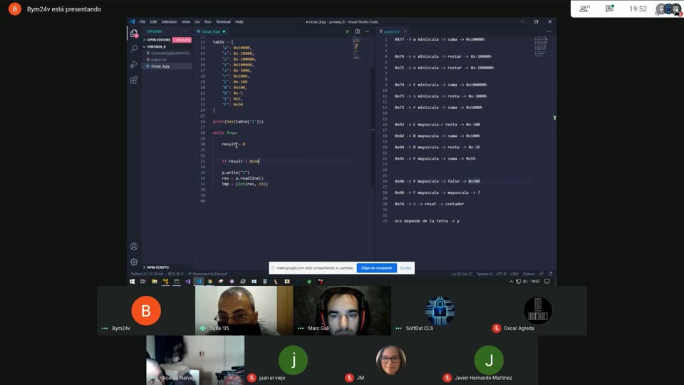
Es cuando pulsas al principio la letra X. Cuando pulsa la X, pone SX1. Hace una asignación directa. Hace MOV TX1, DKEAX. Y pone el contador a uno directamente. Porque hace MOV TX1, DKEAX. Y TX1, DKEAX1, DKEAX1. Pero ese en sí no incrementa el valor de la sumatoria. Lo que hace es incrementar SX1. No, no lo incrementa. Lo asigna. Lo asigna directamente a uno. Sí, sí, sí. No lo incrementa el valor que estamos sumando al LUX. Al valor de LUX. Que le da sumatoria de todo, ¿no? Que va a incrementar. Digamos, la sumatoria de todo lo que se va incrementando. Ese no suma. Simplemente lo que hace es... O SX1 es como un flag. Que lo que hace es o incrementar o decrementar. Si es uno, decrementa. Si es cero, incrementa. Es que es como la dirección. Sí. Es como el flag de la dirección. Sí. Porque LX es así. Vale. Vale. ¿Qué más? ¿Qué más? ¿Qué más? ¿Qué más? ¿Y es F? ¿Y es F? ¿Y es F es 50? Estamos en F50. ¿Vale? Vamos, vamos, vamos, vamos. Si no es F. Ah, sí. Incrementa. Sí, sí. Incrementa a X. Y después lo que vive en el contenido... Incrementa, sí, el valor. En 40, 10, 59. Ahí incrementa. Exactamente. Eso es lo que te iba a decir. Pero más que incrementa, asigna directamente, ¿no? Bueno, pero antes lo incrementó. Porque fíjate que viene... EAX viene de INCREAX o DEX. O DEX según el valor de SX. Exactamente. SX es un flag. Es un flag que se lleva... SX se lleva la respuesta de si has pulso una tecla conocida o no. Por eso. Pero aparte te da la dirección. O sea, si incrementa o decrementa. O sea, si no le pones nada, decrementa. Viene por acá, decrementa. Puede decrementar o decrementar según lo que... Según lo que... Lo que te pies. Exacto. Exacto. Ahí incrementa o decrementa. Exacto. Listo. No digo más nada. No, no, no. Sí, sí, sí. No pasa nada. No, no, no. Ya está. Ya está. Yo digo la semana que viene. Esta semana es lo que no te... ¡Qué cabrón! Y luego hace comp by pointer Eax con la A mayúscula. 40, 10, 5, E. Y uno chico. Si no es la A mayúscula, se vuelve para arriba del ciclo. Si es A mayúscula, pop, pop y salimos. O sea, con una A mayúscula... Bye, bye. Ya me da cuenta. Ya me da cuenta, Juan el viejo, que... Que el sismo lo ha ido adelante, pero...
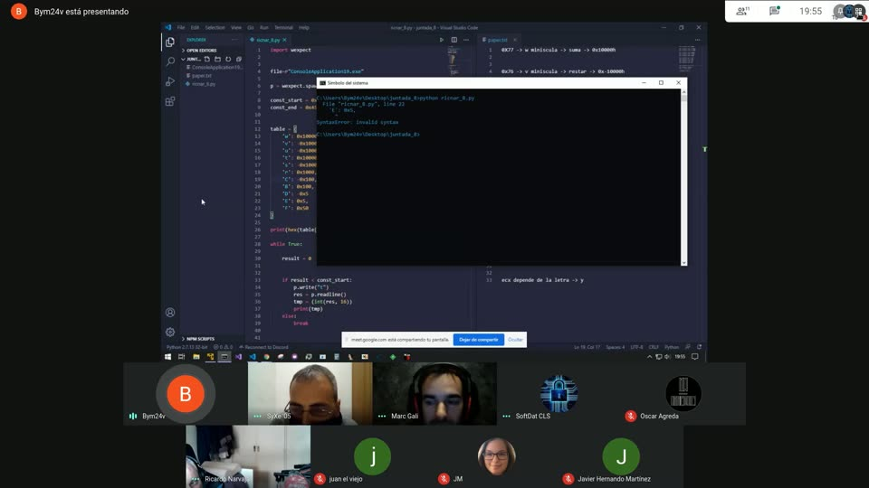
A ver, me da otro error. Aquí. Yo creo que con la A sales, ¿no? Aquí. 21, no es 0. Si no es A, sales. Y luego la última es la A. La A es la de salida. Sí, exit. No. Vuelve a iterar. Bueno, esto está claro ya, ¿vale? Yo ya tengo el diagrama y ya está. Ya lo tenemos. Perfecto. Pues da falta el código. A ver. No tengo que sumar. No tengo que sumarlo. Lo tengo que nada más que sea igual. Ya está. A ver, un momento. Me estoy chaburreando todo esto, pero... Mientras que sea menor, me lo va a estar mostrando. Bueno, debería. Pero se ve que no lo estoy casando bien. ¿Se pasó? Sí, sí. Va muy rápido. Claro, es que tengo que hacer... Es que aquí no está el SwissK. Si tuviera el SwissK, puedo... También, pero bueno, habrá que hacerlo con IF. Con IF. IF, el shift, el shift. Esto está bien. 45, 22, 33, 40. 45, 22, 33, 40. 45, 22, 34, 0, 0. 34, 0, 0. Claro, Rasú siempre va a ser 0 aquí. Vale, André ha sacado un hilo con el Start Address, la función esta que estamos haciendo nosotros. Se queda a la espera de la pulsación de tecla. Vale, André, y aquí está el límite, el límite inferior. Vale, ya lo he visto. Claro, es que se pasó porque, fíjate, me ha parado en 45, donde tengo que entrar en 45, 22. Y aquí ya, de tirón, ya me marcó 45, 30, ¿sabes?
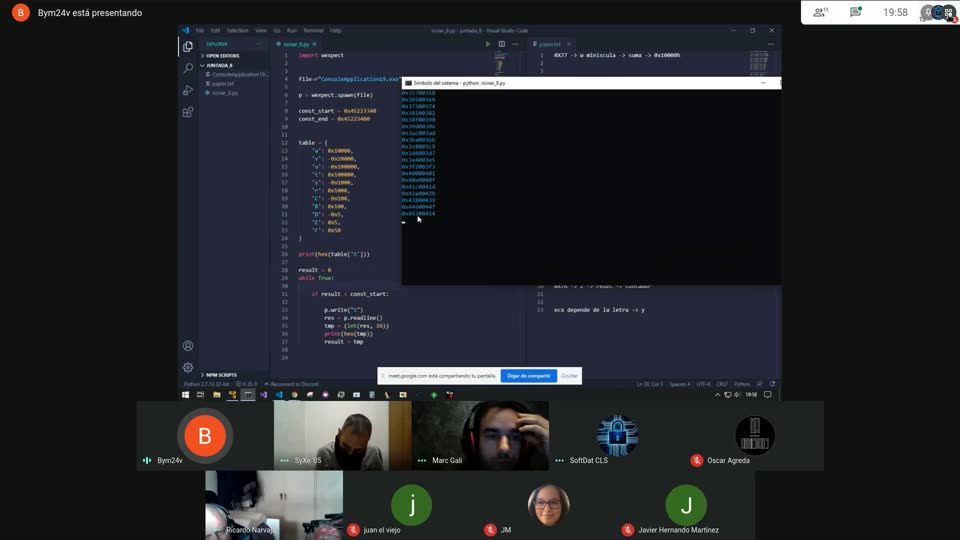
El último que paró. Vale, entonces, mira, cuando estemos en este caso, este es el primer do-wire, ¿vale? Do-wire. ¿Qué has hecho? El código que has mostrado, este es el primer do-wire. Mira, te enseño aquí el código. ¿Lo veis aquí? A ver. No sé si puedes. Este. Se ve, bueno, o sea, bueno, muestra tu pantalla, puede mostrar tu pantalla. Bueno, es igual, da igual, te lo digo. Mira, aquí estamos dentro del do-wire primero. Cuando pasamos el límite superior, lo atravesamos, es decir, nos salimos de la ventana, tenemos que volver para atrás. ¿Cuánto tenemos que volver para atrás? El valor actual lo restamos al límite superior y nos da un valor. Y entramos en el switch case con la tecla más cercana a ese valor, para caer dentro de la ventana de la siguiente asignación. No sé si me he explicado. Sí, sí, claro, a ver, donde tenemos que entrar es 45, 22, 33, 40. Y mi última iteración me dio 45, 30, 0, 4, 54. Habría que restárselo para saber la diferencia. Restamos los valores correctos. Y buscamos la tecla que nos dé el valor. Sí, podemos quitarle, yo qué sé, 100 o algo así. Vale, pues buscamos un menos 100, que es la C. Pulsamos C. Pero como sabemos que vamos a iterar y B va a seguir sumando, pues le damos un poquito más. Claro. Le damos menos 1000, le damos la S. Lo que puedo saber aquí también es poner un contador. Por ejemplo, me hace falta dos CTs para sumar esto. Luego una A, una B y... Para ir controlando un poco mejor eso, ¿no? A ver. Aquí vamos a poner... Por ejemplo, lo aumento uno. Una pregunta. ¿Cuánto le suma cada vez normalmente? Si yo no hago nada, ¿cuánto le suma cada vez? Uno. Y depende de la última tecla, porque la tecla queda presionada hasta que vos apretas una nueva. Claro, depende de la tecla, Javi. Yo tenía pensado, o sea, no sé si tal, que cuando el expert me devolviera 4500 o esté a punto de llegar, pulsar una tecla para que en vez de avanzar 1000, avance 100. Cuando llegue otra cifra, eso está bien, eso está bien, y si se pasa, restarle 1000. Claro, esa es la idea. Pero lo que sí vos exactamente no sabés cuánto suma cada tecla, porque depende de la velocidad de la máquina. El 3 anda solo y si vos le mandas 100.000, por ahí, hasta la próxima tecla te va a aumentar. Mira, la mía ahora me ha sumado otra cosa diferente, porque se ve que la máquina también varía su velocidad. ¿Te lo has visto? Es que hay que hacerlo dinámico. Mira, ahora me ha dado otro valor. ¿Sabes por qué? Porque he puesto un print que no tenía que poner en Python, entonces el proceso ha tardado más, y me ha dado otro valor diferente. Exacto. O sea, han sido 82 iteraciones para que me dé 45.090.04.
Sí, pero BIM, el... No, pero en el programa va contando, le suma, pero también le... Sí, pero como cuenta la velocidad de la máquina, si mi máquina se ralentiza, le cuesta más. Le cuesta más trabajo. Sí, pero si, por ejemplo, una vez que se pasa, o sea, una vez que se está acercando, que se le pulsa una tecla para que sube menos. Exactamente, eso es lo que quiero conseguir. Yo ahora sé que va a llegar a un valor redondeado, en vez de 82 ya me paso, 41 no he llegado. O sea, yo ahora podría, en vez de poner la T, podría poner, por ejemplo, la C. No, la C no, la B, que son 100. Y así, así, así, así, hasta llegar. Y entonces sé, sé, sé, 81 T... Lo que él quiere decir más o menos es que, por ejemplo, si vos tenés que llegar a 45.000. Entonces, por ejemplo, cuando llegás a 40 millones, tenés en vez de 45, cuando llegás a 40 o a 35, ponele un poco antes, empezás a cambiar por una tecla más chica, que vaya de... Exactamente. Exacto. Para no ir tan rápido. Y después, cuando llegás a 40, por otra más, entonces vas como más gradual, ¿viste? No, así están a los brutos. Claro, lo que ha dicho Hernán, por ejemplo, sería el 82. Al 82 son 45.090, eso habría que restárselo al valor que queremos entrar, entonces, saber la diferencia, para saber lo que tenemos que restarle. Si son tres cifras, dos cifras, una cifra, saber la cifra, que tenemos que restarle al valor. Correcto, correcto. Ya, este es el resto de la hostia, ¿eh? Sí, está guapo. Pero hay una cosa, en la table, la W y la V, vale lo mismo, ¿no? Aquí, ah, no, vale, uno negativo, correcto, está bien, está perfecto. Vale, mira, tenemos dos aproximaciones, o una híbrida, la que ha dicho Javi, creo que ha sido, nosotros nos vamos acercando con la T, ¿vale? Imagínate que nos vamos acercando con la T, tac, tac, tac, tac. Y chequeas el resultado, según el resultado. El valor actual, el valor actual es el que se printea, el que se escribe en pantalla, ¿vale? Cuando digamos valor actual es este. Tomamos el valor actual y cuando estemos lo suficientemente cerca, cambiamos de tecla la T por la inferior, que sería, en vez de 100.000, la de 10.000. Que sería... Claro, eso es lo que quería, lo que estaba haciendo con esto era eso. La W, cambiamos de la T a la W, tac, tac, tac, tac, ¿vale? Y así lo mismo, cuando nos acerquemos, todavía más, le bajamos un poco el pistón. Eso, ¿eh? Y bajamos a la siguiente, que sería la de 1.000, que sería la R. Si nos pasamos, buscamos la diferencia, restamos la diferencia y tiramos para atrás con la tecla que nos corresponda. Eso sería, aproximación a la entrada y freno a la salida. Paracaídas, como un paracaídas, ¿sabes con el paracaídas? Vas... Sí, sí, claro. Tienes que ir contrarrestando para llegar al objetivo. Exactamente. Esa para mí es la mejor manera que hay. Porque ajustas al entrar y tienes el freno más cerca, que ir restando las T que te puedes ir dejo. Y si nos pasamos, le podemos restar de sobra. Claro, porque vas con una R y la R te suma 1.000, te suma poquito. No te sumas 100.000 como la T, ¿entiendes? Tienes tiempo. Hay que ir ajustando en este programa. La forma de calcular el 45.000, podremos estar comparando, bueno, se puede hacer máscara, se puede hacer cosas raras también.
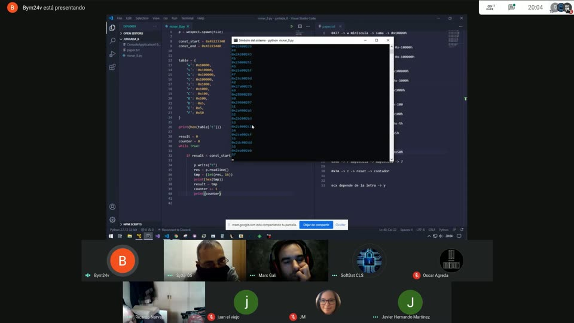
Bueno, las máscaras se le da lo más eficiente. Mira, ahora me ha dado otra cosa diferente. Para llegar cerca del valor que quiero, son 82 iteraciones del Y. Sí, en tu máquina, pero la mía lo mejor no. Exactamente. Te conviene directamente comparar el valor que te devuelve. Sí, yo compararía el valor. Sí, es que mira, además estoy pensando que si comparamos el XPEX, funcionaría, solamente tenías que comparar 0x, que es 4, los primeros caracteres. Y una vez que encuentras esos primeros caracteres, cambias de tecla. Bueno, pero tampoco, porque puede ser que sean 460. A ver, lo podemos hacer por una máscara, que es lo más, quizás lo más... Bueno, a lo máscaras, como quieras. Con ant, haces un ant, con máscaras. Sí, bueno, pero a lo que me refiero es que con los Bits sería lo más sencillo, ¿no? Obviamente. Es lo más rápido, con Bits es lo más rápido. Claro. Está claro. Lo miro, pero no sé si se puede hacer con Bits. Yo me quedo prendido. A mí me parece que es más fácil hacer un Wild. Sí, Wild, el valor sea, cuando sea mayor que 40 millones, break y voy a otro Wild después con otra tecla y listo. Claro. O sea, hago un Wild con una tecla y cuando sea el valor mayor que tal, o sea, ese que chequea en el Wild es lo que me devuelve el drama. Sí, sí, claro. El drama. Comparado es mayor valor. Yo aquí ahora puedo... Claro, directamente en el Wild. Cuando termina el Wild, sigo con otro Wild abajo y listo. Claro, yo aquí puedo decir si el resultado es menor que 44.000 o 44.000, pues que haga esto para que vaya cambiando comando. Claro, si se la idea es saber en qué rango te encuentras para cambiar el comando. Es lo que está haciendo los SILF, esto de aquí. ¿Cómo se llama el programa que estás utilizando ahora? En el que escribes, el código. El VS Code, el Visual Studio Code. Visual Studio Code, ok. Lo que pasa es que tiene un tema puesto y los plugins y todas esas cosas. De la que instalas, ¿sabes? Está bien, aquí hay una ventanita que tiene un montón de... Sí, tío, ya lo veo, está guapo. Tiene debugger, tiene de todo. Qué puta madre. Ya me pongo las herramientas guapas, tío. ¿Dónde estoy? Ya que preguntes por herramientas, yo me acabo de instalar el Visual Community. A ver, claro, os lo digo. Visual Studio. Visual Studio, ¿no? Os lo digo cuál me acabo de... Tenía el Code y me acabo de instalar otro. Ahora os lo digo. El Wild Tools. Visual... No, el Visual Studio. Espera, os lo digo, os lo digo. Sí, el Visual Studio trae Python también, ahora. Sí, sí, antes no lo podía instalar, claro. Había módulos que lo podía instalar. Pero siempre, no sé, siempre... Las mierdas son las versiones, tío. Es que luego empiezan a cambiar versiones, luego no hay compatibilidad, no sé qué. Luego siempre hay errores raros fuera ahí. Joder, siempre hay un poco de jaleo que es la hostia. Tenía este, tenía el Atom, varios, ¿no?
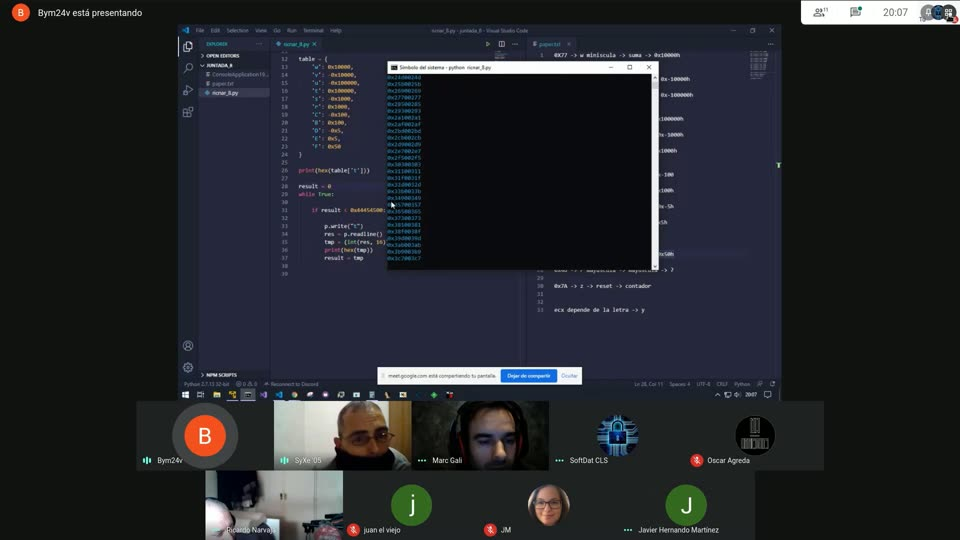
El Sublime Test, yo qué sé, el Picham. El Sublime Test lo tengo yo. Claro, entonces, pues, son los típicos, ¿no? Mira, no veas, aquí no veas ya sacar el número, que son los 44.550, que es lo que había puesto yo, si es menor o mayor. Como es menor, pues me lo muestran, me van pidiendo. O sea, ahora es menor. Creo que tendrías que parar antes, porque ahí estás muy cerca todavía, ya para cambiar. Sí. Tendrías que parar un poco antes, más abajo. Podemos parar cuando queramos, claro. Un 43.000 o... Sí, pero podemos poder... A ver, esto depende de cómo quieras, ¿no? Porque podéis ir sumando 5 o podéis ir sumando 10.000. O sea, podéis ir sumando como quieras. Claro. Lo suyo sería quedárselo más cerca, ¿no? A ver. Si es por la derecha, sí, por la izquierda, no. Ya, pero como a veces sabes tú que se interpreta, no hay ceros, no hay nada, pero claro, en este caso, ¿cómo sabes que son 45 millones? Obviamente no lo vas a ver. Pero, es que... Déjenlo hablar, que quiere hablar el muchacho. Sí, sí, hable. No, si no, de nuevo, no sé muy bien. Un poco... Lo que pasa es que estaba mirando que el... ¿Dónde recibe la pregunta lo que devuelve el WP-Spet? ¿En qué variable? ¿Dónde saca el valor, no? En el res. En el red line. En el red line, lo que devuelve el red line. Lo que pasa es que se está casteando para que, bueno, pues ya pasa a ver lo que... Pero bueno, si hay aquí el P, lo que pasa es que esto es un ejemplo, Ricardo, que esto podría ser el proceso, o sea... El res. El res lo pasa, lo que pasa es que lo pasa de hexadecimal para imprimirlo bien en hexadecimal y todo eso. Pero es eso, el red line te devuelve lo que escribe en la consola. La pantalla, pero eso es un string, si no me equivoco, que el Px... Sí, pero después... Sí, es un string, pero aquí con el casteo del i lo hace con base 16, pero pasa a ese decimito. Vale. Y después lo vuelve a pasar string. Sí, luego lo que pasa es que lo vuelve a pasar aquí con el... Con el... Sí, porque para comparar es más fácil compararlo como número, ¿viste? Entonces, pues... A ver, el leg es para imprimirlo, ¿no? Es para saber. Para saber. Ese bit. Yo en este caso... ¿Existe el do while aquí en Python? No. Existe el while. While. Pues yo lo haría con un while. Sí, sí, hay un while. Hay un while. Lo haría con un while, ¿por qué? Porque no sabemos el número de literaciones, es desconocido. Claro, es que... Vamos en el valor. Prácticamente todo es desconocido. Sea inferior a 45.000, vamos sumando una letra, o 40.000. Cuando ya llegamos a pasar 40.000, le restamos una letra más pequeñita, en otro buclecito.
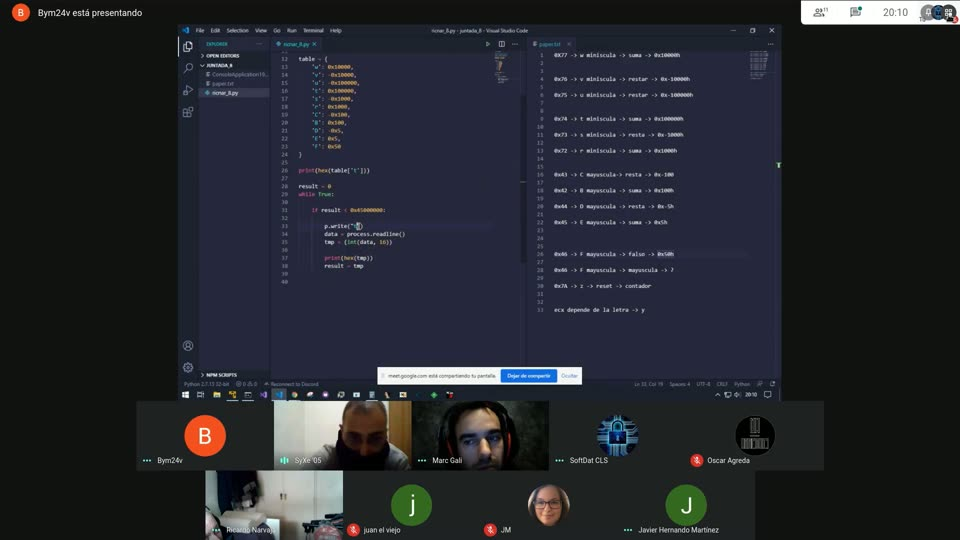
Y así, más chiquititos cada vez, hasta que nos acerquemos al límite. ¿Sabes? Casi, casi, casi, casi está diciendo lo mismo que lo hice yo. Mira, casi. La misma forma estamos pensando. Es que lo que yo pienso es la aproximación que veo yo más... Sí, no, es que hay que ir así. Realmente nosotros lo que queremos es esto. Bueno, en vez de hacer un while true, ¿eh? Hacerlo directamente con el valor, ¿sabes, BIM? Ah, aquí. Claro, while result. While result. While result. Result. No, while result. Result, claro. No, si result es menor que 40 millones, por ejemplo. Exactamente. While result. No, pero en vez de ponerle la exclamación, en el igual result, el nombre de la variable. Y lo de la izquierda yo lo quitaría. Entre el result y el while no tiene que haber nada. Es while result. Eso es. While result. Correcto. Menor o igual. Pero así no hay una condición. Sí, es una condición. No, la condición va luego. Claro, tienes que poner que la condición sea... No, el result es inferior. A 0 por 40 millones. O 40, 0, 0, 0, 0, 0, 0. Exactamente. Result es igual a process red line. Dentro del while. Exactamente. Eso lo borro todo. Yo dejaría del while result inferior a 40.000. La línea 29. Exacto. Esa es correcta. Y ahora dentro, en la línea 30, la 31, 32, eso lo borraría todo. Vale. Y en la 31 pondría result es igual a process red line. Igual, no, igual, igual. Red line, sí. En vez de una comparación, de asignación con un solo igual. Exacto. Y ahora el doble igual solo es uno. En la línea 31. Porque ahí está comparando. Exacto. Ahí lo que estamos diciendo. Asígnale a la variable result el resultado de process red line. Pero antes tiene que mandarle a 400.000. Pero tiene que mandarle la tecla. Ahí vale el end while ya. Tiene que mandarle antes la tecla. Exactamente. Eso se manda fuera del while, arriba, donde result. Y ahí cierra el while ya. Cierra el while ya lo cerramos. Tienes que mandarle la tecla repetida para que repita. No fuera el while, adentro el while. Tienes que mandarle siempre como que va repitiendo, repitiendo, repitiendo. Si no, no te devuelve el resultado, no te lo imprime en la pantalla. Sí, sí, sí. No, claro. Pegroid, claro. Process right, exacto. También, también. Exactamente. Exacto. Ah, eso es. Es decir. Eso es lo que estaba haciendo aquí, ¿no es? Es menor a 45 millones, imprime la T. Sí, sí, lo estás haciendo igual. Pero en vez de con if, con while, que es más óptimo. Entonces, cuando estemos en 40.000, salimos de ese bucle y hacemos process right, la más chiquitita, que era la R, creo, ¿no?
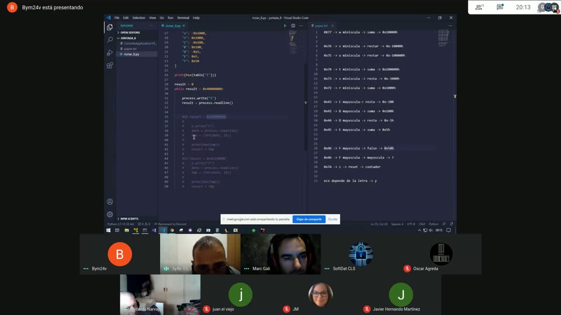
¿Cuál era la más siguiente? Pero que la lean, la de... Tiene de 10.000, de 100 y de 5. La más pequeña es la E. No, la más pequeña no, la siguiente inferior. 10.000, sería la V. Pues le pasamos la V ya. No, la V no. La V es negativo. Sería la W. Pues esa. Ahora, repetimos el bucle, pero con la W. Perdón, ¿era process o era peer right? Porque arriba no me sé cómo era el spawn. No, pero lo cambié yo, lo cambié yo. Ah, lo cambié. Ah, listo. Vale, espérate una cosa. S-Wile, ciérralo. Ya acabamos S-Wile. Ahora, en otro Wile distinto, ¿eh? Pero como un Prea. Bueno, sale solo. Sale solo. Sale solo porque se cumple la condición. Poné un print para ver hasta dónde llega. A ver dónde te deja eso. Sí, pero fuera del Wile el print. Pero el Wile, fuera del Wile, ¿eh? Que no printe todo el rato. No, no, al salir, al salir. A ver hasta dónde llegó. Exactamente. Cierra el Wile ese. Ya se acaba el Wile ese. Exactamente, ahí, fuera del pin. Y así sabemos dónde estamos. ¿Sí? Entonces, lo ideal, ahora, lo ideal sería saber dónde está. Exactamente. Tíralo así primero, tíralo así sin más, a ver hasta dónde llega. Exactamente, tíralo así, a ver hasta dónde llegamos. Sacalo igual de abajo. Ah, que lo tire, lo tire y vale que lo corra, ¿no? Claro, a ver hasta dónde llega. ¿Qué pasó? No, support in between, string and in. Tienes que pasarlo a int. Tienes que hacer el int entre result, ¿sabes? Hace un casting en el Wile. Claro, porque result es un, tienes que hacer el int. Exactamente. Tienes que hacer un casting. No lo puedo hacer. Como estaba en el original, fíjate cómo estaba en el original. El process line no lo puedo hacer. Eso, ahí, eso, eso, eso. Eso es, bien, muy bien. Eso es, coleguita, muy bien, compañero. Eso es, eso es, eso es. Perfecto. Perfecto. Invalidating tax. Falta un paréntesis. Sí. Exacto. Son tres de abertura, tres de cierre. El castelo. Correcto, muy bien. Ahí estamos. El tema es que no te va a imprimir nada hasta que salga. Claro, está, está lopeando, está lopeando. Está lopeando. Sí, el valor este es la arriba que no tiene nada que ver. Exacto, sí, estamos en el white, ahí, míralo. Estamos en 40, 200, 403. Pues ahora ahí atacamos, copia, copy, paste del white result y solamente cambia el write T por white R. Write R. Está cerca, está bastante cerca. Está súper cerca. Y le pasas la R, en vez de la T la R. Y vuelves a hacer un printex resulta, a ver dónde nos hemos quedado.
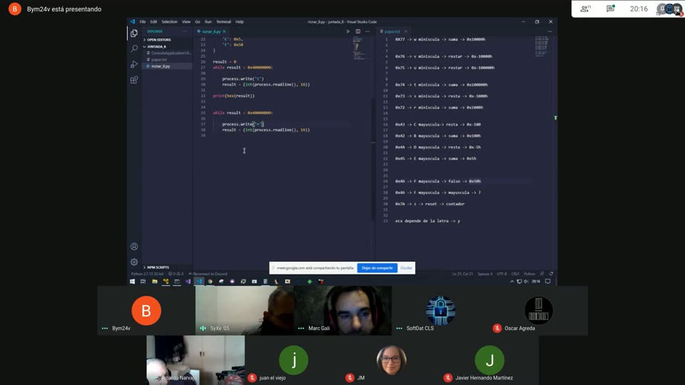
Pero ahora no tiene que ser menos que 40 millones, debe ser mayor, ¿no? Exactamente, pero ahora, pues a 44.000, a 45.000, ¿vale? Sí, por ahí, por ahí, estamos cerca. Que no te tiempo de hacer cambios al más chiquito, ¿sabes? Claro, 45 es lo más cercano, no es donde tenemos que ir. Vale, yo me lo dejé a 44 y todo, pero bueno, no está mal. ¿Dónde tenemos que ir? Nos ha faltado hacer el print, nos queda hacer el último print para que nos suelte. Falta el print para saber a dónde termina. Sí, para saber dónde nos ha dejado. La verdad, sí. La línea 32, copiala y pegala a la 40. Eso es, ahí. Exacto, eso es. Perfecto, ahora sí. Ahí estás. Ahora te da unos segunditos y a ver dónde nos deja. Nos va a dejar a la entrada ya de la ventana. Que quede un salto con una variable, entramos dentro. Es como un centro en área y remate. Claro. Buena comparación. No, ahí, ¿sabes cuál es el problema ahí? Me parece. Es el primero, esa es la primera. Hasta hasta los 40 millones. Es el primero. Debería salir los 45 millones. Sí, tiene que estar en 45 en la ventana adentro, casi. Ojo que este va a tardar más, porque este viene sumando despacito. Claro, va a sumar de 100.000 en 100.000. Por eso yo quería acercarlo más, porque... Sí, nos podríamos hacer cerca de 43.000. Claro, va a que no tarde tanto. Sí, sí, tiene razón, ¿eh? Tiene razón. Ojo que no se pase, porque por ahí hay que pasar. Es que ese es el problema, que no quiero que pegue un salto y en el primer sprint estemos en 46.000. Sí, ya, ya estamos muertos ahí. Teníamos que restar. Eso habría que controlarlo también. Ahí para atrás, ¿sabes? Viene gradualmente con distintos valores que se vayan aproximando gradualmente. Claro, esto porque lo estamos haciendo a lo rápido aquí, pero para ser más afinado tenemos que controlar eso. Se podría hacer un case, ¿no? En vez de 5 bytes. Es lo que yo he dicho, pero dicen que no existe el switch case aquí. No, el Python no existe. Mira, mira, mira, 45.00.550. Estamos bien, estamos dentro del rango. No, no, es 45.22.34. Ya, pero que estamos dentro, pero bueno. Hay que cambiar la tecla, ¿no? No, no estamos dentro, BIM. Es 45.22 para estar dentro. Bueno, estamos dentro, pero me quiero referir que ha encontrado los 45 millones. Pues ahora hacemos un while, lo mismo, copia la 35 o la 41 incluidas, correcto. Y eso se copia, se pega y cambiamos el write-R por write, el de 1000. Hay otra gente que hizo un solo while y adentro hizo directamente. El de 1000. Sí, también. Espérate, espérate, es que lo habíamos hecho mal. Mira, antes le hemos puesto la R, que son 1000, pero lo que hemos puesto la W, que son 10.000. Ah, claro. Vamos a poner aquí la W. Y abajo la R. Y abajo la R, sí. Claro. Pero aquí, 45 millones, ¿qué más? 22.000. 20.000. 45.2.
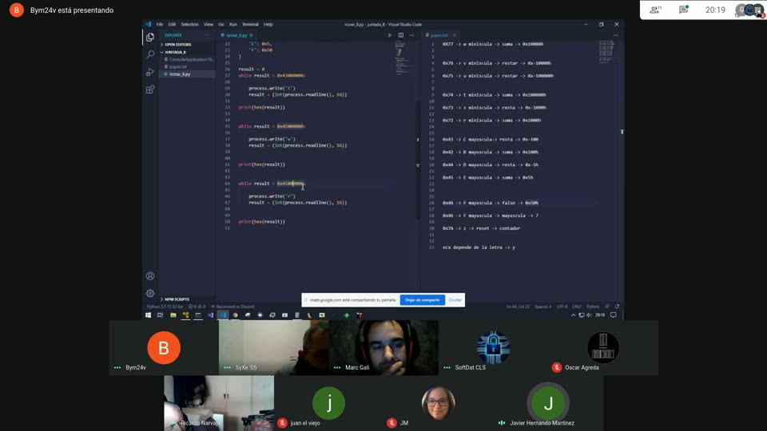
Hay muchas formas de solucionarlo. Una es esta, la otra es hacer un solo while y adentro de las distintas opciones, según... Lo ideal, en verdad, para mi opinión, yo hubiera hecho un solo while, que es más limpio, es más... Claro, pero para aprender, porque como estamos practicando entre amigos, esto está bien. Claro, no, pero muchas veces lo que te lleva a esto es warrear todo lo que quieras ir más, comprender las cosas y cuando las comprendas tú se las optimiza. Luego he dejado un código que es... Optimizado. Mira, no hemos pasado. 25.28 estamos, ¿no? Pues nos hemos pasado, compañero, ¿ves? Hay que parar antes de 45.20. En 45.10, exactamente. O 45.05, va a ser más... ¿sabes? Piensa que luego tenemos saltos grandes, con variables. Esa va a caer cerca, ya lo verás. Se conectó Erick. Hola, Erick. Ay, nos hemos pasado. Nos hemos pasado la segunda FIFA. Sí, pero fíjate, la primera ya la habíamos pasado. Por eso te digo que hay que parar un poquito antes. Hay que achicar la primera, hay que bajar un poquito la primera. Pero ¿sabes dónde nos hemos pasado? El segundo while, en vez de ir a 45.000, tenemos que ir a 44.500. En la línea 35. Porque ahí no vamos a pasar muchas veces. Exacto, exacto. O sea, la forma de hacerlo así es la forma divertida. La otra es hacerlo tipo inteligencia artificial que tomo todas las decisiones y haga todo automático. Claro, es que eso... Eso ya requiere un poco más de tiempo y hacerlo, pero también se puede. O sea, que el tipo vaya tomando las decisiones. Si quieres, lo hacemos de la otra manera luego. No, no, es más divertido así. A ver, con los organismos genéticos se comportan en eso, en buscar la eficiencia y la forma de optimizar las cosas. Todo un algoritmo genético bien construido. Lo estamos haciendo así entre nosotros. O hay librerías como Tres on Flow, Kera, hay un montón de librerías. Pero que, bueno, la inteligencia artificial al final... Así, así van a llegar. Así van a llegar. Sí, sí, no, claro. Al final... Es divertido, es divertido. Lo vas afinando y lo vas ajustando. Claro. Después cada uno lo optimiza como quiere, hace la librería que quiere. Sí. Pero sí, es cierto que existe la posibilidad de hacer como si fuera un robot. Que el tipo reaccione según distintas cosas. Según, ah, hizo tal cosa, hace tal otra. Y sea todo como una especie de inteligencia artificial. A mí me gustaría hacer ese. Y bueno, pero después tenés tiempo de hacer. Mira, el primero parón, 43 millones, 44 millones el segundo. Ahora estamos cerca. Ahora está cerca. Ahora no se ha pasado. 45,05. Vale, y tenemos que ir a 45,22, ¿no? Sí, sí. Vale. Perfecto. Ya mira el saltito tan chiquito que hizo, ¿eh?
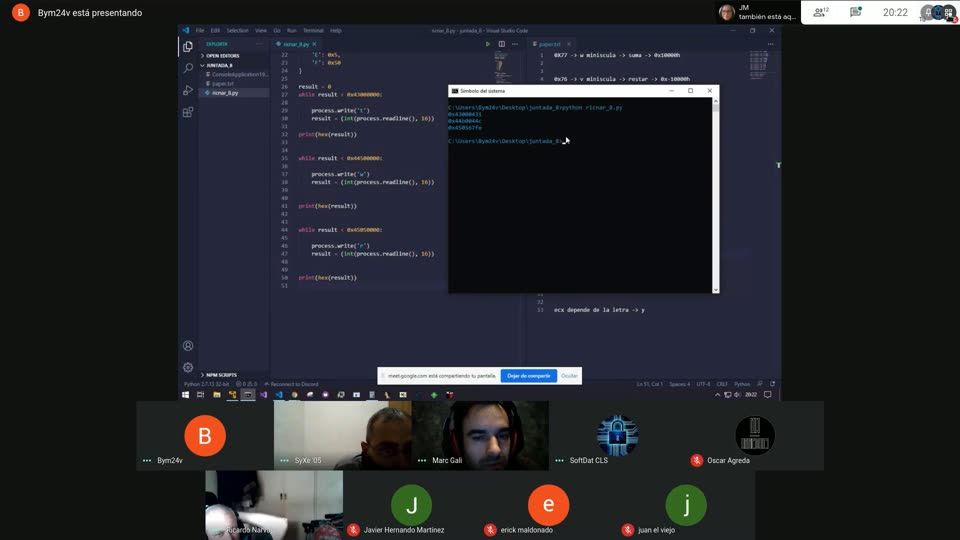
El 67 FE, ¿eh? Solo. Chiquitito. Vale, pues desde ahí nos pegamos un salto a la ventana. ¿Tenemos alguno que llegue ya? ¿Alguna variable que entre? Y tenés que ir despacito ahí porque si no te vas a pasar. Claro. Tenés que ir despacito. Aunque tarde un poco más. Sí, yo le pasaría las Cs, que son 100. Claro, la C minúscula, ¿no? Sí. No, mayúscula. La C minúscula. La C mayúscula, perdona. Sí, pero la C mayúscula a mí me sale que resta 100. Ah, sí, sí, sí. Es verdad, es verdad. Resta 100. Será B mayúscula. La B, la B, suma 100. La B, perdona. B de Barcelona mayúscula, esa. Esa suma 100. Ojo, ojo una cosa, les digo, ¿no? Que el rango, el rango, el rango ese que en el cual estamos nosotros, el ancho del arco vendría a ser, creo que era C0, S-B-X-C0. Eso quiere decir que si llegas al lugar con 100, es difícil que invoques el gol. Porque el arco es más chico que lo que estás pasando. Va a haber un momento que vas a tener que pasarle 5 o poquito. Pues pásale 5 ya, pásale 5, que estamos muy cerca. Lo que pasa es que va a tardar un montón. Vale, pues no pasa nada, a cámara lenta remataremos. Pero vamos a meter el gol. Pásale 5. Fíjate, faltan 15.000, un poco más, pero va a llegar. Vale, pues aproxímate con C, con la B, con la B, va bien. Pero aproxímate a 45-20. En 45-20 ya vamos a remate, chicos. Ahí. Y printeo y a ver qué nos da. No van a decir que no es divertido. Sí, sí, ya que sí es. Está guapísimo. Pues no da que hablar esto y ni nada. Uf. Da mucho que hablar. Esto es uno solo, si no tiene conocimiento y tal, al final me voy a otra cosa. Abandona, claro. ¿Dónde está? ¿Qué? El 0-5 positivo. Entró Eric. Hola, Eric. Hola. Hola. ¿Qué tal, Eric? Buenas, Eric. ¿Qué tal? ¿Cómo es Eric? Tiene micrófono, pero no se le oye. Mira. No, somos 13 ya, ¿eh? Bueno, 13, no, menos 12. Mira, en la segunda parada, 45-20, 0-5-98. Vale, perfecto. Pues ahí vamos ya con las chiquititas. ¿Qué cerca? Las chiquititas son de la F, de 0-50. Sí, la F. Claro. O la E mayúscula, 0-5, como quieras. Si quieres ya ir ya directo con la chiquita, con la que tú quieras. A ver, lo que voy a hacer es, vamos a poner por las etapas que estamos. Si no, es un poco caótico. Pasar un poco las etapas que estamos. Vamos a poner... Vale. Está G1. Stage 2. Stage 3. Stage 4. Stage 5. Ahí está.
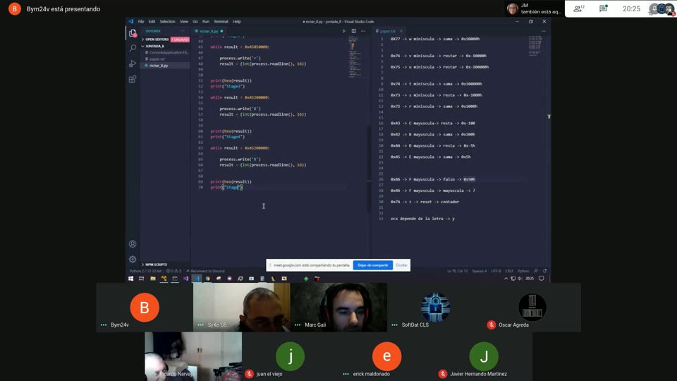
Yo originalmente lo hice así. Pero, eh, eh, eh, Bim, no hemos cambiado la condición. No hemos cambiado la condición del Wild Result. Sí, perdón. 54 y 63, la línea se repite, ¿no ves? Sí, ¿cómo decía Ricardo? ¿Qué decías? Yo originalmente lo hice así, primero. Me parece que para hacerlo como primera aproximación es lo más divertido. Después se puede uno buscar una cosa más perfeccionista y que sea más automática y algo así. Y que tome decisiones y cosas. Claro. Pero de esta forma uno lo va viendo de a poco. Que busque la locra al solo. Claro. Claro. Que se la haga solo todo. Que según el resultado todo va a ser las opciones. Exacto. Ese es lo más divertido, pero bueno. Por cierto, Bim, ¿tienes el instalador del Visual Studio Code ahí? No, no creo, pero... Mírate el Visual Studio Community. ¿Community? Claro. Sí. Visual Studio Community. Lo buscas en internet y este. Ok. Este es el enlace. ¿A verlo? Vamos a ponerlo aquí del tras. ¿Cuál es el Visual Studio? Está bueno porque... Con el enlace, llamas más, cuayos, saludos a papás y todo. Está bien, está bastante bueno. Lo que pasa es que está dentro de Electron y Electron utiliza el motor de... Javascript, Chrome. O sea, esto es un poco... Al final, en máquinas virtuales con pocos recursos se pone lenta, ¿eh? Se pone un poco... No, yo voy con la mía de física, directo. Requiere recursos y requiere bastante tal, pero va bien. La verdad es que va bien. Lo probaremos. Sí, ya te digo, está hecho dentro de Electron. También está bastante bien. Son aplicaciones que las puedes diseñar en... En Javascript y HTMLL, pero tiene una ventana. Tiene una ventana de... Chao, hasta luego, JM, que se tiene que ir. Hasta luego, chao. Hasta luego. Hasta luego. Gracias por venir. Lo bajas de ahí, ¿no? Perfecto. Sí, sí, Electron. Hay varios más. Hay varios frenos. Esos son unos frenos que están bastante bien. Y este está gratuitamente bajo eso. Es un poco pesado. Ya se me instaló y ya lo tengo para divertirme, ¿sabes? Mira, pues ahora se ha pasado. No sé si es porque tenía más cosas, pero se ha pasado. Mira, se ha pasado en el segundo, ¿eh? En el último. Y mira que le había puesto 45 millones con 20. Claro, por eso, tendríamos que poner ahí unos condicionales de que si nos hemos pasado, ir para atrás. ¿Sabes por qué se pasaron? ¿Sabes por qué se pasaron con respecto a la anterior? Por los prints de los stage. Eso hace perder más tiempo. Es verdad, es verdad, tío. Influye esa cosa. Es verdad. No, no, déjalo, déjalo, déjalo, déjalo, déjalo porque te sirven. Pero lo tenés que acomodar de vuelta a eso. O sea, los cálculos que habías hecho no tenían eso. Ahora tenés que acomodarlo un poquito. No es más, achicarle un poco. Sí, sí, sí, está claro. Porque si no...
En 45 es el otro. Se le va la castaña. Es que eso es lo que ralentiza la máquina. Ralentiza el proceso. El pipe, ¿no? El pipe es la tubería. Exacto. De cualquier manera, si es una máquina muy lenta, vas a tener que al final buscar la otra versión. Porque si no, te va a ser muy variable. Sí, es verdad. Tú hiciste la otra versión. Ahora, bueno, vamos a intentar con este y si vemos qué tal. Exacto. Hay que hacer la otra versión, sí o sí. Porque esta te va a ser muy variable. Se ha pasado por el 35 es 60. Se ha pasado en el segundo stage, ¿no? O en el tercero. Pero muchísimo. Donde respires, se te va a pasar, ¿viste? Exactamente. Pero muchísimo. Se ha pasado muchísimo. Se ha pasado en la línea de 54 y así me ha pasado, ¿eh? Una brutalidad. El otro, como suma de más lento, no se pasa tanto. Lo que vamos a hacer es que podemos ponerlo dentro del mismo Prince, ¿no? Eso lo reinteresará tanto, ¿o qué? Prince este... Ah, también, también. Ahí aprovecha la llamada, claro. Muy bien pensado. No sé, no sé, pero el cartelito del mensaje Vox no se ve. Qué maldito. Lo que yo no lo veo hasta ahora. No subió el gol al marcador aún, ¿no? Todavía no. Estamos en ello. Estamos 0 a 0, ¿va? Estamos en ello. Vamos a ver si esto resulta. Si no, habrá que sacar los Prince. Sí. Sí, así es. Aparte es que Python también es una máquina virtual. Ya, Python es lento. Cualquier cosita que le metes... La PVM, exacto. Claro. La máquina también. Exacto, interpreta el código, exacto. Bueno, luego lo compila con los P y C y utiliza el P y C, pero es código interpretable de igual. Sí, sí. Lo convierte a binario, sí. Yo también he estudiado. Correcto. Es que aparte, yo me he hecho un módulo que desde Python controla módulos de C++. Se repasó. Metía al intérprete de Python incorporado. Se repasó, se repasó, se repasó. Sí. Bueno, no, no, está bien, está bien. Ahora 45, 0, C, 0, C. Está bien, está bien. Está bien, vino bien, está bien. Está bien, está bien. Ahora vemos el mensajito. Ricardo, ahora marcamos. No, no, yo no veo nada. La B está subiendo 100, por eso tarda. En la etapa 4 está subiendo C, o sea, 100, que diga, y por eso tarda. Debería llevar 45, 20. Esta es la parte que hay que tomar más ateo, un cafecito o algo. Te vas a tomar un cafecito o algo. Este siempre, quieras o no, tiene una parte siempre lenta al final, porque si no se pasa. Si uno lo hace muy a lo bruto, no lo hace. Claro, claro. Claro, lo interesante de esto y lo raro de lo que te toca un poco es la máquina que se ejecute.
Exacto. Fíjate, se tiene que estar bien hostilizado el código y bien hecho para que funcione en cualquier máquina. Claro. Es difícil. No, por ejemplo... Ahí sí que tienes que pensar en restar ya. Lo hicieron, hay varios lo hicieron así en el estilo, así, inteligencia artificial. Lo hicieron un par. O sea, que van haciendo que reaccione y según lo que hace, resta, suma, va para arriba, para abajo. Entonces, siempre a la larga va a terminar. Claro. Siempre a la larga va a terminar. La función, los algoritmos genéticos serían ideales para esto, porque cada resultado... El valor va apuntando y va siempre sacando el valor. Mira, ahora ha quedado perfecto. Y vamos súper bien ahora, ¿eh? El estaje 4 ha quedado en 45, 20, que es más o menos lo que está señalado. Y vamos súper bien. Y el estaje 5 está en 45, 21. Y ha parado en 45, 21, 196. Perfecto. No se pasó mucho. No, no, está bien, está bien. Ahora viene lo más chiquitito que hay que darle despacito. Claro. El último. Ahora ya de poquito en poquito. Creo que si apretas una tecla cualquiera te alzoma uno. Una tecla que no sea ninguna de las que... Sí, correcto, correcto. Claro, también, claro, nosotros estamos basándolo en la tabla, pero exactamente... ¿Qué es lo que había dicho yo en lo del enter? ¿Qué es lo que había dicho yo antes en lo del enter? Si le da alguna vez al enter es como si fuera... Sí, sí. Es un viaje. Sí, es como si fuera, exactamente. Le podemos dar enter desde ahí. Pero claro, depende de lo lejos que estemos. Sí, no, vamos a ir sumando de 5 en 5. Como es ese rango o mayor, JB, o sea, es este rango o mayor de estos o menor que estos, o sea, sumando de 5 en 5 vamos a caer dentro, seguro. Es que la ventanita es chiquita, ¿eh? Mira que es pequeñita, ¿eh? Sí, la E. Sería la E mayúscula. Le voy a poner 45, 22. La mayúscula que es 0, 5. 30, 2. Pues ya pone ya dentro del rango, ¿no? Sí, sí, claro, si hay en 5 en 5, si no tarda esto la vida. 33, 30 o 33. Sí, sí, vamos a hacer 40 al final, pues vamos a poner 30. Exactamente. Quiero ver el cartelito, quiero ver el cartelito. Y de ahí vamos de a uno ya, cuando se saca de ahí vamos de a uno. Claro, luego de aquí ya vamos de a uno, ¿eh? Exactamente, para no pasarnos, ¿sabes? Quiero ver el cartelito. Claro, con las funciones artificiales y todo ese rollo, ¿sabes en qué letra tiene que optimizar o ponerla en cada momento exacto para ir lo más rápido posible? Para reducir el margen de error. Lo que va a ser siempre es reducir el margen de error. Pero ahí, o sea, esas funciones, yo creo que con un simple, lo intentamos luego, como habéis dicho antes, pero creo que con un simple case nos valdría, ¿no? Porque si serían cuatro líneas, ¿no? Es lo que estáis un poco diciendo, es que no entiendo. Sí, sí. Sí, básicamente, como ha dicho Ricardo, se puede hacer de muchas formas, muchas administraciones y muchas formas de...
Hay quien lo hizo. Y seguramente solo funcione esto que estamos haciendo, precisamente, solo funcione en mi máquina. Sí, exacto. Con una especie de case, aunque sean Python, ese case, un if, si es tal cosa, si es tal otro. O sea, y va tomando decisiones en el momento. Claro. Fíjate que nos hemos pasado otra vez. Sí, ¿no? Se ha vuelto loco ahí un momento y de repente, mira, las cuatro últimas estaciones, se ha vuelto loco y me ha tirado el mismo valor. Sí, necesitamos poner código que, mire, si nos hemos pasado, que vaya para atrás. Sí, ¿no ves? Ahora está bien, ¿no ves? En el tres ha parado y... Ahora sí. Y ahora es de aquí, pero el primero no sé qué ha pasado, que se ha vuelto un poco loco. Sí, se ha ido a Pernambuco, sí. Se embaló, se embaló. Se estampó. Se estrelló. Sí, sí. Lo que tiene que hacer si se embala es en el medio meterle una tecla entre las grandes, meterle una tecla chiquitita para que frene, ¿viste? Claro. En el medio de los guay. Claro, lo que, lo que sería, para ponerle uno, sería una tecla que no sea lente, porque ponerle lente, supongo, no sabemos qué tecla. Ah, puedes hacer, qué sé yo, la J, una tecla que va a ganar. Claro, cualquier letra, claro. Entonces, apretás ahí, en el medio de los guay, le metes una J y te frena ahí. Una L. Claro, cualquier vez que no esté en la tabla. Exacto. De esa forma te frena. Bueno, de cualquier manera, si lo hacen así o lo que sea, para el sábado que viene, alguien lo puede hacer. Con la forma de acá al sábado que viene, lo pueden pensar y hacerlo en la forma de los case, como dice ahí. Claro. Para no tener que estar haciéndolo hoy, ya está automático. Claro, aquí en Python, que yo sepa, no sé si habrá salido, los switch case no existen. Sí, pero puedes hacerlo con if. Sí, sí, claro, exactamente. Es que eso, esto se puede optimizar de muchas más formas y muchas más... Hombre, lo suelo es lo que hemos dicho, ¿no? Los algoritmos genéticos serían la hostia. Pero que sí, se puede hacer de cualquier manera, obviamente. Claro. Estamos a 45, 21, 0, 1, 55. Vamos bien. A ver. ¡Uy! Rosando la criolla. Sí, ahora lo que pasa es que va sumando de uno en uno. No, de cinco en cinco, que diga. Ahora va a tardar un poco. Ahora puede ser que sale el cartel. Ahora puede ser que sale el cartel. Y es que si no sale el cartel así, si no sale el cartel es porque ya, digamos, tenés que cambiar por el otro más lento, porque este quiere decir que ya es muy rápido, porque ni aun pasándole lo más lento te entra en el, digamos, en el arco. ¿Buscó lo del CISP? Entonces, lo acabo de escribir yo, lo buscaba lo de switch case. Y si que, bueno, lo acabo de buscar, estaba por aquí. ¿Cuándo estaba en el marco? En el margen de... Sí, hay una especie de hacer switch case en Paiso. Se puede hacer. Dale, dale. Entra en el link que he puesto. Yo lo estoy mirando ya también.
Yo lo estoy mirando también. Lo estoy mirando y yo encontré a un error. ¿Ya? Pues yo no sabía que existía. Bueno, antes no existía, ¿no? Creo. En realidad no existe, pero es una forma de hacerlo. Yo no sé. Claro, es que yo sepa que Python no tiene. Bueno, no sé. Pero se hace, digamos. No tiene, pero se hace con alguna línea. Ya, pero es que... A lo mejor la 2.7. Estamos en la versión 3, también. No, es que el link ha pasado, Javier. No, es que se ve aquí, claramente, el switch. Primero pensé que era Java. Bueno, además, de hecho, es que esto no es lenguaje. Lo ves. Buye, esta tipo hoy, esto es Java. Es Cesar, que diga o algo de eso. Porque... O Java. Lo que pasa es que Python es... Claro, eso me suena a Java. O Java. Ahí dice Python. Ahí dice Python. ¿Cómo simplemente? En Python sería así. Trae el argumento que sería buscar dentro de una tabla, que es lo que habíamos dicho. Sí, lo has hecho tú con la tabla y con la tabla pues llamarlo con un switch. Con el get. Con la librería, lo ha dicho Ricardo. Claro, es que yo te digo... Pero como tal... O hacer, claro, hacer funciones, que también sería. Y con el get, traerlo en el mapa. Una clase, así. Sí, el get, traer... Claro. Claro, en C++ sería más rápido, más óptimo. En C++ cambiaría todo, porque sería mucho más rápido, más óptimo. Claro. Y sí que tiene switches. En Python no existe, eh. Bueno, mira, eso va a ser el reto. Eso va a ser el reto de los demás que están en la llamada y quieren hacerlo. También. Que lo hagan en diferentes lenguajes y que aprendan a hacerlo en cualquier metodología. Exacto. Sí, porque en C es súper fácil, tío. Sí, ojo, en C es súper fácil. En C es súper fácil el switch, pero lo que hace el WSPECT en C, me parece que eso lo vas a tener que remar bastante. Conectarte por... Eso es medio duro. Bueno, en C++, conectarte así e interactuar con la respuesta de la... Ahí, eso te va a costar. Este es un código ahí que he encontrado, de mira cómo se implementa un switch con funciones. Sí, claro, la función 1 al 2 tiene dentro de un mapa. Claro. Con un objeto. Exacto. Y con un gueta. Terminó. Ha terminado, exactamente. Mira. Madre cita mía. Madre cita mía. ¿Qué? ¿No hemos visto o no? 45, 22, 33, 37. Antes. Terminó antes. Terminó antes y por nada, tío. Ya te digo. Hay que ponerlo un poco más para arriba. Hostia, ¿verdad, tío? ¿Y no podríamos haber seguido de uno en uno, tío? Sí. Sí. Pues ahí tenemos que pasarle la letra L, que no existe y va de uno en uno. Hubiéramos seguido. O sea, ¿qué pasa? Mira. Yo le he dicho que tardara el 30. No falla el penalti, tío. Mira, yo le he dicho que tardara en que terminara el 30, pero va a terminar el 37.
Hay un retraso a sumar 7 más. No se pasó muy poco. Claro, si le digo que termine en el valor justo, como son de 5 en 5, no creo que se pase mucho. Y va a estar dentro del rango, a lo mejor. Pues pásale 60, una que esté dentro. 33 o 33, 80. El valor final es 40. El valor máximo, ponele el valor máximo. Claro, el valor máximo. Como vamos de 5 en 5. El máximo. El máximo es 34, 0, 0. Claro, como hay una diferencia, hay una diferencia de... Hay 600, o sea, lo que te digo, del 5 en 5 y con el retraso en mi máquina no creo que pase eso. A ver, vamos a probarlo así. Así sí que va a entrar. Pero ponle 34, 0, 0. 34, 0, ponele. Claro, ponle 34, 0, 0. Exactamente, que mientras sea menor que el máximo que siga su paso. Claro, exacto. Mientras estemos dentro de la ventana, ve funcionando para que nos dé más oportunidades, no solo una. Sí, menor que el tamaño. Claro, mejor que el máximo. Es decir, el máximo total. 34, 0, 0, claro. Exactamente. Star, ¿cómo había puesto? Star, ¿qué? Es 45, 22. Lo mismo que había, lo mismo que había. Pero ya le puso constant. Ah, vale, también, vale. Sí, también. Exacto. Por ahí, ahí te sale el cartel. Si no te sale, vas a tener que reemplazar el ejecutable. Ahí tiene que salir por huevos. Y si no, tiene que reemplazarlo por el que tenga el otro slip. Porque si no, si vas de a uno y no te entra, no hay forma. Exacto. Pero puede ser que entre, porque fíjate que se pasó siete nada más. Eso quiere decir que viene de a poquito, viene de a poquito. Claro. Por eso, yo lo dije que parara en el 30 y parara en el 7. O sea, eso es más o menos la diferencia que mi máquina siguió contando, ¿no? Siguiente iteraciones más. Supuestamente, hizo siete iteraciones más. ¿Y ahora? Bueno, siete no. Sería, iba sumando de cinco en cinco, sumó una más. Sí, me lo siento, realmente. Va por la tres, ahora es cuando se pone un poco lento. Bueno, pero lento, pero tiene que ir lento. ¿Cómo vas a aproximarte? No te puedes aproximar muy rápido porque se te pasa. Lamentablemente, esto va a ser lento. Aún si uno lo hace con inteligencia artificial, va a ser lento también, porque el tipo tiene que tomar decisiones. Se pasa, va a ir para atrás, para adelante. Y al final va a... Claro. Mira, mira, mira, estamos ahí. Esta vez entra, ¿eh? Se ha pasado por poco. Es decir, no ha llegado por poco, que diga. Sí, sí, sí, sí. Esta vez entra fijo, el cartelito va. Ding, ding, ding, ding, ding. Lo que le falta, me entra, le falta... Bueno, después te digo. Rignal, ves abriendo el champán. No, no, yo no sé. Yo hasta que no veo no creo. Ves abriendo el champán, Rignal. Hasta que no lo veo no lo creo. Estoy helado de frío, que estoy helado de frío aquí, venga. Tenía que calentito estás ahí, canalla, ¿eh? Manga corta. Yo te digo, ¿has visto uno de las de frío y otro...? Ya, ve, yo estoy aquí con siete mantas. En Argentina es verano, además.
Ya ves, ya te digo. Encima acá tenemos la... Están en la playa. Encima acá vino uno y le puso esto a Buenos Aires, uno de allá. Que vino y le puso a Buenos Aires y hay un aire húmedo acá que es más húmedo que nada. Y cuando llueve, un poquito así, es más húmedo que nada, es húmedo ese lugar. Y te transpirá como un chino acá directamente. Encima si sale el sol ahora después de la tormenta, pero ¿sabes qué? Te sale tinta de la... Ya ves, la tinta ahí. Fue un gracioso. La verdad es que el que le puso a Buenos Aires fue un irónico, un gracioso. Porque la verdad es que acá hay cualquier cosa menos Buenos Aires. Nunca, ¿eh? Siempre fue húmedo este lugar de mierda. Ya ves. La humedad. Este es un olor. Llega, llega o se pasa, llega o se pasa. Vamos a entrar. Llega o se pasa, llega o se pasa. Yo creo que entramos. Va a ir un poco lento porque ya, claro, va en 25, en 21, hasta que llegue, va de 5 en 5. Va un poco lento. Tenemos que llegar a 22, ¿no? 45-22, hemos dicho, ¿no? Claro, 22, 33, 40. 33, 40. A partir de ahí ya estamos en portería. De palo a palo. Así que entramos, ¿eh? No se pasa, de 5 en 5 no se pasa. Entramos seguro. Ya está. Igual hay un stage 6. Es que, claro, fíjate, así de esta forma no es un poco mayor que lo primero, sino antes del final. Es decir, todo el recorrido que queda también hay que esperarlo. Claro. Sí, siempre lo vas a tener que esperar porque haga lo que haga, vas a tener que recorrer todo ese camino. Claro, exacto. Bueno, siendo el principal, más 5 ya está dentro del rango, ¿no? O sea, sería más corto que estar esperando, bueno, sí, pero al final, es que esto depende de la máquina. A lo mejor una máquina luego lo hace así en un vuelado. Uno y siete, él hace pum, y lo saca como así. Ya. Pero ahora es difícil pasarse, ¿no? No te puedes pasar. Bueno, entonces listo, me voy. No lo veo. Tío, Ricardo, yo tenía un programa de ajedrez, tío, hace años, que cuando le ganabas una partida se colgaba, el hijo de puta. Ah, ya sé, estaba hecho a propósito. Seguro, te salió un message box y se colgaba el cabrón. Era un hijo de Puck, que lo programó. Sí, que lo programó, qué canalla. Bueno, antes cuando estaban los jueguitos que venían craqueados, muchas veces tenían varios niveles y cuando pasabas de un nivel al otro no estaba completo y te quedabas coquelado ahí. Era nivel 2, nivel 3. Está bien. Sí, y en el 14, a punto de terminar el juego, te quedabas coquelado. Qué bonita, ¿eh? Mira, ¿eh? ¿Salió? ¿Ha salido? Sí, sí, sí. ¡Ese es rigna! Nada. Acepta, a ver, acepta, acepta, acepta, acepta el cartel, acepta el cartel. Va a aceptar y muere, y muere el programa. Ahí lo que te falta es un try-sep para que no te tires error, o sea que cuando termina, directamente te diga, terminé. O sea, en el principio del código de Python, un try-sep para que no salga ese feo error cuando acepta. Al principio pone un try, no, arriba, arriba todo, todo el código de Python.
Arriba de todo, pone el del wild, arriba el primer wild. Bueno, lo mismo, sí, lo mismo. Pero tengo que meter el... No, no, no, no, es simplemente el wild, los wild. Try ahí, mete try, intentalo todo. Indentá todo, vas a tener que intentar todo para allá, ¿no? Sacá el... Sacá todo... Claro, todos los wild que los metas dentro, ¿no? Todo dentro, eso. Tenés que correrlos todos, inventarlos todos para allá. Ya, ya. Todo lo vas a tener que correr hasta ahí. Oh, he equivocado. No, para el otro lado. Uh, ahora se te estrochó, se te estrochó. Ahora, es que me había equivocado, me había equivocado. Ahí está. Y al final de todo, ese, spring, terminé. Qué sé yo. De puta madre, teo. Pues esto hay que hacerlo ahora, en la versión ya ágil. Después háganla en la versión, habría que hacerlo en la versión inteligencia artificial. Ah, sí, hay que hacerlo. Esto ha sido para verle la cara al programa y a ver lo que nos presentamos. Bueno, pero no lo vamos a tirar de vuelta, ya sabemos, ya sabemos que funciona. Ya callado, pero bueno, sí, sí. Cada uno que lo ha posicionado y lo llega a la siguiente... Bueno, pero escúcheme, hay dos ejercicios más. Está el del otro y el de la Unpagme. Denle también a eso, che. Este ya le pegaron. Ya me humillaron, listo. No. Habrá que repetirlo. He guardado la base de datos también, porque el colorío lleva su magia. Habrá que repetirlo desde cero. A ver si alguien para el sábado, que es la juntada final, trae ya hecho el que es de la inteligencia artificial y lo explica. Bien hecho, con todo. Exactamente. Y si alguien lo hace bien, lo viene y lo explica. O este mismo que hemos hecho aquí, un poco churro, que se haga con la tabla, con el switch, el mapa. Y si lo hace de la otra forma, también lo puede mostrar. Claro. Exactamente. Esa es mejor que el churro este. Bueno, esto es para conocerle, para verle la cara al programa. La máquina tuya no va tan mal, porque hay otras que no entraban con el original. Sí, bueno, es un i3, pero que no... Lo único que pega es un poco de disco, pero por lo demás. A mí me parece que los que no le entraba el original es porque metían print, muchos print. Entonces al meter print, eso hacía que no te entre directo. O sea, que tarde mucho en entrar otra tecla y en vez de 7, como se te pasó a vos, se te pasaba... Ya vimos que poniendo otro simple print al lado del otro, en vez de usar esta llamada, se va un montón. Hay que tratar de imprimir lo menos posible. Exacto. Bueno, listo. Ahora siga con el otro, con el Kami ese. Sí, sí, vamos a verlo. Este ya está, después háganlo más lindo. Exactamente. Ahora ya la gente que está aquí, si quiere hacerlo, pues para la Junta, como dice Ricardo, que lo muestre. Y listo. Puede ser una idea. Claro. Es una idea. El que lo quiera hacer en la forma de tipo inteligencia artificial, que tiene sus decisiones, está lindo que lo traiga de hecho así. Por ejemplo, el switch case ese en Python no funciona. Pero, por ejemplo, el if y el elif, ¿valdría aquí para esto?
Sí, claro. Sí, claro que valdría. No es necesario que sea el switch case. Igual le pones sí, el if, el if, el if, el if. También se puede hacer en C++, en Java, en Cessar. Sí, pero en C++ sabes lo que vas a tener que remar si no tenés el web, vas a tener que remar, pero para meterle los datos. Yo, por ejemplo, el expert para Linux lo he utilizado mucho. Para Linux, para Linux, lo he utilizado bastante. Y aquí en Windows, en Windows, o sea, se podría hacer incluso sin convertirlo a integer, ¿no? Porque yo solamente tengo que controlar los primeros caracteres en string. Sí, sí, sí. Lo que pasa es que como comparar los números es más fácil, ¿viste? Si no tenés que usar las funciones de comparación de string tardan más tiempo que comparar un número. Bueno, son más lentas, entonces vos haces eso y mientras haces eso el otro se te fue a las nubes. Se te fue a las nubes. Hay que tratar de hacerlo lo más rápido posible. Creo que usarlo como número es más rápido, me parece. Igual prueben cada uno. Sí, lo voy a probar con curiosidad solamente. Si consigo algo lo presentaré el próximo sábado y si no, pues nada. Bueno, agarren el otro. A ver. Sí, voy a... Ese es más tradicional. Este tiene que salir un poco de... ¿Alguien está grabando esto, digo yo? Yo no. Yo también como lo iba a grabar. Pues yo pensé en grabarlo, pero al final dije, va, como... Como museos. No, no, que como no es extraoficial, que esto es pactar entre amigos, cometiendo errores, yo qué sé, hablando entre nosotros cosas que tampoco a lo mejor llevan el tema. Igual lo que vieron hoy lo pueden explicar el sábado que viene, el que quiere pasar, lo explica, el día delante todo. Bueno. Bueno, vamos a... Aquí creo que están todos los archivos, ¿no? ¿Dónde estaban todos los archivos? Sí, hay dos links, yo pasé. Uno era el de... A ver. Están todos ahí, ¿no? En la carpeta donde estaba... Uno es el link de la carpeta esa, sí, donde estaban todos los archivos. Vale. Juntada entre todos, tal. Ahora te lo paso. Este es el que me he descargado yo, todo sin paz. Es el que pone Kami. Máquina virtual es el lento. Kami, Kami, Kami. El que dice Kami es el... Y este que es el de Soli, ¿no? Uno es el Kami, el de Soli es el Upac-Me. El que quiere desempacarlo, ahí está. Kami es el Upac-Me. Empiezan por el uno y siguen por el otro. Ah, este ya lo he hecho yo.
Ya sé cuál es. Bueno, no diga. No, no digo, no digo. Me estoy callado. Tranquilo. Este que es... Ah. Está guapo, ¿eh? Está guapo, ya verás. Comprar, comprar, comprar. El WinRar es el que lo tienes en evaluación. Se compra, se compra. Faile, faile. Mira el Rignar, qué cabrón. Es de cara de cabrón que tiene el Rignar. No sé quién dijo, dijo, dijo Einstein, el espacio es infinito y, además, no es lo único infinito. También el tiempo de evaluación del WinRar. Dijo Einstein, mirá lo que en esa época... Es verdad, es verdad. El tiempo y el código de evaluación del WinRar, es verdad. Lo dijo en la época de él, imagínate. Sí, sí, sí. Y ha llevado toda la vida el WinRar, ¿vale? Es más largo que el tiempo de evaluación del WinRar. Y del Total Commander, y del Total Commander, también. Y que tiene Total Commander, nunca se acaba ese termo. Nunca se acaba el tiempo de evaluación, es verdad, Nacho. Qué bueno, tío. No hay que parchar. No hay que parchar. Sí, sí, no. Quería buscar más o menos la fiesta y ya pues a ver un poco lo que pasa. Está muy entretenido este, a mí me encantó. Este hay que reversearlo, hay que reversearlo, si no... Sí, sí, este hay que reversearlo, ¿eh? Este me supongo que sea... Ah, escucha. Hay que sacarlo sin parchear. Sí, sí, sí. Ya lo ha dicho Ricardo. Sí, por eso que voy a ir poniendo los carteritos de objetivo. Sí, sí, es, exacto. Este también lo hice yo, lo hice también el Keygen, pero tengo una duda, por hacerlo automático del todo, luego a ver si llegamos o os pregunto. ¿Verdad? Yo el Keygen no lo hice. Yo sí, pero hay una cosa que me gustaría, a ver si podía hacerla automática. Ya, la hablamos, la comentamos. De nuevo, comentamos. Claro.
Bueno, veo función del Keypad y tal, esto será de copia y tal, no sé qué cojones es eso ahora de momento, pero bueno, tampoco me importa. Sé que vale un fichero y bueno, aquí hay un global, aquí trae el tamaño y bueno, aquí está el fichero, ¿no? Bueno, temporal file, bueno, supongo que dependiendo de la, no, bueno, ¿cómo se llama ahora? La constante, ¿no? Una iluminación que tenga, lo abres y lo creas o cosas de esas así. O sea, supongo que estoy buscando ese fichero, que será donde está la clave. Y aquí el mensaje de voz será la ventana, que bueno, esto estará, no sé en qué código está el programa de esto. Tiene pinta, ¿no? De ser, de ser, un FASM, ¿no? O WinSMS, ¿no? O algo de eso. Porque en diálogo, queda la ventana, no sé qué. Bueno, esto son cosas de, de eso. Bueno, aquí ya vemos esto, ¿no? Bueno, voy comparando, abre ventana, tal. Y ya va a empezar aquí la fiesta con el archivo. Seguramente, si no lo va a encontrar, pues me dice que hasta luego, Lucas. Lo que... Bueno, a ver, que no sé si ni siquiera que la ha creado. Ah, sí, lo está creando. Ah, no, esto es de ida. A ver, es que soy un desastre y no suelo organizar las cosas, entonces tampoco se lo comenta creando lo que no. Voy a abrirlo un momento y voy a emparejarlo aquí. Aquí todos callados, porque todos lo han hecho menos yo. No, no, yo no lo he hecho, pero estoy callado porque... Y te la voy a echar, o sea que tranquilo. De momento vas bien, ¿sabes? El Red Key ese va bien. Vale, exactamente. Si la cago mucho... No, no, no, no, no, tranquilo. Que la hemos cagado todos. Tú tranquilo, que todo lo que la vas cagando tú, la hemos cagado todos. Ya, ya me imagino. O sea, que por eso no te preocupes. Solo que a nosotros no nos miraban 40 personas, pero... No, es que a ver, yo siempre estaba haciendo exploits, haciendo retos y cosas de esas. Y si es que estoy acostumbrado, pasa que claro, cuando te estás mirando gente, pues... Como si no estuviéramos, tranquilo. Claro, le decían a un actor, dice, vos te estás tranquilo. Y dice, vos en la cámara no te hagas problema, te estás mirando dos millones de personas, ¿viste? A ese paño peor. Exactamente. Pero están en su casa, ¿sabes? Juan, ¿te gustó la solución del otro ejercicio? Por lo menos salió el cartelito. Sí, pero no le gustó. Molaría la otra.
Sí, exactamente. Ahora también lo suyo es que la gente que esté viendo este y le mole, pues que lo haga diferente. No, le estoy diciendo al otro, Juan, a Juan el viejo, que ahí está. Sí, sí. Yo veo que está ahí escribiendo. Sí, ha puesto el chat muy bueno. Ah, bueno, listo, le gustó. Muy bien. Bueno, vamos a ponerlo aquí a ver qué pasa con el fichero este mágico. Aunque no sé qué está pasando de momento, pero supongo que esté buscando ese fichero. Hasta que tiene una trampilla, ¿sabes? Tiene una trampilla, BIM, que te va a volver loco. Bueno, ya, me imagino porque no para el break point y no queda el fichero. Exactamente. Algo está pasando, algo raro está pasando. Así me quedé yo también y bueno, ¿qué pasa? Algo raro está pasando y tiene que ser aquí arriba o, bueno. Obvio, tiene que ser antes. Claro, pararé un poco más para arriba porque... Mira, ahí tienes en diálogo. Algo raro está pasando, obviamente. El 111, que es el, ¿cómo se dice esto cuando pulsas el Enter o...? El VMS, el VMS. Tiene las constantes, Ida, tiene las constantes. Exactamente, ¿cómo se llama las constantes, Ricardo? ¿WM? WM, ¿sabes cuál te digo, no? WM, mensaje de Windows. Si haces clic derecho ahí en la constante 111. Correcto. Haces clic derecho, pones... WM Command. Use Standard Symbolic Constant. Ahí en el... Exactamente. Arriba, más arriba. Y ahí busca WM. Ahí está, WM. Esa, esa. Ahí está. ¿Qué pijines? Sí. Ajá. Bueno, esos son los típicos comandos de ventana, ¿no? Lo que he dicho antes, nominaciones y cosas de esas. Hay varios ahí, hay varios ahí. WM Click, hay varios por ahí. Estando en programilla. ¿Te quiere pedir, te queda? No, me voy. Acabo, piso la chat. Te acompaño, te acompaño. Diez minutitos así, ¿te va bien? Este ya no sé si... Acabamos de la cosita, ¿vale, Tete? ¿Cuál te pusiste? No, no, estaba mirando, estaba mirando dónde viene el AX y este. No, esa es otra cosa. La AX viene de aquí. Casa 67 y no sé por qué. Eso no te preocupes de momento. Tiene su grado de molestidad este. La verdad que sí, ¿eh? Ricardo, es un poco... Tiene su grado de molestidad. No hay muchos así, ¿eh? No. No. Este me gustó a mí, ¿eh? Sí, sí. A ver, yo tengo que saber... Lo que tengo claro es que tengo que saber dónde viene esto. Porque es dónde se está transformando esto. O sea, tengo que aquí... Para qué tengo que entrar aquí sí o sí, por huevo. Así que esto no me da igual. Y lo está comparando diferente de Ginox 0S. Así que tengo que pasar por ahí sí o sí. Si no, que no está registrando nada.
Exacto. Y no hay que parchear y nada. Así que tengo que entrar por ahí sí o sí. El tema es que no estás llegando ahí por alguna razón. Estás pasando, estás salteando esa zona. Claro, por eso. Aquí lo que se transforma es AX. Que AX1E se está comparando aquí. Pero es aquí donde se está. O sea, esto se está pasando por la pila. Que tiene su rollo este. Es bastante molesto, la verdad que es bastante molesto. Bastante toca huevos. Toca un poquito los huevos, sí. Bastante molesto. Estás en el Dialog Proc, de Dialogbox Param. Esa es la función de respuesta. Tiene su grado de molestidad. La verdad que sí, tío. Puñetero. No sé, mírate las strings. Fíjate, fíjate las strings. Por ahí las strings. Claro. Cuando no te salga el código, mírate las strings. Fíjate las strings a ver si hay algo. Por ahí te va a inspirar algo de las strings que hay. Algo que te ayude a llegar. Mira, ahí tienes. Ahí algo debe decir, alguna inspiración. Exacto. Por ahí alguna de esas cosas, antes estás significando algo. A ver, lo que he pensado es que necesita algún argumento. Le tengo que pasar algún argumento o cualquier cosa de esas. Normalmente, cuando veo programas así, lo que hago es, lo que está comparando son los ID de los botones o de... Yo lo que hago es me pongo con el Windows y miro qué número tiene cada botón. Entonces, sé qué es cada comparación. Es una cosa extra que casi ningún programa lleva. Casi nadie está acostumbrado a estas. Y es jodido por eso, ¿sabes? No jodido, sino que es diferente. Claro, es que sabes qué pasa. Es lo que decía ahí. Cuando estás solo, lo estás viendo mejor que... Fíjate ahí, fíjate ahí. A ver, para el otro lado. ¿Qué pasa ese otro código que hay para la izquierda? A ver, ¿qué hay ahí? Ahí. A ver, yo lo que aquí... Ahí estaría, me parece que por ahí viene la madre del borrego. A ver, si está así, de rápido, vería lo que es la construcción de la ventana. ¿Qué diálogo en el ítem? ¿Ese mensaje? ¿Loga icon? Por ahí se ve algo medio sospechoso. Sí. Ya, ahí estoy viendo algo sospechoso. A ver, no, no, no. Ahí, ahí, Get Computer Name, eso exactamente. Ahí ya estás teniendo algo que... Ah, sí, hostia, no lo había visto, claro, el nombre del equipo. Fíjate después dónde usa esa string que dice ahí, hacele X y fíjate dónde la usa,
la string de Get Computer Name, la que está en el buffer ahí. Exacto. A ver dónde, las referencias a la string esa. Apretá la X, apretá la X y te sale la referencia, en la misma string. Ahí. Sí, sí, sí. Apretá la X ahí y te salen todos los lugares donde la usa. Y ahí podés ver dónde el tipo usa los Get Computer Name. Una es ahí, bueno, ya lo sabés. Sí, sí. Debe haber otros lugares donde la usa. Entonces, ahí... Sí, bueno, aquí abajo la pasa de ESI. A ver, supuestamente se guarda en ESI y se guarda en ESI el valor de... Bueno, la string sería... Bueno, sí, lo pasa aquí y luego trae el tamaño. Es el retralena. Traerá el tamaño. Esto será el tamaño del nombre de mi computadora. De hecho... Puede ser por ahí el asunto. A ver. Es malito, malito este. No es jodido, ¿eh? O sea, no es jodido. Sale un poquito de lo lineal, digamos. Sí, sale bastante. BIMPC. BIMPC. BIMPC, pues... Poner un breakpoint, poner un breakpoint ahí. Sí, sí, sí, sí, lo tengo ya puesto. BIMPC, barra tal, son BIM, son 6, barras y... Son 9. Y si tiras por la otra parte, ¿dónde está el KEY? ¿Te acuerdas? El KEY5. Sí, pero es que para entrar ahí... Vale. Necesito... Pero haz una cosa. ¿Ves dónde estás aquí? Mira, ¿dónde estás ahora mismo? Key code by Slayer. ¿Ves que para abajo tienes el mensajito, verdad? Ahí tienes ahí el KEY5, ¿no? Sigue para abajo a ver qué ves. Vale, no entras ahí. ¿Y dónde llegas? Mira lo desde otro punto de vista. En vez de ir para arriba, de ahí para abajo. Sí, a ver, lo que abre el archivo, supuestamente trae el tamaño y lo compara con 8. Si es bueno, puede entrar aquí, aloca 40 en el GIF y luego leo otra vez el fichero, supuestamente, o sigue desde un punto, desde un off o algo de eso. No lo sé. Aquí va a traer el número de bytes leídos, no sé qué, o lo leo otra vez. No lo sé exactamente. Pasa por encima de la lectura del resquí, ¿verdad? ¿Cómo? Pasa por encima de la lectura del resquí. Pasa por encima. No llega aquí, sí. Lo salta. ¿Cierto? Sí, sí, un mayor que te cuente va a dar errores. ¿Y a dónde va? Cuando lo salta, ¿a dónde va? ¿Hacia dónde se dirige el programa? Sigue el saltito. Sí, bueno. A ver, aquí destruye el, cierra el handle, rompe el esto y te manda a tomar por culo.
¿Y para dónde sigue? Si no, te quita el handle, es decir, lo cierra, hace una operación aquí con un shock. Vale, ¿y qué más? Y me lleva el chico, bueno. ¿Y qué más? Good work, good work. Y luego, pues... Y sigue haciendo cosas. Y por ahí, ¿qué hace? Y por ahí, ¿qué hace? Que te acercas, ¿qué hace por ahí? Ahí, ¿qué hace? Ah, ahí va. El siguiente. Ah, hostia, claro. Lo de clipboard, lo de copiar. ¿Qué está haciendo ahí? ¿Qué hace el pajarraco ahí? ¿Por qué hable clipboard? ¿A razón de qué? Claro, porque será lo que tengo copiado, ¿no? ¿Y el clipboard dada? ¿No te dice nada eso? ¿Sacar datos del clipboard? ¿Qué? ¿Yo he dado control C o algo? ¿Ya está haciendo cosas raras? Es que realmente no sé qué hace esto, pero... Claro, ahí ya te das cuenta de que algo no va bien. Cuando no sabes qué haces tú aquí, piensa que ahí está el... Sí, sí, no, claro. Lo que hace eso es abrir el clipboard para leer lo que tiene el clipboard que se ha copiado de antes. Claro. Exacto. O sea que vos tenés que pensar que este curso puede tener en consideración lo que tenía el clipboard antes de arrancar el ejercicio. Correcto. Y en función de lo que encuentre, hacer una cosa u otra. Es bastante, hijo de puta. Es bastante, hijo de puta, por dos cosas. El clipboard no lo abre casi ningún software. Y segundo, se le será antes de la lectura del reesquino después. Además, de hecho, lo que tenía copiado era esto. Cuando he abierto el programa. Lo había copiado, creo. No lo sé. Pero lo que tengo copiado... Es eso. No es que se ha jodido, es que es diferente este programa. Este merece un reversing bien de todas las variables, todo como va haciéndolo. Pero bueno, ahí te das una idea de que el tipo toma el clipboard y ve lo que hace ahí. Y por eso no te llega antes al creep file. Porque no debe tener lo correcto en el clipboard. Exacto. Exacto. Esa es la jugarreta. Lo que pasa es que está todo separado a las cosas. Entonces es muy difícil de encañar todo. Claro, y es que encima están hacia abajo, Ricardo. En vez de estar antes del key, de la lectura del kill, lo que hace el canalla se desvía y luego lo lee. Y después vuelve. Y luego vuelve con un salto. Claro, ese rollo. Cuando no es bueno, me abre otra ventana, ¿no? Esto te puede tener dos horas aquí dando vueltas. Claro, cuando me abre otro bueno, me abre la ventana del archivo, ¿no? Qué canalla es, ¿vale? Fíjate con qué compara la string que levanta de clipboardata.
Claro, a ver qué hace con ella. Fíjate que la manipula. La string que hace con clipboardata. ¿Qué hace con eso? Sí, sí, sí, claro, lo que tiene que ver es que es lo que copia. Eso lo copia en un buffer. Fíjate de dónde lo copia. Sí, a ver. Sí, lo copia en un buffer, sí. Copia y pega algo antes, pone algo antes de abrir el archivo. Exactamente. Es antes de abrir el archivo. Y haz control C en algo, en alguna string de por ahí. Pero ya lo he hecho, ya había... Ah, bueno, está bien, no sabía, no sabía. Perfecto. En diálogo caí. Lo que pasa es que no he copiado 68 y lo que ha hecho es cerrarme el diálogo. Me ha ido tomando a mandato. Claro, claro, 68 ya te cierra, tiene que ser otra cosa distinta. Claro, tiene que ser y el 6 ya, ese. No. Está guapo, este está chulo, ¿eh? Ve cómo va ahí el hijo de puta abajo de todo. Pasa por los costados y va abajo. Claro, es que es muy cabrón, es muy disimulado. Porque salta y luego de esquinilla lee el clipboard y sube para arriba de nuevo. Qué golfo. Este me recuerda cuando estábamos en Hispano Dominio Rignard, estos, ¿eh? De clipboard, ¿eh? Ahí está, a X queda apuntando el string. Exactamente. Exactamente. Del clipboard. Y ahora la tendrá que copiar o hacer algo. Exacto. A ver qué hace con ella. Push, push. En ese tienes un puntero a ella. Eso será el handle, posiblemente. Fíjate que es y ya está trabajando con ella, ¿ves? Es X más X y menos uno ahí. Ahí, ahí está trabajando con ella de modo inverso, ¿ves? Que va menos uno va para atrás. Y lo resta con algo. Y fíjate que hay en el otra cosa que resta. ¿Con qué lo resta? Vale, es la constante esta que había aquí. Debe ser. 200, ¿qué? 254 creo que era. No me acuerdo, pero creo que sí. ¿Cuánto era? 64. Ok. Ahí está la clave de todo. Sí. Sí. Bueno, bueno, lo que pasa es que claro, aquí lo pusea, por eso no se renombra esto. Pero sería... Fíjate que hace un pop, a continuación. Push pop. Sí, sí, por eso lo digo. Como lo popea, no... 40, 33, 42. Ah, joder. Fíjate lo sé en diálogo y en texta ya, ahí sospechosos.
Ellos te están diciendo algo. Claro, a ver. Le está quitando los 41 que estoy poniendo, los 61 que estoy poniendo de la... A la constante. Ok. La está manipulando, fíjate. Ahora pues queda un churro. Bueno, que tengo un truco mágico para esto. No sé si... Ese es el keygen, realmente. Hostia, que aquí también funciona. Mira los 100... ¡Qué maravilla! Esa es la cuestión. Qué maravilla, porque es que no me jodas, porque a veces cuando ves esto así dices, ¿qué cojones era eso? Pero así, esto es una maravilla. Bueno, 105. Esa es la cuestión. Vale, lo multiplica a menos uno. Bueno, para hacerlo positivo, claro. Para hacerlo positivo. Está. Y le añade uno. Vale, qué majo. Lo multiplica por uno. Se va al carajo. Añade uno. Y es un or. Está mirando si ax vale cero ahí. Esos ceros si vale ax cero. Or cero y cero da cero. Or cero con cualquier otra cosa da cualquier otra cosa. Luego, ahí saltará solo si sea ax cero. Y uno es zero. Entonces, uff. Y fíjate a dónde irías. Al step one, ¿no? Sí, sí, claro. Luego me da cuenta que abre otra ventana. Y lo rollo que será donde vende el fichero. O abre el fichero. Lo que sea. Ahí tiene la parte buena y la parte mala. Es el salto decisivo. Y depende de ax. Los clipboard ya ha terminado. En el clipboard. En el clipboard. Vale, entonces. Salimos. Claro. Esto va a recorrer mientras que me quede fruta. Mientras que quede fruta. Exacto, exacto. Y fíjate el menos uno. Quiere decir que va del final hacia delante. De la string. Normalmente la suelen mirar. Va hacia atrás, ¿no? Claro, va hacia atrás. Claro, exacto. Porque ya coge el tamaño total, el máximo y va hasta atrás hasta llegar a cero. Exactamente. Fue un puntero al final de la string y la recorre hacia el inicio. O sea, coge lo máximo. Entonces, la longitud de lo que yo escriba es importante. Y la longitud. Exacto, exacto. La longitud de lo que escribas es decisivo también. Claro, es importante porque. Exacto. Porque se posiciona. Es como el número de iteraciones del bucle. Claro, porque se posiciona en una posición clave.
Si tu string llega o no llega, es importante, claro. Bueno. Entonces, edX, digamos, hemos dicho que es mi base de la fruta. El base de la fruta y luego decrementa esto para llegar para el subjetivo. Contador, x es contador. Pues aquí lo vuelve positivo, le añade uno. Y pico loop de Assemble. ¿Cómo? El típico loop de Assemble. Ah. Lo anterior. Sí, lo que estaba viendo. De que es de X, yo no cero. Lo multiplica por aquí para convertirlo en positivo. Le añade uno. Y luego lo multiplica por lo negativo. Y le añade otro uno. Ahora es cero. Claro, si ya es cero, tengo que ver esto. Tengo que ver esta vez. Claro, ahí está la cuestión. Aquí es donde está la magia. Exacto. En el conste ley 264. Ahí está la cara. Claro, muchas veces también, ¿sabes lo que pasa? Que muchas veces cuando estoy solo, a lo mejor llego aquí, le vuelvo, le digo set IP otra vez, vuelvo para atrás, voy cambiando eso en memoria y lo voy haciendo en memoria. No, hazlo sin problema. Muchas veces es como que chapurrea mucho, pero porque quiere ir no más fácil. No pasa nada, es que así se llega al sitio. Claro. Por ejemplo, menos 105. Fíjate que la clave de todo está en el const 1.264 y hace un sub con el de X todo el tiempo, ¿lo ves? Que en el de X que tienes el char previo de la string, ¿lo ves? Con extensión, en 40, 12, a 5. Exacto. Ahí. Ahí está la clave. A 5. Sí, 40, 12, a 5, ¿lo ves? Ahí. Así es, bueno. Ahí está la clave de todo. Ahí está la clave de todo. El resultado final que te queda ahí lo pasa a EACS. Y en función de él, va para un sitio o para otro. Luego hay que centrarse en 40, 12, a 5. Claro, claro. Sí, eso es lo que depende de la letra que introduzca. Y la longitud es la clave de todo, obviamente. Exactamente. Pero para llegar a deducir qué longitud necesito y qué valor necesito, también quiero saber qué es lo que me hace esto. Bueno, realmente eso, ¿no? Pasarlo de negativo a positivo, tal. Hiciste doble clic en la constante 1, 2, 34, a ver qué es lo que hay. Digo yo. Sí, sí, lo miré. Vi que se quedó en menos 105 con la cantidad que yo le puse de ETA, desde que yo copié de ETA. O sea, que creo que son 22 dígitos en A, me se queda en menos 105. Entonces puedo ir quitándole cantidad de A y dejarla A o encontrando el valor correcto, ¿no? A 10 menos 4, porque estás en menos 4, estás en menos 4, ¿no? A 10 menos 4, estás en menos 4, ¿no? A 10 menos 4, estás en menos 4, ¿no?
Oye, me subo yo para aquí. Oye, chicos, yo me tengo que marchar ya. Bueno, tranquilo, pero espero que lo hayas pasado bien. Sí, yo no pasaré, puta madre, ya lo has visto. Lo que el sábado que viene no puedo hablar mucho, tío. Está mi familia que ha costado, tío. Haré lo que pueda, entraré, aunque sea estar en silencio o más calladito. Le pondré un micro de estos así, como que tú tienes, Rignal. Exactamente. Ya me enseñaré algo. No importa. Es un placer, tío. Encantado. Encantado. Hablamos y nos vemos, ¿vale? Vale. Hasta luego, gente. Hasta luego. Chao. Bueno, pues, ahí está la fiesta de todo. Eso es lo que tiene que ver, ¿qué es lo que hace a eso? Yo me fijaría en eso. Sí, sí, claro que necesito que me abra esta ventana. Obviamente necesito que me abra esa ventana. Porque además lo pone 1, step 1, ok, no tu register. O sea que... Vale, el tema es que necesito saber también esto. Bueno, esto es una comparación, le añade 1. Entonces, para que le añade 1, tiene que ser menos 1. Porque si le añade 1, bueno, siendo menos 1... No, dale, pero va tranquilo. Total, tenés todo el tiempo al mundo. Pero va tranquilo. Es así, es medio maldito, ya tenés que saberlo. Pero está ahí, el tema está ahí. Está ahí en eso. Es que puedo quitar el tamaño de A. Vamos a ver cuánto tengo. Fijate una cosa, fijate una cosa. Mirá, una cosa que te voy a demostrar. Fijate, anda donde dice GetComputerName. ¿Viste donde estaba el GetComputerName? Ahí. Aquí arriba, sí. En 40, 10, 91. Fijate que saca el largo y lo guarda en una variable global len. Ponele len a esa variable global, renombrala como len. Y después hace x ahí y fijate que esa variable está accedida de dos lugares. Eso sería el largo de GetComputerName. ¿No es cierto? Fijate que la usa en otro lado, justamente donde vos estás mirando. Justamente en esa sumatoria que vos estás mirando. Bueno, me hubiera dado cuenta cuando hubiera llegado ahí, me hubiera dado cuenta. Sí, sí. Pero fíjate que es eso. Es eso. Está mirando el largo. El largo del nombre. O sea, el largo del nombre de la computadora lo está usando ahí. Así que eso es importante.
Así que bueno. Aquí le saca el tamaño y luego a lo que acabas de decir, gracias a lo que acabas de decir, me lo usa aquí. Ahí está. Len a mi PC. Que lo pasa de CX. CX es la base del SIP. Y el SX, el SIP. No sé qué exactamente ahora, pero supongo que sea... Es decir, es el offset del clipboard. Es decir, ahí en 40-12-85 es el offset del clipboard, de lo que tiene el clipboard en 40-12-85. Ese es el buffer del clipboard, donde tiene lo que estaba en el clipboard, las AIS. Sí, sí, sí, sí, sí, la fruta que tengo aquí puesta. Y bueno. Fíjate que ya de por sí... Está constante la dinámica. Sí, y lo que falta es ver que es 40-33-42 esa. Esa constante. De dónde sale esa constante 40-33-42. Ese es el tema. Dónde la registra. Pero fíjate que hay un pop ahí. Sí, que ese pop viene de algo que hizo push. Así que antes hay un push por ahí. Así que esa 40-33-42 viene de un push que hay por ahí antes. Ah, no, el push 40-33-3-C es este, que está acá arriba. Así que eso viene de... Uh, eso viene de acá. Justamente, de otro lado, donde está también el getComputerName. Fíjate, porque esa variable viene de ahí. Va a tener que ir fijándote de dónde viene. O sea, todos esos valores, al final, es lo que termina realmente haciendo... Las cuentas. Ese hace push y pop. Y ese push viene de... Es un push A y un push F. El push F creo que tira toda la flan, ¿no? No, no, pero está el push. El push de Word 40-33-3-C y después pop de Word 40-33-42. Hay un push y un pop seguidos. Ese pop levanta el push que hizo antes, el de 40-12-8-C. Está en las dos líneas consecutivas. O sea, que el valor que va a levantar a 40-33-42 es el mismo que tiene 40-33-3-C. Y si ese va a saber, va a saber dónde lo setea. Va a saber que está en una sumatoria que hay ahí arriba. Que está en 40-10-BC. Ahí está una sumatoria de algo que casualmente está abajo de GetComputerName. Así que ahí está haciendo una sumatoria y la está guardando en ese valor. Así que él agarra el nombre de la computadora y lo va sumando y lo va guardando en esa 40-33-3-C. Esa es la sumatoria al nombre. Lo que estoy viendo es que usa la base. La base con el index, ¿no? En menos uno, que es lo que ha dicho este. Y luego le va restando y lo suma aquí. O sea que es la sumatoria al nombre, al final, el valor. El nombre de la computadora. O sea que cuando vos haces la resta en 40-12-5, lo que tenés es la sumatoria al nombre de la computadora.
Bueno, así que ahí tenés. Es el valor. Vamos a verlo, vamos a verlo. El nombre de la computadora le resta eso. Ahí está, el MPCL-9. Es y el buffer, menos uno, pues sería lo que ha dicho Snack, que sería el último. Coge la A65 y se lo quita a la constante dinámica esta. Claro, o sea, que vos tenés que, ojo, porque lo va restando. Entonces, si es la sumatoria al nombre de la computadora y al final te tiene que dar cero, eso quiere decir que en cada resta vos le tenés que ir restando, pero nunca tiene que llegar a cero hasta el final. O sea que, en realidad, la string esa que está en ESI, la del clipboard, la sumatoria de todos los caracteres tiene que dar igual a las, o sea, tiene que ver, para que la suma te dé cero. O sea que si en el otro tiene la sumatoria del nombre de la computadora, tiene que ser igual a lo que está en el clipboard, el nombre de la computadora. Porque es esto, está agarrando de a un carácter y lo va restando a la sumatoria. Y para que dé cero, ¿qué tiene que ser? Tiene que ser igual. Yo probaría poner en el clipboard el nombre de la computadora y venir acá y poner un breakboard, a ver si realmente cuando sale me da cero. Y va a no register it, a la parte esa que es buena. Este 1, ok, viste que está el chico bueno, no register, registration fail. Yo probaría ponerle el nombre de la computadora, copiarlo y ponerlo en el clipboard, a ver qué pasa. Sería una posibilidad, poner un breakboard ahí, a ver qué pasa. Proba eso. Antes de arrancarlo, copiar el nombre de la computadora clipboard y arrancarlo. El nombre de tu PC. El nombre del PC desmenido sería, como he visto antes, bueno, pero estaba por aquí también. Justo en la función. Bueno, eso, copiarlo sin comillas ni nada, ¿no? Así es el nombre. Sí, sí, recuerdo. Bueno, copiarlo y pegarlo y fíjate si realmente al compararlo va restando y después llega a cero. Copiarlo al clipboard y arrancarlo, arrancarlo de vuelta y pon el breakboard ahí y fíjate si realmente la resta. Cuando llega ahí, a ver si realmente va a register it. O sea, si va agarrando ya un carácter y lo va restando, se lo va a ir restando a la sumatoria de todo eso y supuestamente tendría que dar cero. Ah, pero bueno, tiene que hacer el loop, ¿no? Porque va a restar carácter por carácter. Pero va a seguir cogiendo la A, no sé por qué. Ah, porque no te tomó el clipboard, no lo tomó.
Ah, no lo tomó, no lo tomó bien. A ver. Creo que se ha roto, puede ser. Control-C. Puede ser que haya quedado colgado el clipboard, puede ser. Por eso te digo que... Tiene que cambiar. Sigue estando la Z, ¿no? No, no, ahora está bien. Bueno, solo me ha dado una C. Bueno, porque ESI, ESI es el que apunta ahí. Fíjate, ESI. Apunta ESI, following down. ESI. Vamos a ESI, hacerle doble clic a ESI ahí. Ahí está. Ahí está todo el string. Sí, BIN24 barra PC, barra no, guión PC. Bueno, entonces ahora tendría que restarla, tendría que ser igual a la sumatoria. O sea, al restarle a la sumatoria de la computadora del nombre que lo tenía sacado por ahí, el tema tiene que dar cero, porque le está restando carácter por carácter a la sumatoria de todos los caracteres. Así que supuestamente tendría que llegar a dar cero. Sí, claro. El último buy es el 43, que es la C, en el PC. Así que está bien. Va a empezar a sumar, restar y va a dar el loop hasta que... Supuestamente, al final, cuando llegue ahí, después va a salir del loop ese y tendría que ir a Registrer. Ahí está, sí, sí. Ah, no, tenés que seguir más abajo a ver si llega a Registrer. Eso no hace nada. Eso es todo, boludez. Sí, sí que llega porque lo he visto aquí cuando era cero, no es la contación de cero, digo, si esto no hace nada, no convierte nada. O sea, que lo que hace él es agarrar el nombre de la computadora, sumarla y después restarle los caracteres de A1 de lo que está en el clipboard. Y si en el clipboard tenés el mismo nombre, vas a ir restando de A1, vas a llegar a ser cero, porque el otro era la sumatoria. Así que los va a ir restando de A1 hasta que, si es igual, va a dar cero. Y va a ir ahí. Y después irá al Creeify ese que tenías antes. Ahí sí, vamos a ver. Bueno, vamos a salir, que salga la otra ventana y me tienes que dejar un momento que vaya al baño, tío, porque... Sí, sí. Bueno, ya estás ahí. Vale, ahora ha cerrado el S y ahora sale la ventana de Registrer. Bueno, lo dejamos aquí un momento, dejadme un segundo y vengo ya. Bueno, está bien. ¿Cuál es la duda tuya mientras, Javier, que tenías? ¿Javier? ¿Quién era? ¿Javier era quien tenía una duda con el script? ¿Se fue? No, yo... No, yo con él, que es Geni. Ah. No, Mark, Mark, disculpa. Sí, ¿qué pasó? ¿Qué dura tenés? Con el... Claro, yo quiero copiar el... El texto, ponerlo en el... En el clipboard. En el clipboard. Pero he probado la API y no... Es que no me sale. No sé qué falla. Set clipboard text. Ah, set clipboard text. Daca o algo así, ¿no era? No, set clipboard text. Yo utilizaba set clipboard... No, en radar. A ver si te puedo compartir mi pantalla. Ah, pero está presentando él. Ah, ¿puedo compartir la mía?
Bueno, comparto la mía un minuto. A ver, ¿se ve mi pantalla? No, a ver. Espera, un cachito, un minuto. Ahí va. Ahí va, share. ¿Se ve? Ahora, sí. Es que no lo dice en Python. Bueno, está en Python. Python, si vos levantás en la librería Win32 clipboard, directamente sacás el nombre de la computadora, haces la sumatoria y después le pasás el nombre ese mismo, este es el nombre de la computadora, se lo pasás acá a set clipboard text y después haces el archivo, haces el archivo que tenga el red key, que tenga el, como es, la sumatoria, más cero y después le levantas el archivo y listo. Ah, con set clipboard text hago... Claro, tenés que primero abrir el clipboard, tenés que primero open clipboard. Sí. Empty clipboard para vaciarlo. Después set clipboard text, estos son librerías, igual yo lo hice en Python, pero esto es de C. Lo puedes hacer en C porque esto usa C types. Bueno, win clipboard no es C type, pero bueno, es una especie de... Es lo mismo, usa la librería de Windows, esta set clipboard text. Va, esta librería es la que tengo que utilizar, yo utilizaba... Claro, es lo mismo, si lo usas, pero tenés que hacerlo lo mismo, con open clipboard, end clipboard, set clipboard text, igual creo que es lo mismo. Vale, pues ya probaré esto. Creo que esta está en MSDN, a ver, set clipboard text. A ver, MSDN, MSDN, a ver si está. A ver, set clipboard text. No, pero en este, como copiar data clipboard, ese, no, set clipboard text. Sí, bueno, no sé, no está en MSDN, pero... Ah, yo encontré uno que era set clipboard data, y creo que aquí tenía problemas yo. Pero probaré el text. Ah, ahí está. Sí, puede ser que set clipboard data. Pero con este tenía problemas. Primero tenés que hacer open clipboard y usar set clipboard data. Sí, debe ser también. Pero no me funcionaba. Por eso hay que hacerlo. Hay que hacer, habría que buscar algún ejemplito bien por ahí, necesita inicializarlo, qué sé yo. No sé, a ver, set clipboard data, sample, algún ejemplo. Pushing the clipboard, a ver, algún acá. Sí, sí, sí, estuve buscando y no me... Pero ves que es mucho más complicado, ¿no? Es mucho más complicado. Sí, sí. Le probaré la leería esa. Me parece que es mucho más fácil, es hacer como le decía yo, que son tres líneas de Python. Este Win32Clipboard ya directamente tiene la función para abrirlo, para vaciarlo, para setearlo y para leer. O sea, si vos querés leer, también tiene GetClipboard, porque está creo que GetClipboard text. Que se lee y este se tea, tiene las dos.
Y después close, lo cerrás y chao, ya queda. Y después haces el archivito de texto ese, el reiki y listo. Ya con eso te vas a hacer. Vale. Bueno, devolvámosle la pantalla. ¿Dónde está? Bueno, ya devolví a... Bueno, no sé quién quedó con pantalla, pero no quedó nadie. Estamos todos. Bueno, por lo menos... Ya volví, ya. Ya volví al baño. Mientras le dije todo. Mientras vos fuiste al baño. La duda que él tenía. Ya le mostré la duda. Pero igual estás ahí, ya termina. Ya termina. Bueno, que he visto que llegó alguien. Ah, no, Javier, ¿no? Se ve... No, porque te saqué que estabas compartiendo la pantalla porque le mostré. Ahora poné de vuelta a compartir la pantalla. Sí, sí, sí. Un minuto para mostrarla. Compartimos la pantalla. No hay problema. Estoy haciéndome un cigarrito. Si me dejáis un segundo. Sí, sí. Si queréis hablar algo más o ver algo otra cosa. No, no hay problema. Tranquilo. Tranquilo, tranquilo, tranquilo. No hay apuro. Cigarrín. Y esto es lo bueno de hacer las contadas. Sí, todo entre amigos. Todo entre amigos. Exacto. Para el viernes que viene ponemos cerveza también. Sí, lástima que no se puede. Ojalá se puede. Cerveza cada uno la tiene que tener suya. Igual, yo soy astémio. La cerveza, yo pizza, Coca-Cola, comida, todas esas cosas. Pero cerveza no. Yo estaba comiendo, estaba cenando un poco. No hay problema. Sí, aquí en España son como las nueve y media de la noche. Nueve y media. Acá a las cinco y media de la tarde. Fíjate. Muy bien. Bueno, pues ahora una está pensando mientras que he ido al baño y he vuelto y tal y todo el rollo, que en vez de hacerlo entre Python se podía hacer una interfaz gráfica en tipo C-Sharp o cualquier cosa de esas. Es que también es por lo fácil de traerlo copiado del ratón. Bueno, más fácil que en Python no hay nada. Porque te digo que en C, recién acabo de mirar el código en C, por ejemplo. Es que es el, a ver, para no dar la presentación, no sé si está viendo mi pantalla. Ah, bueno, porque C-Sharp, bueno, C-Sharp es como Python, digamos. Claro, es que conforme, con que le digas que es Clipboard que esté, ya te trae. Bueno, y en Python también lo estaba mostrando, también está. Ah, eso es lo que estaba enseñando, ¿no? Justamente lo estaba mostrando. Está Set Clipboard Text, con lo cual vos le pasas el texto que querés al Clipboard y listo. Sí, aquí está el Get, el GetT y el SetT. Bueno, el otro está el Get, pero el Get es para leer y Set para... Sí, sí, sí. O sea, están las dos también, está en Python. Sí, me imagino, con DataTie o cualquier cosa de esas se podrá manipular también y copiar, ¿no?
Sí, son tres líneas de código. Bueno, ya me he hecho el cigarrillo. Igual ya está terminando, ya una vez que abrís el archivo, hace una comparación y listo, ya está. Vale, pues vamos a ver lo que está pasando aquí. Primero tiene que estar el archivo ese, ¿no? Exactamente, me imagino. Por viendo el FTF, me imagino que es porque lo está buscando. Claro, lo estará buscando. Sí, no está. El archivo se llama RegesKey. Pues veamos esto. Hay que hacer un archivo. Sí, sí. Es la misma carpeta donde está el ejecutador. Guardas como, como este, y este se va a llamar, ha dicho juntada 8. Ahí está el fichero creado. Vamos a comprobarlo, que esté. Bueno, este ahora está pausado, pero sí, aquí está. Y listo. Vamos a ver. Ahora, pues, lo tiramos de vuelta y lo demás me da igual. Voy a copiar mi nombre de PC para que no tengamos el inconveniente de antes. No sé por qué hay veces no lo pilla bien. Vamos a ver. Puede ser que queda colgado, como no cerraste el clipboard. Sí, o es que no le doy fuerte a copiar o al teclado o algo de eso. Será por mi teclado, supongo. Me confío de que está seleccionado y, vamos, de que está copiado. Ah, pues míralo, ¿eh? No sé por qué ahora. Ahora va a andar. Ah, bueno, sí, sí, sigue el nombre de mi PC. Bueno, lo que pasa es que tiene que terminar esto. Vale, tiene que terminar esto, entra aquí y ya encuentra el fichero. Ahora va a leer. Sí, esto supongo que será el handle del fichero. Ahora va a traer el tamaño, correcto, de cero y necesita algo que esté en ocho. Tiene que tener ocho bytes. Tiene que tener ocho bytes. Sí, o si no, no tira al carajo. Y lo que quiero es que venga aquí y haga un malo, ¿no? Y luego, pues, va a leer el fichero. Vale, pues, por fuera. Y después, ahí está. Vamos a poner aquí, 41, 41. Uno, dos, tres, cuatro, cinco, seis, siete y ocho. Bueno, realmente. Aunque mejor dicho. Otra vez de vuelta. Esto lo voy a ir quitando porque ya sabemos lo que hace. Sí, pero me parece que copiaste y pegaste otra cosa recién, ¿eh? Cuando hiciste... Bueno, no, entró, entró, creo. Entró, entró. Ah, entró. Vale, ahora trae el tamaño, lo compara con ocho. Vamos por el sitio correcto. Entra al global.
Lo crea. Ahí va a leer el archivo. Play-Fi va a leer el... Sí, esto será el buffer que devuelva, supongo. Sí. Ahí es donde va a estar. Van a estar los bytes, que le yo. Aquí están los bytes, los 8x que le yo he puesto. Ok. Vamos para atrás. Para que sea negativo, tal, o no haga nada. Y el otro aquí, lo cierra y empieza a traer. Ahí ya estás en el chico bueno, chico malo. O sea, está ahí. O sea, que esa es la decisión. Ah, sí, sí. Ahí abajo está el cartel. Sí, pero bueno, me puede llevar a Hitter Filer. Bueno, por eso te va a llevar a Hitter Filer. Con eso va a Hitter, va a llevar seguro. Claro, claro. Por eso te digo que este es el buffer. Lo que pasa es que está un poco chungo. Pero voy a poner... Buff, fruta. A la frutita fresca. Lo va a pasar aquí. Y el otro que tiene ese. Lo voy a coger el contenido en EA. ¿Y qué tiene el ese? Ah, el buffer. ¿Y después? ¿Con qué lo va? Yo no veo nada, te digo, porque yo estoy como... Sí, ese tiene el buffer. Luego pasa el contenido otra vez aquí. Y luego Soria A, es decir, EA con el de X. Que también es lo mismo. Es decir, Soria es lo mismo. Soria lo mismo con el mismo. Que es cero, obviamente. La constante dinámica es cero, porque es el resultado de la comparación anterior. Y era cero después de la operación esa. Es de X. Y claro, y añade cero con cero. Oye, su huevo. Solo que un cero es cero. Que nos va a dejar el resultado en EA. Hace un pop. E de X, que será... Esto, que no sé qué cojones es. Y un pop S, que esto supongo que sea de la ventana o algo de eso. Diálogo function, tal. Y la constante... Claro, constante 24 con EA. Ok. O sea, tengo que... Que hacer que el SOR me dé el... Como resultado final, ¿no? El 264. Cuando sores las dos partes de... Bueno, miento. El SOR tendría que darme... El 264, que es fijo, más lo que yo le ponga. Que serían cuatro. Eran cuatro los que cogían. Lea los cuatro primeros, guay. Claro, supongo, digo, serán los cuatro primeros. O va a ser los cuatro últimos. Por eso, esos son los que tengo que cambiar. Para que cuando haga el SOR con 264 y los cuatro primeros, Me dé... La constante. Sí, pero el SOR... Claro, porque después agarra los cuatro primeros, Después lo sorea con los cuatro segundos. Pero vos olvidate los cuatro segundos. Porque los cuatro segundos le podés poner 0, 0, 0, 0.
Y te quedan los cuatro primeros. Porque el SOR con 0 es lo mismo. Eso es un buen truco. O sea, que en vez de poner dos cosas distintas, Ponés los cuatro primeros, lo que vos querés, Y los otros cuatro le ponés 0. Entonces este SOR, lo anulás. Lo que te va a quedar es directamente Los cuatro primeros, los que están en EAX. Que van a quedar en EAX. Porque este SOR por 0 va a quedar lo mismo ahí. Entonces, al final lo único que vas a hacer es que en EAX va a estar los cuatro primeros Y se van a comparar, y se van a comparar, y se van a comparar, y se van a sumar con... ¿Veis que acá dice EAX, la sumatoria al nombre? Bueno, en vez de X está la sumatoria al nombre. Entonces se suma EAX con la sumatoria al nombre. Sí, la sumatoria al nombre es 0 porque era lo que tenía que ser. O sea, no le va a sumar nada. No, es 0. Necesitábamos el 0 para pasar antes de donde estábamos, que era aquí abajo, creo. Correcto. Entonces, sigue siendo... Al final la última comparación es comparar EAX con la sumatoria al nombre. Es eso. Porque todo lo otro lo puedes... Bypasear si le pones los segundos 4, le pones 0. Y los primeros 4 le pones la sumatoria al nombre. En número y listo. La cuestión es que tengo que conseguir que sea menor que 264, supongo. O diferente de 0. Es si. Los primeros 4 van a EAX. Los segundos 4 van a EAX. Eso olvídate porque los pones a 0. El SOR lo deja todo igual a EAX. O sea, que siguen estando los 4 primeros bytes. Después le suma la sumatoria del nombre es AB, que al final quedó en 0. Así que sigue estando igual a EAX. Y llega al final siendo la sumatoria... Siguen siendo los 4 primeros bytes y se comparan con la sumatoria del nombre. Lo único que tienen que hacer es que los 4 primeros bytes sean igual a la sumatoria del nombre. Y los últimos segundos 4 bytes, 0. Eso es todo. O sea, con eso, poniéndole el archivo, los 4 primeros bytes, que sean la sumatoria del nombre tuyo de la computadora, va. Y los 4 ceros, ya está. Ese es lo que tenés que poner en el archivo. O sea, la sumatoria de mis 4 bytes. Bueno, de mis 4 no, del nombre de mi PC. Del nombre de tu PC, si la tenías ahí ya. Pues fíjate con qué traque compara. Fíjate cuando llega a comparar, con traque compara ahí. Pero lo que pasa es que vos tenés que agarrar... Bueno, lo mismo. Ese constante 264. Ese valor lo tenés que poner el que está ahí. Ese con 264. Ese que está ahí... Bueno, ese lo tenés que poner en el primer... Ese, ese. Lo tenés que poner en los 4 primeros bytes. 64, 0.2, 0.0, 0.0. Y los últimos 4, 0.0, 0.0, 0.0. Y listo. Y con eso va a llegar. Probá. Poné ese... Ahí es el 264. Claro, soldeando por el mismo número, al final lo que la da... Va a ser 0. Los segundos 4 va a ser 0.
Así que... Poné ese valor, ponélo ahí... 64, 0.2... Pero va primero el IT o es que no... Sí, sí. 64, 0.2, 0.0, 0.0. Creo que sí. Y después 0.0, 0.0, 0.0. Hasta que llegue a 8. Hasta que llegue a 8. 8 bytes. Sí. Del 0 al 7, sí. Están los 8. Bueno, con eso creo que tiene que andar. Igual lo guardaste. Y tiene que estar siempre en el clipboard, tiene que estar el nombre. A ver, si llega la comparación. Fijate que el segundo te da 0 ahí. Eso, si son 0 ahí, no le hace nada al EAX, que están los primeros. Sí, el SOR sigue siendo 264, claro. Claro, y bueno, entonces al final, tampoco le va a subir eso también 0. Sí, no le pasa nada, claro. Entonces ahí va a ser 264 con 264. Exacto. Y entonces ahí te va a ir a correcto. Ya te va a correcto. Ahí está. Listo. Good work. Good work. Muy bien, está guay. Muy bien, felicitaciones. Bueno, quedó. Ahora lo que podemos hacer es intentar un poco automatizar esto, ¿no? Que es lo que alguna gente que había en el grupo preguntaba o sabía hacer algo. Yo lo hice en Python. Ustedes háganlo como quieran. Cada uno lo hace. Sí, por eso que se puede hacer en Python o se puede hacer... En Python es muy sencillo porque tenés simplemente cuatro líneas de código. Pero bueno, háganlo como quieran. Cada uno lo hace. Sí, sí. En CSR lo que tenía pensado era hacer una ventana así pequeña con un scroll que te vaya mostrando los series que vas generando. Con el inicial de... Bueno, realmente... A ver, es un Keygen, pero necesita el... Sí, sí, no es un Keygen en realidad porque... Bueno, en realidad sí, porque si vos lo tirás en cualquier máquina va a funcionar. Pero no es dependiente de un usuario, digamos. Funciona en cualquier máquina. Vos luego te vas a tirar, va a sacar el nombre de la computadora, se lo va a copiar al clipboard y después va a guardar el archivo Kami con la sumatoria del nombre. Y después va a abrir el recutable. Sí, con CSR, a ver, para que fuera, lo que habría que hacer es cambiarle el nombre del equipo, ¿no? O sea, nosotros, por ejemplo, generar uno, ponerle al nombre del equipo y cambiarlo y cuando el programa lo chequee, como lo tengo copiado... ¿Por qué no puedes usar el nombre que tiene? Usa el nombre que tiene, ¿listo? Sí, sí, pero me quiero referir para que sea diferentes nombres de PC con diferentes claves. Ah, bueno, pero si vos lo tirás en otra PC va a funcionar también porque se va a leer el que tiene. Sí, sí, sí. Por eso es un Keygen, porque funciona para cualquier persona. Cualquiera que lo tire, va a funcionar. El mío es así. Te lo mostré recién, te lo muestro hoy. Espera que... Sí, sí, sí. Lo presento yo. Sí, porque creo que con CSR se... Es que me gusta eso también, tocar diferentes lenguajes, diferentes cosas, porque siempre... CSR está bien, está bastante bien. Cuando lo vea... Cuando vea la pantalla, avísenme.
Sí, ya se ve. Esta Win32 Clipboard... Así como lo hiciste tú, ¿no? Claro. Este Win32 Clipboard abre el Clipboard o vacía y con set Clipboard... Claro, con el environment, claro, trae... Primero traes el nombre y lo mandas acá al Clipboard. Y acá haces la sumatoria del nombre y después haces un archivo con los cuatro primeros bytes, la sumatoria del nombre y los otros cuatro bytes que sean cero. Lo guardas como Reiki y abrís el Kami, esto lo guardas en la misma carpeta y abrís el Kami y listo. Después apretas los botones y chao. Y ya está. Porque en el Clipboard va a estar puesto el nombre de tu computadora que sale de acá. Lo va a estar puesto en el Clipboard, por acá. Y después el archivo Reiki va a tener la sumatoria a los cuatro cero y chao. Este es el Kgen. Bueno, acá en Python queda muy corto, muy bien. Sí, queda cortito porque... Si lo haces en C, en C mamás, se hace un poquito más molesto. Sí, bueno, en... Y viste con la ventana y todo y... Claro, el Clipboard en C Sharp es creo que también una línea, o sea, no es Clipboard que esté y C esté, o sea, es que no tiene tampoco... Sí, pero bueno, porque C Sharp es como... es un lenguaje de alto nivel, igual que Py... Sí, sí, por eso te digo que... Claro, es que también hay... Creo recordar que hay una función que se llama Set Computer Name. Le cambia el nombre a... A ver que es Computer Name, no sé si está... Bueno, espérate, no he puesto... Se va... Bueno, Environment Machine, trae el Environment y este es solo un Get, es de tipo Get, o sea, solo se puede traer, o sea, no se puede cambiar. No, igual acá, sí, bueno, pero igual acá podés setear el Clipboard, setear y leer el Clipboard, Set Clipboard Text y Get Clipboard Text. Acá tenés para leer el Computer Name. Yo personalmente no quiero cambiar mi Computer Name, pues si cambio, se desregistra todo en la máquina de mi trabajo. Sí, sí, sí, sí, sí, sí, sí, sí, sí, no, no, es un rollo, es un rollo. No lo quiero cambiar. No, a ver, no, podemos en vez de hacerlo, de cambiarlo, generar aleatoriamente cada uno y luego ponerlo en una lista para saber que ese nombre de usuario corresponde a ese serial. O sea, no que te lo cambie, pero sí que te lo ponga en una lista también. El productorio lo puede hacer, que sea random, o sea, en plan, pero que vamos, que realmente tampoco es que sirva. Bueno, yo me tengo que ir ya un ratito, no sé si se quieren quedar con el otro, con el Unpagme, o quieren seguir, como quieran, yo ya. Bueno, ahora según vea la gente, ¿hacemos la interfaz gráfica? O hagan esto, yo ya, tengo que salir, creo que igual me la pasé muy bien. Muchas gracias por venir, muy contento, muy contento con que veo que participan, la verdad que muy contento. Gracias a ti, Ricardo. Nos vemos entonces. Chao. Adiós, Ricardo, chao. Venga, hasta luego.